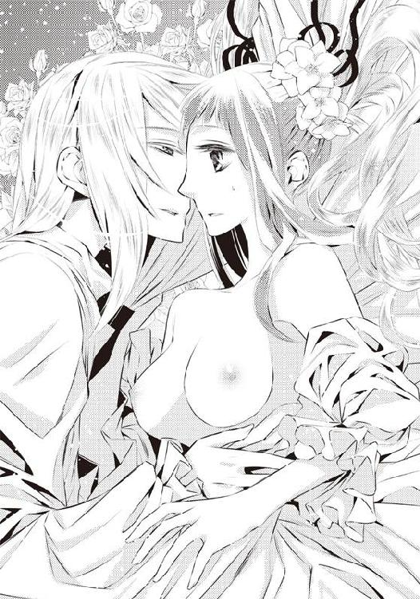
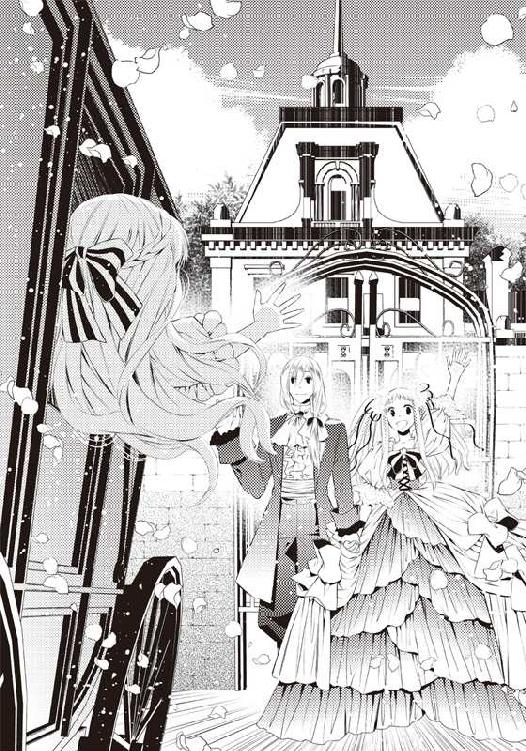

| しあわせな恋のはなし | |
| 館山 緑 | |
| フランス書院 (2011) | |
【ティアラ文庫】
しあわせな恋のはなし【イラスト付】
館山緑
イラスト／坂本あきら

プロローグ ちいさな指輪
セラフィーナがその人と出逢った日は、空の青が鮮やかで暖かな日だった。
父の大学時代の友人である男性が妻子を連れて遊びに来るというのは、母から聞いて知っていたけれど、特にセラフィーナが何をさせられる訳でもなかったので、いつも通りの日だと思っていた。
（お父さまのおともだちと、おくさまとそのお子さん......にごあいさつして、あとはあそびに行っちゃっていいのよね）
まだ赤ん坊の妹、タバサが外に出られるほど大きければ、一緒に遊びに出かけてもいいのだが、まだ小さな妹はゆりかごの中ですやすやと眠っている。客人の来ている時に泣かせることを母は喜ばないに違いない。
だから、適当に挨拶を済ませたら、近くの野原まで遊びに出かけよう。
そんなことを思っていた。
「君が出かけるなら、僕も一緒についていってもいいかな。何もすることがないんだ」
だから、その人が笑顔でセラフィーナと一緒に外に出てくるとは思っていなかった。
まだ七歳のセラフィーナよりも大きくて、陽光を受けると黄金色に輝く髪の毛がとても美しい彼は、実際にはまだ少年だったのだろうが、当時のセラフィーナにはとても大人っぽく見えた。
淡い菫色の眼を丸く開き、少女は問いかける。
「小さい女の子といっしょで、つまらなくないの？」
「多分、父や君のお父上に混ざって、何千年も前に滅んだバビリムの研究について聞いてるよりは、楽しいんじゃないかな」
父と『お父さまのおともだち』の話している内容は、母達が言うには大学時代に二人が共に学び、父が今も尚研究を続けている大昔になくなった国の話らしい。サンドウィッチを振り回し、紅茶をがふがぶ飲みながら議論する姿は、ほとんど喧嘩でもしているようだったが、あれが彼らの楽しみらしかった。
もちろんセラフィーナにはさっぱり意味が解らなかった。
「あのお話にあいづちを打つよりは、おさんぽの方がたのしいわ」
もっともらしくうなずくセラフィーナに、彼は軽く笑いかける。
「君は散歩が好きなの？」
「すき。野原にお花が咲いてた日には、いつもにっきに書いておくの」
「日記をつける習慣があるんだね。えらいね」
「お茶の時間になにを食べたとか、野原に咲いたお花のこととか。今日はおきゃくさまが来るから行っちゃだめって言われたけど、ブルーベルの花がそろそろ咲くから見に行きたいの」
「よかったら僕も連れてってくれる？」
「お花がすきなら」
「うん、好きだよ」
「ならごあんないします」
セラフィーナは大きくうなずいてその人の手を握ると、ぱたぱたと歩き出す。
「今はもうヒースの花はないけど、アルカネットの花がきれい。ブルーベルの花はもうすぐだと思うの。去年のにっきに書いてあったから」
「それでそわそわしてたんだね」
挨拶の時にもそのせいで気もそぞろだったのを、その人に見抜かれていたらしい。
セラフィーナは照れ笑いしながらも、歩く速さを落とさなかった。
暖かな風を受けながら、初めて逢った人にお気に入りの花たちを見せるために幼い少女は意気揚々と歩く。その様子を彼は微笑ましそうに見つめていた。
うららかな青空の下。
少年は少女と手を繋ぎ、それほど広いわけではない野原を歩き回る。
ただ花を見ながら野原を歩いているばかりの二人を、時折彼らの母が窓から微笑ましそうに見守っていたのを、彼らは知らない。
「ねえ、バビリムさんのむすこさん」
「僕はユーシスだよ。父はベネディクト・ドーズマリー」
「あんまりバビリムのおはなしばっかり聞こえてきたから、名前をわすれちゃったの......ごめんなさい」
「あの議論を聞いてたら、人の名前なんて忘れるよ。僕もいきなり訊かれたら君のお父上のことをバビリムさんと呼んでしまうかも知れない」
「そうよね」
少女ははにかんで笑うと、言葉を続ける。
「また、うちにきてくれる？ とっても遠いから......無理？」
「そうかも知れない」
「またあえる？」
「逢いたいよ。だから、頑張る」
「やくそくしてくれる？」
「うん。今度は僕の家の庭を見に来てよ」
「やくそくね」
多分、もう一度逢うことはないのだろう。
二人の父達が再会するまでに多くの時間をかけたことを考えれば、こうして野原を一緒に歩く機会はもうないかも知れない。深い友情で結ばれているのは父親達であって、彼らではないのだから。
約束しながらも、セラフィーナは何となくそう思っていた。
だから、その夜に夫人が贈り物に持ってきた、子供用の小さな指輪をユーシスがはめてくれた時にも、それが『婚約の証』だとは思ってみもしなかった。
ただ、黄金色の髪をした年上の少年が自分の手を取って、そっと指輪を通してくれたことと、その時に面映ゆい思いでキスを受けたことだけが心に残っているばかりだ。
その日のセラフィーナの日記にはこう書かれている。
４がつ17にち
お父さまのおともだちの子どものユーシスと、野原でお花を見た。
かみのけがキラキラのきんいろで、めもこはくいろだった。
やっぱりブルーベルの花はさいていた。
ユーシスに見せてあげられてよかった。
よるにユーシスがゆびわをくれた。ユーシスのお母さまのおみやげ。
そのときに、大きくなったらおよめさんになってって言われた。
およめさんってお母さまみたいになること？
そして、そのままセラフィーナの中では楽しかった一日として時が過ぎていった。
小さな指輪と日記だけが、少女の辿りうるよすがとして残されていたが、その小さな思い出が九年の後に動き始めることなど、誰も予想してはいなかった。
その兆しを知る者は少年と風と、野原に咲く花たちばかり。
第一章 求婚
「お父様、お母様。本当に何かの間違いじゃないの？ 一度しか逢ったことのないわたしを花嫁に迎えようなんて、どう考えてもおかしいと思うのよ」
馬車に揺られながら、亜麻色の髪の愛らしい少女、セラフィーナ・アリンガムは戸惑った顔で向かいの席に座っている父と母の顔を見た。
セラフィーナの向かい側には笑顔で父デクスター、母ルイザが座っており、隣ではまだ九歳の妹、タバサが気もそぞろに外の景色を眺めている。家族が全くこの結婚話について切実に考えている様子がないのを見て、セラフィーナは深く溜息をついた。
「どう考えたって、一度しか逢ったことのないのに花嫁にしようなんて思えるほど、引く手あまたじゃないと思うのよ。絶対何かの勘違いじゃないかしら」
この問いを発したのは、これで何度目だろう。
九年前、確かに指輪を受け取りはしたけれど、『あれ』は婚約というよりは微笑ましい家族同士の団欒でしかなかったはずだ。
セラフィーナにとっても、あの日はとても幸せで楽しいひとときだった。また逢いたいとずっと願ってきたのも事実だ。しかし、当時の日記を見返して『およめさんになる』と書かれている箇所を読み返しても、ほとんど思い出せなかった。
心の中にあるのはただ、青い空の下でユーシスと花を見て歩いたこと。
手を繋いだ時のぬくもり。
黄金色の髪が、陽光に照らされてキラキラと輝いていたこと。
本当にささやかで、可愛らしい思い出ばかりだった。
だからこそ、こうして花嫁となるために彼の家まで向かっていても、全くそんな気がしないのだ。
「でも、お父様やお母様はあちらからのお手紙を受け取っているんでしょう？ どのくらい本気で言い出していらっしゃるのか、ちゃんとお解りではないの？」
「......お姉さま、むだよ」
「タバサ？」
隣に座っている九歳のタバサが、ちょんちょんと姉の裾をつまむ。
「お父さまもお母さまも、お姉さまの縁談のことなんて本気で考えていらっしゃらないわ」
「タバサ、何を言うんだ。お父様はお前達の幸せのことを一番に──」
言い訳しようとする父に向かって、タバサが指を差してみせる。
もちろん無礼な行為だが、全くお構いなしだ。
事情が事情なので制止する気力など出るはずもなかった。
「あたし、ゆうべはちゃーんと聞いてましたからね。お父さまはまたあちらのお父さまとバビリムの話をするんだって、いっしょうけんめい勉強してらしたわ。それに、お母さまだって、きのう言ってらしたじゃない。『本当におよめさんになるのかしらね』って」
「そんなこと言ったかしらねえ？」
母が笑いながら窓の外に視線をそらす。
父もぷんぷんと怒り始めた末娘を見て、苦笑いしていた。
実際、父も母もドーズマリー行きが正式に決まっても、実に暢気なものだった。
ドーズマリー領主ベネディクトは父デクスターの学友で、共に数千年前に滅亡したバビリム王国について研究をしていた身だ。バビリムに関する本も何冊も著している。
自宅にも山ほど持ち込まれている石像や石碑を見ても、セラフィーナにとっては謎の物体でしかないが、父にとっては楔形文字で書かれた何かや古めかしい品々はとても大切なものらしい。
なので、父にとってはこのドーズマリー行きの話も、九年ぶりに学友とバビリムについて熱い議論を交わすついでに真偽を確かめる程度のことなのだろう。
「まあ、私達にも真剣味が足りなかったのは事実なんだが......何というか、何も用意しないで身一つで結婚するとなると、本当なのかどうか怪しいんじゃないかと思っているんだ」
「お父様、それはいくら何でも」
「正直言うと、ベネディクトから手紙は受け取っているし、正式に結婚させたいとも書かれていたんだが......まさか正気かどうかなんて手紙を出すのも気が引けるし、とりあえず話を聞きに行こうというのが、私の考えだ」
「それは行き当たりばったりすぎだわ」
セラフィーナは深い溜息をついた。
「もし駄目だったとしても、向こうでゆったりと湖を見て楽しく過ごしてくればいいと思うのよ。向こうはとっても景色が綺麗だっていうしね」
そこまで両親が言ったところで、セラフィーナは小さく首を振った。
「もういいわ......きっと何かの間違いよ。思わぬきっかけで素敵な旅行ができると思いましょう」
「でも」
それまでぷんぷん怒っていたタバサがうつむき、小さな声で漏らす。
「なあに？」
「もし本当に結婚するってことになったらどうするの？」
歳の離れた姉妹の間に、間の悪い沈黙が漂った。
「......どうなるのかしらね」
困った顔でセラフィーナが笑うと、タバサは大げさに溜息をついた。
「やっぱりお姉さまも、アリンガム一族の人間よね。のんきすぎだわ。もし成長したユーシスさんが青髭みたいな猟奇的な男性になってしまっていたらどうする気なの？ もしかしたらポーの『黒猫』みたいに殺されて壁に塗り込められてしまうかも」
「そうしたらきっと、あなたが書く小説の題材になるに違いないわ。壁から掘り出されるシーンでは美人に書いてね」
タバサは最近、学校の友達と一緒に『物語クラブ』を作り、秘密裏に活動しているらしい。秘密とはいっても実際には会話の端々にその話題が出てくるので、どんな話を書いているのかもセラフィーナもある程度は知っていた。
「お姉さまったら！ 本気で心配してるのにっ」
「ありがとう、タバサ。もしユーシスさんが青髭のような人なら、絶対助けに来てね」
「......もう」
タバサはかすかに口を尖らせると、姉の腕にしがみついた。
「こんなに早く結婚なんて......しかも遠くまでお嫁に行っちゃうなんて......うそだったらいいのに」
「そうね」
セラフィーナは妹のくるくるとウェーブのかかった髪を撫でると、そっと抱き寄せた。
（本当なのか間違いなのか解らない縁談って、罪作りね）
もし自分が男性を惹きつけることなど日常茶飯事になっている蠱惑的な美女だったり、うなるほどの持参金と共に結婚することになる資産家の女性なら、自分と一回しか逢ったことがなくても、相手の本気を疑うことはないだろう。
たった一度しか逢ったことのない人。黄金色の髪のユーシス。野原を散歩して、おみやげの指輪をはめてくれた人──彼は本当にたった一度しか面識のない少女と結婚しようと思っているのだろうか。
ユーシスの父は大きな湖に面した城に住んでいる領主なのだという。
それならどんな素晴らしい女性も選び放題なのではないだろうか。
彼とのわずかな思い出はとても美しいものだったし、望まれるのは決して嫌ではなかったけれど、そもそも妻として求められているというのがどういうことなのか、セラフィーナには想像もできなかった。
しかし、答えが出ようが出まいが馬車は刻々とドーズマリー領へと近付いていく。
長女の縁談を全く切実に考えていないアリンガム家の人々は、自分達にどんな未来が待っているのか全く予想してはいなかった。
広大な領地を縫って走る馬車は刻々と大きな城へ近付いていく。
窓から顔を出して覗き見たタバサが眼を輝かせ、姉に向き直った。
「本当にお城なのね！ お姉さま、こんなお城にお嫁にゆくなんて大丈夫なの？」
「......えーと」
アリンガム家の人々の前にそびえている古めかしい城を見上げ、タバサが口をあんぐりと開けている横で、セラフィーナは茫然と立ち尽くしていた。
「歴史書の中に来たみたい。お父様はドーズマリー家がこんな立派なお城に住んでいると知っていたの？」
「いや、全然。昔、別荘の方には行ったことはあるけど、こっちは初めてなんだ。それにしても古い城に住んでるとは聞いていたが、どのみちバビリム王国の遺跡に較べれば、大抵の城は新しいんじゃないか？」
「あなたらしいわねえ」
さすがに暢気なセラフィーナも、両親が全く当てにならないことに不安を感じていた。
歴史学者の父を持つ身なので、城といっても王宮のような豪奢で大きなものから、ちょっとした屋敷程度の規模のものや、崩れた廃墟もどきに至るまで、いろいろあるのだと知ってはいたが、ドーズマリー城は王宮とまではいかなくても、かなり立派な城だったことで大いに戸惑ってしまった。
（これはさすがに、間違い......よね）
もし、ドーズマリー城がちょっとした屋敷程度なら、父の友人の娘との縁談というのはそれほど不思議でもないだろうが、ここまで家柄が違いすぎるのでは絵空事にしか思えなくなってきた。
身動きもしない姉を見上げ、タバサが心配そうに声をかけてくる。
「お姉さま、大丈夫？」
「何も心配することないわよ、多分ね」
セラフィーナは穏やかに笑う。
「こういうお城で起こる縁談というのは、それ相応のお姫様のところにくるものよ。わたしのような普通の女の子のところには来ないものなんだから」
「......そうかしら」
疑わしそうにタバサが溜息をつく。
「ええ、きっと大丈夫。せっかくだから帰りには湖に寄ったりして、スケッチでもしましょうね。きっと綺麗よ」
「だったら......あれは？」
タバサがある方向を指さす。
「えっ？」
人を指さすのは妹の悪い癖だ。やめなさいと言おうとしたが、指の向けられた方を見て、セラフィーナは思わず言葉を呑み込んでしまう。
どことなく見憶えのある、立派な身なりの夫婦が慌てて馬車の方へと駆け寄ってくるのを見て、セラフィーナは悟った。
（やっぱり......これは、私達が何か間違ったことになっているんだわ）
さすがに縁談ではなかったが、今までもこんなことはよくあった。
父が関わると、周囲の人々が慌てふためいて集まってくるような目に遭うのは珍しくないので、悪い意味で馴れてしまっていたのだ。
「デクスター！ 支度金には手を付けなかったのか!?」
普段は温厚そうに見える壮年の男性がまくしたてながら走ってくる。
その上品に整えられた髭と顔立ちにわずかではあるが記憶があった。父の友人である、ドーズマリー領主ベネディクトらしい。だとすると、その隣にいる落ち着いた印象の女性が領主夫人だろう。当時は名前を聞いていなかったが、招待状を見る限りでは名前はガートルードと言ったはずだ。
慌てている旧友を見ても、父は全く動じずに笑う。
「どうした、ベネディクト。何かあったのかい？」
「それは私が言いたいよ！ ちゃんとレイモンドが小切手を渡しただろう。どうして何も支度しないで来たんだ。これじゃ避暑がてら泊まりに来たようにしか見えんじゃないか」
「レイモンド──ああ、前にうちに来たね。忙しかったからあんまり憶えてないが。私はちゃんとお構いしたかい？」
ベネディクトの怒声を聞いても、今日はいい天気だねとでも言うように笑っている。
「ちょっと待て！ まさか、セラフィーナさんは今回のことを何も......？」
「結婚の日取りの手紙は読んだぞ。だから家族で来たんじゃないか」
領主は飄々とした様子の友をしばらく見ていたが、やがて深い溜息をつき、後ろに控えている白髪の老人に視線を移した。まるで木の棒のように骨張った、小柄な老人だ。
「......レイモンド、ちゃんとデクスターに確認を取ったのか？」
「もちろんでございますとも」
謹厳な様子でうなずいている家令らしい老人を、タバサがじろじろと見上げた。
「この方、お母さまとお姉さまがお出かけの時、うちにいらしたわ。まさか、あんな時に縁談の相談をしていたの？」
眼を丸くし、信じられないという様子で漏らす少女に顔を向けて、領主が少しかがんでみせた。
「お嬢さん、あんな時というと......何かあったのかね？」
「お父さまが論文を書いていた時よ！ きっとその時のお話なんて、お父さまの頭から三分もしないうちに消え去ってるわ。その......シタクキンとやらについても、きっと書斎のどこかに放り出してあるはずよ」
その言葉にアリンガム教授本人を含め、全員が言葉を失った。
噂程度であってもデクスター・アリンガムの名を聞いたことがある人間ならば全員、彼が浮世離れした変人であることを知っており、論文を書いている時には何を言っても無駄だというのは有名な話だったのだ。
それはグランタ大学で共に学んだベネディクトも身をもって思い知っていたはずだが、学生時代から二十年以上過ぎていることもあり、記憶が薄らいでいたらしい。
だからこそ、領主の顔はあっという間に蒼ざめる。
「だとすると、セラフィーナさんはどこまで話を聞いていらしたのかね」
「......九年前に指輪をいただいたユーシスさんと結婚する話があるから、馬車でドーズマリー領に出かける......と」
セラフィーナが間の悪い思いで返事をすると、領主はがっくりとうなだれた。
「そんなでたらめな説明でここまでいらしたのでは、さぞかし不安だっただろう。本当に済まないことをした」
「馴れてますから平気です。お気になさらないでください。間違いだったら観光して帰ろうと言われていましたし」
困ったように微笑んだ少女を見て、領主はますますいたたまれない気分になったらしい。表情は一層沈んだものとなった。
「あなた、とりあえずデクスターさんとルイザさんに、今回の件についてしっかりとお話をした方がいいと思いますわ。それまで一度、お嬢さん達にはどこか別室でお待ちいただいてはいかがかしら」
「......そうだな。まずはそこからか」
ベネディクトは深い溜息をつき、家令のレイモンドに向き直る。
「セラフィーナさんとタバサさんを別室にお通しして、おいしいお茶とお菓子でも召し上がっていただきなさい──ああ、そうだ。今の時間なら四阿の方が過ごしやすいかも知れんな。四阿の方へご案内してくれ」
「かしこまりました。セラフィーナ様、タバサ様、どうぞこちらへ」
レイモンドが一礼して歩き始めたのを見て、セラフィーナとタバサは顔を見合わせた。
もし縁談が進むのならセラフィーナは当事者の一人だが、デクスターの考えや言動によっては破談も充分に有り得る。セラフィーナはいない方がいいのだろう。
「行きましょう、タバサ」
「ええ、お姉さま」
まだまだ大騒ぎすることになるであろう両親達を置いて、案外平気な顔をして娘二人は家令についていく。アリンガム家の娘としてやっていくには、未来のことで思い悩んではいけないのだ。
「こちらでお待ちくださいませ。すぐにお茶をご用意いたします」
花々の咲き乱れる庭を一望できる四阿に姉妹を案内すると、家令は恭しく一礼して立ち去った。レイモンドの気配が完全に消えてから、タバサが口を開く。
「......お父さまのことだもの。しょうがないわよね」
「そうね」
レイモンドが縁談の打ち合わせのために来訪した日、もし自分が自宅にいれば多少なりとも注意もできたに違いないが、いくら年齢よりもしっかりとしているとは言え、まだ九歳のタバサが父の行動について何十歳も離れた老人に釘を刺すことはできなくて当たり前だった。
「破談になってもならなくても不思議じゃないけど、とりあえず明るく過ごしましょう。ほら、お花が本当に綺麗よ。丹精して育てているのね」
セラフィーナが眼を細めて庭を見回すと、タバサは困ったように笑う。
「お姉さまは......いつも幸せなのね。何だかうらやましいくらい」
「そう？」
「もしあたしがお姉さまだったとしたら、お花を見ている気力なんてとても出ないわ。お父さまが何を言い出すか解らないし、何がどちらに転ぶかと思うだけでムッとする」
「わたしのことを気遣ってくれているのね。ありがとう」
「あたし、ユーシスさんを知らないんだけど、どんな方なの？ こんな大騒ぎで気分を悪くして、お姉さまのことを悪く言ったりしないかしら」
セラフィーナがユーシスに出逢った頃、タバサはまだ赤ん坊だったのだ。肝心のセラフィーナの記憶すら危ういのだから、歳の離れた妹が憶えているはずもなかった。
「実は、あんまりよく知らないの。ただ......やさしい方だったと思う」
「一度しか逢ってないのにそんなのわかるの？」
当然の言葉を受け、セラフィーナは困ったように笑い返す。
「一緒に野原を歩いただけだけど、その時にはとてもやさしくしてくださったわ」
多分、二人で歩いたのは一時間半ほどのことだろう。
特に何かを話した訳ではなく、咲いている花のことやいい天気だねという程度の言葉を交わしていただけの時間を思い起こす。
暖かい空気に漂う花の香りを楽しみ、空に鳴く雲雀の声を聴いて歩いただけの時間。
交わした言葉もせいぜい『あのブルーベルがさくのを待っていたの』『なんにちかまえにはアネモネの花がさいてたけど、もうかれちゃった』──この程度でしかなかった。
だから彼がおみやげの小さな指輪をはめてくれて、『僕のおよめさんになってね』と言ってくれた時にも、結婚するということの意味など何も考えず、野原を歩いていた楽しい時間の延長線上の感覚でうなずいていたのだ。
「お姉さま、ほんとにお花の話ばっかりしてたのね」
「ええ」
「何でユーシスさんはそんなお話しかしてないのに結婚しようなんて思ったの？ お父さまがバビリムの研究してるみたいに、お花の研究でもしてたのかしら」
「......解らないけど」
「それ、やっぱり何かの勘違いの方がありえそうよね」
「だったら、今のうちにこのお庭をゆったり見ておくことにするわ。後で間違いだったら、いたたまれなくて庭を見物している余裕なんてないかも知れないし」
「あたしはここで待っていていい？」
「ええ」
セラフィーナは妹に微笑むと、ゆったり歩き出した。
ドーズマリーの地は生まれ育ってきたグランタとは違い、五月の午後に燦々と輝く陽光を受けていても風は涼しく心地よい。
セラフィーナの亜麻色の髪がさわさわとなびき、頬をくすぐった。
顔もはっきり憶えていないが、ユーシスと野原を歩いた日もこんな天気だった気がする。
澄み渡る青空の下、手を繋いで歩いた日のことをおぼろげに思い出していた。
「あの日は......ブルーベルの花を見に行くつもりだったんだわ」
今もそうだが、子供の頃から近所に咲く花々を見て回るのが大好きだったセラフィーナは、近所に咲いている好きな花々の場所を散歩するのが日課になっていた。
ユーシス達一家がやってきた時にはちょうど、ブルーベルの花がそろそろ咲く時期にさしかかっており、わくわくを通り越してはらはらしながら待ち構えていたのだ。父の旧友一家が訪れることよりも、そちらの方がずっと重大な問題だった。
だが、それぞれの父二人がバビリムの話題で熱い議論を戦わせている間、何となく二人で野原を歩いて花を見ていた時間は、セラフィーナにとってほんの少し特別なものになっていた。
視界の隅に見憶えのある淡青紫の咲きだまりを見つけ、思わず眼を見開いた。
「あ」
あの時見たのと同じ、ブルーベルの花。
グランタの地では既に枯れ始めてしまっているが、涼しいドーズマリーでは未だにたくさんの花が咲き乱れている。
あの日ユーシスと一緒に見たブルーベルの花はまだ咲き始めの一輪だけで、残りは蕾のままだった。こんなにたくさん咲いたブルーベルを見せてあげられたら、きっと誇らしい気持ちになっただろう。
セラフィーナはブルーベルの花よりやや濃い菫色の瞳を花に向け、溜息をついた。
「何かお困りですか？」
突然、後ろから声がかかる。
慌てて振り返ると、回廊の方から一人の青年が近付いてくるのが見えた。
淡いブロンドの髪がきれいに整えられている、姿勢のいい青年だ。大体二十歳過ぎといったところだろうか。身なりを見る限りでは身分の高い男性のようだ。ドーズマリー家の一族なのかも知れない。
その端正な容貌は、きっと社交界でも多くの女性達が見惚れることだろう。
セラフィーナは青年に軽く首を振ってみせる。
「もしかしたらここでブルーベルの花を見るのもこれが最後かも知れないので、堪能してるところなんです」
「えっ？」
青年の琥珀色の眼が見開かれた。
「間違っていたら申し訳ないけど......セラフィーナ？」
「はい、セラフィーナ・アリンガムです。初めまして」
ぺこりと会釈をすると、青年はかすかに首を振る。
「初めましてじゃないよ。君とは一度逢っているからね」
思わず不思議そうに彼を見上げる。
もちろんセラフィーナ・アリンガムの名は『花嫁の名前』として城内の誰もが知っているのだろう。名を知られていること自体は不思議ではない。
しかし、彼は『一度逢っている』と言ったのだ。どういうことだろう？ 自分の交友範囲にはこんな美青年はいなかったはずだ。いくら世間知らずのセラフィーナでもこんなに目立つ男性がいたら憶えている自信があった。
「あっ」
彼の笑顔に見憶えがあるような気がした。
そして、印象深い琥珀色の瞳が心の中に引っかかっている。
ただ、その人の髪の色は淡いブロンドではなく、まるで黄金を思わせるような鮮やかな金色だったはずだ。
「ユーシス......さん？」
頼りない声で問うと、青年の笑みは少しだけ寂しそうなものになった。
「もう九年も経っているから、僕の顔を忘れてしまった？ 君はまだ七歳だったし、仕方ないけど」
「いいえ。ただ、髪の色が前と違っていて」
「ああ、子供の頃とは髪の色が変わったね。でも、君は......すぐに解ったよ。君が大きくなったらこんなだろうと思う姿に成長してる」
微笑むユーシスの瞳が濃い蜂蜜のような色を帯びるのを見て、セラフィーナは何となく猫の眼の色がくるくる変わるのを思い起こした。
二人で野原を歩いたあの日には、花ばかり見ていたから気が付かなかったのだ。
「来てくれて嬉しいよ。あの日の約束が守れて......って、さっきとんでもないことを聞いた気がするけど。セラフィーナ、僕と結婚するためにドーズマリー領に来てくれたんじゃなかったの？」
「その話なんですけど、ちょっと困ったことになっているところなんです」
「どういうことかな？」
セラフィーナはどう説明したものか迷ったが、やがて小さく溜息をついて覚悟を決めた。
父とバビリム研究絡みの件では、いつもこんなことばかりなので、アリンガム家の人間は全員慣れっこになっているが、ユーシスはそうではない。
セラフィーナは順序立てて結婚の打ち合わせに来たレイモンドの話を聞いた父が、論文を執筆している最中に来客を迎えてしまい、縁談に関する話も書類も全て忘却の彼方へと放り投げてしまったことと、結婚の予定日の書かれた手紙を見て、事情も解らないまま一家でやってきたことを説明した。
「だから、今あなたのご両親が私の両親に縁談の説明をしているところなんです。お二人が父に呆れて縁談を撤回するかも知れないし、このまま庭を見られなくなったら残念だと思って、少し見ていたんです」
困ったように笑うセラフィーナを見下ろすと、ユーシスはセラフィーナの髪に指を伸ばし、そっと触れた。
子供の頃とは違う長い指を見て、何故か胸が高鳴ってしまう。
「セラフィーナ、『僕のおよめさんになってくれる』という話は憶えてる？」
「日記に書いてありました」
「じゃ、憶えてはいない？」
「あまり」
そう言った瞬間、ユーシスは明らかに落胆する。
がっくりと肩を落とす様子が哀れになり、思わず言葉を続けてしまった。
「でも、二人で手を繋いで......野原を歩いて、ブルーベルの花を一緒に見ましたよね。その時にまた逢えるかどうか訊いて......」
子供の頃に歩いたあの日。
明るい青空の下、こんな言葉を交わしていた。
『またあえる？』
『逢いたいよ。だから、頑張る』
『やくそくしてくれる？』
『うん』
小さな子供だったセラフィーナとの約束を、ユーシスは守ってくれたのだ。
「ユーシスさん」
「前にはユーシスと呼ばれてたから、そう呼んでくれる？」
「はい......ユーシス」
前に散歩した時には感じなかったはずの胸の高鳴りが、何故かずっと止まらない。
「前に逢った時に、家の庭を見せてくれるって言っていて」
「うん、君が来てくれたら案内しようと思っていたんだ」
「じゃ、もし縁談が駄目になっても、約束を守ってくれたことになりますよね。こうして一緒に庭を見られましたし」
セラフィーナは面映ゆそうに、たった二度しか逢っていない『婚約者』を見上げ、微笑んでみせた。
しかしユーシスは少女に返事をしないまま、何事かを考えていた。
「セラフィーナ」
ややあってユーシスが名を呼ぶ。
「思い出してもらえないのは残念だけど、なら改めて訊くよ。僕と結婚してくれる？」
「はい」
即答してしまってから、セラフィーナはやっと自分が何故こうして庭で待っているのかを思い出した。
今頃は双方の両親が縁談の是非についてあれこれ話し合っているはずだ。そんな時にあっさりと返事をしてよいものか、もう少し考えるべきではないだろうか。
そんなことを思ったが、ユーシスがその琥珀色の瞳を嬉しそうに輝かせているのを見ると、そんなことはどうでもよくなってきてしまった。
ただ、じんわりこみ上げる嬉しさだけが、セラフィーナの胸を埋め尽くしていた。
「なら、一緒に来てくれる？」
気が付かないうちにうなずいていたらしい。セラフィーナの反応に呼応するように小さくうなずき、青年は歩き出す。
どこへとは訊かなかった。
ただ、こうして手を引かれて歩くことが懐かしいと何となく思っていただけだった。
「僕達は結婚しますから」
ユーシスが応接室で話している互いの両親に向かってそう宣告した、その言葉だけはっきりと憶えている。
しかし、何故かその前後のことを、セラフィーナは憶えていなかった。
セラフィーナが我に返ったのは、四阿でお茶を飲んでいたはずのタバサに自分の腕を掴まれて、揺さぶられていた時だった。
「お姉さま、お姉さま！」
「......え？」
突然眼前に現れた妹に驚いて、セラフィーナは眼を丸くする。
「タバサ、どうしてここにいるの？」
「何を言っているの。さっきからずうっと呼んでいたのに」
「そうだった？」
我に返ってみると、ユーシスと共に歩いてこの部屋に入ってきたはずなのに、いつの間にかソファに座っている。その脇でタバサが手を掴んでいたのだ。
「わたし、どうしていたの？」
「あたしが呼ばれてくる前のことはよくわからないけど、ユーシスさんと一緒に結婚の報告に来た後で、お姉さまのぐあいが悪そうだから様子を見てって言われたから来たの」
「具合は......別に悪くないけど」
ただぼうっとして、自分の体験したことをあまり思い出せていないだけだ。
「ユーシスさんと結婚の報告にきたのはおぼえてる？」
「ええ、そこだけ」
「それじゃ、結婚するのは何かのまちがいじゃないのね」
タバサはほうっと息をついた。
どうやら妹が心配していたのは、姉がぼうっとしている間に合意を得ないままで縁談を進められてしまった可能性らしい。
もの問いたげに妹が自分を見つめている。
「じゃ、ほんとに結婚しちゃうのね」
「そうみたい」
「みたいって......ほんとにそれでいいの？ ここに来るまで『何かのまちがい』だって言っていたのに？」
そう問われ、セラフィーナは困ったように笑った。
詩集に収められている恋の詩のように、衝撃的な思いはなかったような気がする。
二人で逃避行したり、仲を反対されたりドラマティックな展開もなかった。せいぜいが父、デクスターのお馴染みのど忘れで大騒ぎになっただけで、ロマンも何もあったものではない。むしろあまりの情緒のなさに結婚する気が失せてもいいような状況だ。
なのに、ユーシスと共に花を見て、手を取って歩いた時間のせいか、彼と結婚することがとても自然に感じられていたのだ。
「わたし、ユーシスと結婚したい......みたい」
「みたい──って。ユーシスさんが聞いたらがっかりするわよ」
「もう、七歳の頃に結婚しようと言われた時のことを憶えてないって言ったら、がっかりされた後よ」
「うわぁ、ひどい。あたし、初めてユーシスさんがかわいそうになってきたわ。アリンガム一族結婚のサンゲキね。次の物語クラブで発表しよう」
「それ、やっぱり殺人事件が起こったり壁に塗り込められたりするの？」
「もちろんよ。オーギュスト・デュパンよりすごい名探偵が解決するのよ。まだ名探偵の設定は全然考えてないけど」
どうやらタバサの物語クラブで探偵小説を書いているらしい。
ぜひ読ませてと言おうと思ったが、それよりも前にタバサが憂い気に眼を伏せる。
「どうしたの？」
タバサの頭にそっと掌を載せると、妹は拗ねたように口を尖らせる。
「物語クラブの小説だったら、すごいサンゲキや死体がいっぱいでもいいけど、お姉さまは......幸せになってくれなくちゃいや」
「ええ、大丈夫よ」
「ほんとに？」
自分と同じ色の瞳が潤んでいるのを見て、セラフィーナはやさしく笑う。
もしユーシスに対して燃えるような恋をして、その結果として結婚することができたのなら、きっと妹に語る言葉に説得力が出ただろう。
いっそ打算で相手を選ぶのなら、理由にも筋道が通ったかも知れない。
しかし、今の自分の思いはあやふやで、言葉にできる根拠も何もないのに、ユーシスと結婚する未来を自然なものとして受け入れている状況をうまく説明できなかった。
それでも──妹を抱き寄せ、安心させるような口調で続ける。
「わたしはあなたみたいにたくさん物語も読んでいないし、他の女の子達のように恋をしたこともないわ。今まで誰かと結婚したいと思ったこともなかった。でも、何となく思うの......大丈夫だって。だからきっと、タバサが心配するようなことはないわ」
「ほんと？」
「ええ。わたしが大丈夫だと言って、大丈夫じゃなかったことなんてないでしょう？」
根拠などはなかった。
それでも、何故か自分の言葉が正しいのだと知っているような気がしていた。
その思いが届いたのだろうか。タバサはしばらく姉を見ていたが、やがてこくりとうなずいてみせる。
「そうね。お姉さまがそう言うなら、きっとそうね。お父さまの言うことは当てにならないけど、お姉さまの言葉なら信じる」
その言葉を聞いた時、一瞬、妹に対して申し訳ない気持ちがよぎる。
できれば可愛い妹に対して、何故ユーシスと結婚することに不安を感じていないのか、教えてあげたいと思ったが、セラフィーナ自身にも理解できていないものを教えることなどできない。
ただ『大丈夫』だと繰り返すことしかできない自分がもどかしくてならなかった。
ユーシスの日記
５月18日
今日、セラフィーナがグランタから来た。
初めて逢った七歳の頃よりずっと背が伸びて成長していたけれど、それ以外は嬉しくなるくらい変わっていなかった。
あの日と同じようにブルーベルの花を見ていた彼女は、相変わらず触れたら花びらを散らしてしまう、ひっそりと咲いている花みたいな女の子だった。
結婚してくれるかと訊いたら、澄んだ瞳で僕を見て求婚を受けてくれた。手を繋いで歩いた時にも、僕に手を引かれるままについてきてくれた。
でも、きっと彼女には結婚の意味はあんまり理解できてはいないのだろう。無邪気に家族と話している姿を見ていても、僕が彼女を思うようには思ってくれていないことくは解る。
多分、僕の方が間違っているんだろう。
セラフィーナが誰かに恋をする前に、僕の側に置いておきたいなんて、本当は間違っている。そんなことは解っている。
もしこれから彼女が僕を特別に思うことがなく、グランタを懐かしんで泣くことがあったら、ちゃんと責任を取ることができるのだろうか。
初めて一緒に歩いた野原から、無理やり花を抜いてドーズマリーの地に植えようとしているようで、自分の決意が本当に正しかったのか、ずっと迷ったままでいる。
第二章 はじめての夜
当初の予定通り、十日後にユーシスとセラフィーナの結婚式が行われることとなった。
元々、結婚式のために準備を整えていたはずのドーズマリー城の人々は、準備万端のはずだったが、グランタ大学名物教授の番狂わせのせいで、予定外の忙しさに慌てふためくこととなった。
もちろん、花嫁となるセラフィーナは息をつく間もない忙しさだが、本来は結婚式までの間ゆったりと過ごすはずだった花嫁一族もまた、それぞれの衣装を急いであつらえるために飛び回る羽目になっていた。
そして、婚礼衣装の最終調整をようやく終えたセラフィーナが、よろよろと自分に割り当てられた部屋に戻ろうとしている途中、廊下を歩いてくるユーシスと鉢合わせした。
穏やかな笑顔を見せてくれるユーシスに、軽く一礼する。何日か後には夫婦となっているはずではあるが、まだあまり近くに寄るのは恥ずかしかった。
ほんのりと頬を染めて婚約者を見上げる。
「セラフィーナ、お疲れ様。無理はしていない？」
「はい。忙しいですけど、そんなに無理はしてません」
こうして二人きりで話すのも、城へとやってきた当日以来だと気付き、セラフィーナは不思議な気分になった。
（わたし、本当にこの人と結婚するのね）
ついさっきまで婚礼衣装を合わせたりで大変な思いをしていたというのに、あと数日後に自分の夫となる青年と二人きりになったのがこれで三度目なのだ。
結婚式までにあと何度こうして話せるのだろう。
とても未来の夫に対して抱いているとは思えない感想に、自分でもおかしくなってきた。
「どうしたの？」
いつの間にか笑ってしまっていたらしい。ユーシスにもの問いたげに見つめられ、小さく首を振りつつ言葉を探す。
「わたし達、本当にもうすぐ結婚するんですね。まだほとんど顔を合わせてないのに。もしかして、身分の高い人達の結婚って、こういうのが日常茶飯事なんですか？」
「う、うーん......そういう縁談もあると言えばあるよ。ものすごく珍しい訳じゃない」
「なら、わたしと結婚することにして、大丈夫なんですか？」
首を傾げ、菫色の瞳で自分を見上げる婚約者に、ユーシスは困ったように笑う。
「廊下で立ち話する話題じゃないね。少し、二人で話そうか」
「はい」
ユーシスはそっとセラフィーナの手を取って歩き出す。
身長は違うのに、歩く速さがセラフィーナと同じだ。
歩幅を合わせてくれているらしい。
（そう言えば、初めて歩いた時にもそうだった）
あの頃、既にセラフィーナは学校に通い始めていたが、あの当時十二歳の少年達とすれ違う時には、彼らは大股で走り抜けていったような気がする。七歳の小さな女の子と同じ速さで歩いてくれる少年などいなかった。
そもそもタバサと歩く時ですら、せっかちに駆け出していっては「お姉さま、遅い」と戻ってくることもよくあった。それでやっと花に見とれて立ち止まっていることに気付くぼんやりぶりだ。
あの当時のユーシスが自分に合わせて歩いてくれていたのだと、やっと気付いた。
「ユーシス」
「何？」
「わたし、歩くの遅くありませんか？ もしかしたらぼうっとしていてユーシスに迷惑をかけているのかも知れません」
「そんなことないよ。何でそんなことを思ったの？」
「歩く速さを合わせてくれていたから」
セラフィーナがそう言うと、ユーシスは握った手に少しだけ力を込める。その間もやはり歩く速さは一定だった。
「確かに僕一人で歩いている時にはもう少し速く歩くけど、君とこうして歩く速さを合わせているのが苦痛になっている訳じゃないんだ。気にしないでくれるかな」
そこまで話したところで、ユーシスが言葉を選んでいるのか少し考え込んでいるような気配が伝わってくる。
整った横顔を見上げ、婚約者の言葉を待った。
ややあって、ユーシスが再び口を開く。
「多分、君と散歩するのが好きなだけだから、趣味だと思ってつきあってほしいな」
爽やかな笑顔を向けられ、セラフィーナはかすかに頬を染めた。
「......時々ぼうっとお花を見たり、あちこち立ち止まったりしてますけど、それでもよければ」
「君は最初から歩いてる時にいつもぼうっとしてたから、そういうものだと思ってた」
「えっ」
とんでもないことを言われた気がするが、ユーシスは嬉しそうに微笑んでいる。
そのせいかセラフィーナも何となく嬉しくなってしまい、微笑み返した。
「わたしの散歩につきあって楽しい人に初めて逢いました。わたしがあんまり花ばかり見て足を止めるから、タバサもあまり一緒に散歩してくれないんです。最近はお友達と始めた物語クラブに夢中で、姉と散歩してくれる歳じゃなくなったみたい」
「姉妹で性格や好きなものがずいぶん違うんだね」
「ずいぶん年上なのに、妹と較べると頼りなくて恥ずかしいです」
もし、自分が年相応にしっかりとした姉なら、いくら父に振り回されて大事になってしまったとは言え、タバサもあそこまで姉の縁談を心配したりしなかっただろう。
「でも、君は君なんだから、そんな風に卑下することはないよ。僕は君が──他の誰でもなく君が妻となってくれることが嬉しいよ」
いつの間にかセラフィーナの足が止まっていた。
「まだ、三回しかこうしてお話ししていないのに？」
「お嫁さんになってとお願いしたのは初めて逢った時だよ」
「あの時にもちゃんと結婚したいと思ってくれていたんですか？」
「確かに十二歳は子供だけど、結婚したいと思ってもいないような相手に求婚できるほど子供でもないよ？」
「そうかも......知れませんね」
だとしたら、今の自分は十二歳のユーシスよりも子供なのかも知れない。数日後に結婚を控えている相手に対して、自分がどう思っているのかも理解していないのだから。
ただ、ほとんど顔を合わせてすらいないこの人に手を引かれて歩くのが心地よかった。この人の長い指が自分の指に絡むのが嬉しかった。
これから一生を共にする相手なのだから、本当はもっと真剣に考えるべきなのに、この人との間に流れる空気が温かくて、そんな気が失せてしまうのだ。
本当はこんな時こそ言葉を尽くさねばならない気がするのに、ちょうどいい言葉が見つからないまま、この温かさに甘んじてしまっている。
「君は──僕が夫でも構わない？ もしかしたら他に誰か好きな相手がいる？ 今頃になってこんなことを訊くのも間抜けだけど」
ふたつの問いを投げられ、セラフィーナは軽く首を傾げる。
「それ、どちらに先に答えたらいいんですか？」
「じゃ、順番に聞かせ──」
後ろから突然、咳払いが聞こえた。
「きゃっ」
「坊ちゃま、誰が通るか知れないこのような場所で、甘い会話などなさりませんよう。使用人に示しが付きません」
いつの間にか二人の横に小柄な白髪の老人が立っていた。家令のレイモンドだ。
「レイモンド、いつからいたんだ」
「ついさきほど参りましたが、お二人ともお気づきにならないようでしたので、不躾ながらお声をかけさせていただきました」
「そうか」
「もうそろそろ宝石商が参りますからお戻りになりますよう」
「解った。そろそろ戻ろう」
ユーシスがそう言うと、レイモンドは一礼して歩き去った。
「それじゃ、そろそろ行くよ。また......できれば式の前に話そう」
「はい」
ユーシスが手を放す。
今まで自分を温めていたぬくもりが離れてしまった時、何となく名残惜しくなったが、立ち去る相手の手を繋いだままでいる訳にもいかない。
ほんの少し寂しい気分を無理やり打ち消し、微笑んでみせた。
ユーシスの後ろ姿を見送りながら、セラフィーナはぼんやりと考える。
（返事をしそびれてしまったわ）
ユーシスの放ったふたつの問いを、心の中で繰り返す。
『君は──僕が夫でも構わない？』
『もしかしたら他に誰か好きな相手がいる？』
後の質問に答えるのは簡単だった。
今まで誰かに恋をしたことなどないのだから、そんな相手などいようはずもない。恋した経験のひとつもあれば、ユーシスの言葉がどういう意味なのか、自分が彼に対してどう思っているのか、もう少し勘も働いただろう。
最初の質問に対しても、言葉通りの意味なら悩むまでもない。
他の誰かでなく、ユーシスが夫となること。それはとても嬉しい気がした。問題は二人で結婚生活を送ること──それ自体にリアルな印象が持てないでいることだろう。
（お母様みたいな生活をするということかしら）
セラフィーナは首を傾げ、考えてみようとした。
カレッジの学寮長の娘だった母ルイザと、カレッジ一の変人と言われた父デクスターが結婚した時には、カレッジ中が大騒ぎになったという。
『あいつは絶対、バビリムのティワワト神像とでも結婚するに違いないと思ってた』
『まさか生身の女性と......ましてあんな美人と結婚するなんて！』
ティワワト神像の複製は実家に置かれていたのでセラフィーナも見たことがあるが、女性のシルエットとはとても思えない独特の形の石像だった。いくら何千年も前の女神像とはいっても、同列に並べられたら大抵の女性は辟易するだろう。
当時から父がどう思われていたのか窺い知れる逸話だ。
もし自分がグランタ大学の学生だとしても、同じことを思ったに違いない。
もちろん家庭内での二人はとても幸せそうで、バビリムの研究が最優先となるだけで、よき夫であり、よき父でもある。ただ、あまりにも父が変人すぎて、自分が家庭を築く時の参考にならないのだ。しかも、母のルイザも父のどこを愛して求婚を受けたのかを教えてくれたことは一度もなかった。
愛し合っている夫婦だというのは、娘の自分にもちゃんと伝わってくる。
ただ、そういう関係をまだ年若い自分が誰かと築けるのか。そういう一番大事な部分がピンときていないままなのだ。
（わたしと同じ歳で結婚する人も、いなくはないのに）
同い歳くらいの学友ではまだいないが、先輩には結婚のために退学した生徒も数人いたはずだ。元々親の決めた婚約者と結婚した少女もいれば、社交界で知り合った男性と結婚することになった少女もいた。
もちろん彼女達の立場は平均的なものではない。
いわゆる旧家、名家の女性であったり、逆に家庭の事情でどうしても資産家の男性と結婚することを求められたりと、少女として、娘としての立場を曲げて、大人の女性としての立場を求められるような状況にある。
恋すら知らないセラフィーナとは大違いで、彼女達の心境など想像もできなかった。
それなのにこんな自分が他の学友達に先がけて結婚するという状況自体が、何とも奇妙に思えてしまう。
ユーシスが自分と結婚したいと言ってくれていることすら、不思議な気がした。
「どうして......結婚ってしたくなるのかしらね」
ユーシスはどうして自分と結婚したいと思ってくれているのだろう？
疑問は全てそこに行き着いてしまう。
考えれば考えるほど混乱してきそうだった。
苦悶しながら歩いていたらしく、気が付いた頃には厨房近くでぼうっとしていたらしく、次の用件のためにセラフィーナを捜していた使用人が慌てて走って来たところで我に返ったのだった。
結婚式までの間、ユーシスと再び二人きりの時間を持つことはできなかった。
食事の時間にはユーシスと逢うこともできるが、それぞれの家族が共に食事をする現場で結婚に関する個人的な思いなどを訊いたりすることもできない。
穏やかに世間話を続け、ナイフやフォークが止まるような会話をしないように心がけねばならない。どのみち今の二家族にとって重要な話題は数日後に控える式のことなので、ほとんどはその話題に終始することになる。そんな時に『どうしてわたしと結婚したいんですか？』などと到底訊けるはずがない。
何も訊けないまま、当たり障りがない話をするくらいしか交流も持てないまま、結婚式の当日を迎えることになった。
結婚式の当日。セラフィーナは夜明け前に眼が醒めてしまった。
まだ外は暗く、カーテンの隙間からかすかに光が射し込んでいる。
本来ならもう少しゆっくりと休み、体調を万全にしておくべきなのに、どうしても眼が冴えてしまって寝直せなかった。
「......起きよう」
思いきって上半身を起こし、ベッドから転がるようにして降りる。
せっかく早起きしたのだから、少し城の中を歩いてきてもいいかも知れない。庭に咲く朝露に濡れた花々がさぞ美しいだろう。
今日はセラフィーナ・アリンガムとしての最後の日だ。
残り少ない娘としての時間をいつも通りに楽しんでこよう。
そう思うと何となく元気が出てきた。
身仕度をして部屋から出ると、既に使用人達は今日のために忙しく働いている。女中の一人に指示を出していた家令のレイモンドの姿もあった。
どうやらセラフィーナに気付いたらしく、白髭の老人は女中から離れるとセラフィーナに近付き、うやうやしく一礼した。
「セラフィーナ様、おはようございます。お散歩ですか」
「はい、庭を歩いてこようと思って」
「あまり長くおいでになりませんように。今朝は少し冷え込んでおります。お体を冷やして結婚式に差し支えがありましては、皆様が悲しみます」
「......そうね。すぐに戻るわ」
数歩歩いてから、セラフィーナは足を止める。
ドーズマリー城を取り仕切るこの老人は、自分とユーシスの結婚についてどう考えているのだろう？ そんな疑問が湧いた。
「レイモンドさん」
「レイモンドとお呼びください」
「はい、レイモンド──」
言葉を続けようとして、何と問うたらいいのか解らず、小さく首を振る。
「やっぱりいいです。ごめんなさい」
「失礼いたします。また後ほど」
深々と一礼し、レイモンドは別の使用人の方に早足で歩いて行き、指示を始めた。
こんな時に迷惑をかけてしまってはいけない。なるべく使用人達の手をわずらわせないような場所へ移動しよう。
そう思い、あまり人気のない方へと歩いていった。
セラフィーナが何となく足を踏み入れたのは、初めてドーズマリー城にやってきた時に案内された四阿だった。
早朝の四阿には何羽もの小鳥が鳴いており、静かどころかずいぶん賑やかだ。楽しげなさえずりに、セラフィーナは少し落ち着いた気分になった。
（落ち着いた......？）
自分が『今』落ち着いたのだと気が付いて、何となく居心地の悪い気分になってしまう。つまり今まで落ち着いていなかっただけでなく、その事実に気付きもしなかったということなのだから。
さすがにここ数日、式の準備をしている間に自分が何に引っかかっているのか、ようやく理解できてきた。
（わたし、どうしてユーシスと結婚したいと思ってるんだろう）
燃えるような恋などではない。
そもそも数回しか二人で話してもいない。
なのに何故自分がユーシスと結婚すること自体には全く不安も感じていないのか、そこが我ながら不思議でならないのだ。結婚というのは、もっとしっかりとした心構えや、激しい恋などの『どうしても』という理由が必要なのではないだろうか。
その理由がセラフィーナには全く見つからない。
そしてユーシスにそんなすごい理由があるようにも思えないのだ。
数回逢ったユーシスはとてもやさしかった。側にいて、ぬるま湯の中にずっと浸かっているような心地よさがある。
結婚していく女性達はみんな、自分が未来の伴侶に対してどんな気持ちを抱いているのか、はっきり理解しているのだろう。
（わたしもそうだったらよかったのに）
結婚式の当日になってもこんな風に戸惑っている自分がもどかしくてならなかった。
いっそユーシスに対して全く関心がないのなら、こんな中途半端な気分を味わうことはなかったに違いない。
結婚してしまえば、もう悩まずに済むのだろうか。
いつもなら心なごむはずの花々の色も香りも、どうでもよく感じられてしまう。
そんな自分が何となく嫌だった。
二人の結婚式は城の敷地内にある教会で行われた。
代々の領主がこの教会で式を挙げてきたのだと聞き、セラフィーナは後になっていろいろ感慨を抱くことになるが、極度の緊張のせいか結婚式前後のことはほとんど憶えていなかった。
繊細な織りが美しい布地の婚礼衣装がとても重かったこと。
生まれて初めてきついコルセットを身に付けたこと。
父に手を引かれて歩いた時、珍しく照れたような声で告げられた言葉。
『お父さんとお母さんよりも幸せにおなり......まあ、要するに世界で一番幸せにだ』
そして手を差し伸べてくれたユーシスの笑顔。
左手の薬指にはめられた指輪のひんやりとした感触。
その瞬間、息が詰まりそうなほど胸が高鳴ったこと。
それだけでいっぱいになっていた。そのせいで、後に待っている最大の問題についてすっかり忘却していたのだった。
晴れて婚家となった二家族での宴席が終わり、セラフィーナはユーシスに手を引かれて廊下を歩いていた。
「あの、ユーシス」
「何？」
「ユーシスの部屋に行くんですか？」
「僕の部屋というよりは、僕達の部屋だね。僕も寝泊まりするのは初めてなんだけど」
「新しい部屋を用意したんですか？」
「うん、僕一人が住んでいた部屋じゃ夫婦で住むのに手狭だし」
「そ、そうですか......その」
「うん？」
「いえ、何でもないんです」
この後どうすべきなのかは、一応にわかに勉強してはあった。
だからこそ余計に緊張してしまっている。夫婦になるのだから『そういうこと』があるというのは知っていても、気軽に実行できるかどうかは別物だ。
いつの間にか足取りもぎこちないものとなっていた。
むしろこのまま永久に夜の廊下を歩き続けていれば、心臓が止まりそうな未来を見ずに済むのではないかと、実現不可能な妄想すら浮かんでしまう。
恥ずかしくて恥ずかしくて、頭がどうにかなってしまいそうだった。
そんなことを考えている間に、ユーシスがひとつの扉の前で足を止める。
「ここだよ」
「きゃっ」
「ごめんね。もしかしてそんなに嫌なのかな」
寂しげに問われ、セラフィーナはぶんぶん首を振った。
「そういう訳じゃなくて......その、何というか」
「とりあえず中に入って話そう。こんなところで新婚初夜の夫婦が立ち話をしていたら、すごく不審だから」
「わ」
新婚初夜などと言われると余計に意識してしまう。
身動きすらしづらいほど硬直しているのを見て、ユーシスは何故か納得したように小さくうなずき、扉を開けた。
灯りがともされた部屋の中は、セラフィーナの寝泊まりしていた部屋よりずっと広く、調度品も多く揃っていた。もちろん今までいたのが長期滞在する客人のための部屋なので、ある程度調度品は充実していたが、『住む』ための部屋とは全く違う。
「何だかものすごく緊張してるみたいだけど」
「へ、平気──のはず」
笑みを作ろうとした瞬間、脚の力がへなへなと抜けていってしまう。
「わっ、危ないっ」
慌ててユーシスがセラフィーナを抱き留めた。
「具合が悪いなら、一度ソファに座った方がいいよ。ベッドに寝させてもいいけど、その......ものすごく意識していそうだし」
「あ、当たり前で──あ、あ......」
「いや。やっぱり横になった方がいい」
そのまま抱き上げられ、奥にある部屋へと運ばれる。
「お、重たいわ」
「倉庫に置いてある大昔の甲冑くらい重たくなったら『重たい』って言っても間違いじゃないかなあ」
「......甲冑よりは重たくないんじゃないかと思うけど」
「なら問題ないよ」
くすくす笑い、ユーシスがセラフィーナの頬に一度キスをすると、そのままベッドに横たえられた。
そのキスの温かさが嬉しくて、セラフィーナの顔にも微笑みが浮かんでいる。
「話をすることができるくらいには元気なら、今日は二人で話をしよう。そっち側に入ってもいいかな？」
そう言われ、やっとこのベッドがダブルベッドであることに気が付き、小さくうなずいてみせる。ユーシスは一度花嫁から離れ、反対側からベッドに潜り込んだ。
琥珀色の瞳がすぐ側に見える。
こんな風に誰かと一緒にベッドに入ったのは生まれて初めてだった。
リネン越しにユーシスの体温が伝わってくる。
それだけで何となく面映ゆく、セラフィーナは視線を落とした。
「どうしたの？」
「何だか......恥ずかしい。誰かとこんな風に話をしたことがなかったから」
「僕もないよ」
「こんなに近くに誰かがいるのに、どうしてみんな平気なのかしら。わたし──何だか心臓が止まりそう。母方の祖母が心臓発作で亡くなった時、こんな風だったのかも」
「それは絶対違うと思うけど、僕も......すごく緊張してるよ」
「え？」
意外な言葉を聞き、思わずユーシスと視線を合わせてしまう。
至近距離でやさしい笑顔を向けられた。
「やっと眼を合わせてくれた」
「ユーシス？」
「もしかして僕が全然緊張してないと思ってる？ 本気で？」
「でも......」
狼狽しきって何をしたらよいのか解らない自分とは、雲泥の差に見える。
「確かに僕達は何度かしか話していないから、お互いのことを全然知らないよね。僕の気持ちは初めて逢った時から変わらないけど、君からすれば人生の半分以上昔の、小さな子供の頃の約束なんて、憶えていない方が当然でもあるし」
ユーシスがセラフィーナの髪に指を伸ばす。
「でも、僕にとっては......この人しかいないと思うたった一人の相手と結ばれることができる機会だよ。そんな時に緊張しないと本当に思う？ 君とどうなるかで、これからの人生が全く変わってしまうのに？」
「いいえ」
この人とどうなるかで人生が全く変わってしまうのは、セラフィーナにとっても全く同じことだ。
「セラフィーナ、君は僕と結婚することを、どう思って──あ、違う。もう『結婚した』だね──どう思ってる？」
至近距離で訴えられ、セラフィーナは真剣な表情を浮かべる。
「わたしはあなたの顔もはっきりと憶えていなかった。でも、日記を読み返す時にいつも......あなたと逢った日のページを何度も見ていたわ」
「うん、初めて逢った時にも前の年の日記を読み返したから、ブルーベルの花を見に行きたがっていたよね」
「花の咲く時期を見るのに、日記が一番役に立つから」
「じゃ、僕の顔は憶えていなくても、僕との約束はずっと憶えていてくれたんだね」
「ええ、約束した頃には何となくそんなものなんだと思っていたけど、顔を思い出せなくなってから余計に気になって」
「結婚したくないとは思わなかった？」
そう問われ、セラフィーナは不思議そうに眼を見開くと、軽く首を振る。
「あの時だけの話かも知れないとは思ってはいたけど、そんな風に考えたことは一度もなかったわ」
「他の誰かと結婚したいと思ったこともない？」
セラフィーナは今までのことを思い起こし、再び首を振る。
「結婚するっていうのがどういうものなのか、父と母のイメージしかなくて。父はとてもいい人だと思うけど、バビリムと結婚してるのか母と結婚してるのか解らないような生活をしていたし」
「そういう生活は寂しかった？」
「いいえ、全然。ただ、父がそんな風だから、わたしの周囲で見かける男性は、父の教え子の方ばかりで、みんなバビリムのお話ばっかりだったわ」
もちろんデクスターの専門がバビリム史なので、彼に師事する学生達も多かれ少なかれバビリムの研究にいそしむ学生達ばかりだ。
「......君が周囲の男性にあまり興味がなくてよかったよ。デートの相手には事欠かなそうだからね」
「バビリムからの出土品ならともかく、花を見て歩いてくれる人は、父の教え子にはいないと思うわ。それにわたしの通っていた学校には女子生徒しかいなかったもの。でも、そうでなかったとしても、あまり変わらないと思うけど」
「どうして？」
少し考えて、今の考えをまとめる。
「手を繋いで、花を見て歩きたい人はあなただけだから......それがずっと続くのなら、結婚って、とても素敵なものだと思うから」
囁くような小さな声でそう漏らすと、ユーシスはセラフィーナの体に腕を回した。
「よかった」
「......え？」
深刻にさえ聞こえる響きに、セラフィーナは驚いた。
「結婚というものがどんなものなのか、しっかりと思い描ける年頃になっていない君に決断させたのを、ずっと気にしていたんだ」
ユーシスの腕に力が込められると、セラフィーナの体はユーシスの胸に転がり込む。
「初めて逢った時から、ずっと君のことを考えていたよ。一緒に花を見て歩いた、菫色の眼の女の子のことが頭から離れずにいた。次に逢う時には、必ずこの城の庭を君に見せてあげようと思ってた」
「あ......ありがとう」
それだけを言うのが精一杯の自分がもどかしかった。
胸の鼓動のせいで、自分の声すらはっきりと認識できない。
「本当はフェアじゃないのも解っているよ。君がまだ結婚を考えられる年頃でもないのに、選択肢を奪ってしまうのはいいことじゃないと解っていた。でも──」
突然、唇を寄せられる。
家族から受けるキスとは全く違う、熱っぽさを伴ったくちづけに、セラフィーナは身動きすらできずにいた。
「んっ！」
「もっと君が近くにいたら......もっと何度も逢えていたら......ちゃんと段階を踏めたと思うけど......すまない。やっぱり無理だ......」
「な、何が......？」
何度も何度も唇を重ねられ、息が苦しくなってきた。
親愛の表現のキスとは全く違う、今まで感じたことのない高ぶりがセラフィーナの体を染めていく。
ユーシスの指がセラフィーナの髪をそっと梳いた。
「自分でも解らないけど──君がいないと......」
囁く吐息ごとユーシスの舌が唇をこじ開け、口腔内に侵入する。
今まで味わったことのない感覚がセラフィーナの舌を支配した。
「あ......んぅっ」
やわらかくてざらりとしたユーシスの舌に搦め捕られ、呼吸の仕方すら忘れてしまったかのように息もできないまま、その感触に翻弄される。
苦しさのあまり、思わずユーシスをはねのけた。
ユーシスの眼に戸惑いと罪悪感がよぎる。
「すまない。さっき倒れそうになったばかりなのに、無理強いするつもりなんてなかった、はずだったのになぁ」
そっと肩に手を置かれ、軽いキスをされる。
「このままこうしていると、間違いなく君を安眠させてあげられそうにないから、僕はソファで寝るよ。僕と一緒にいることに馴れてもらうのが先でないと──おやすみ」
「ユーシス、待って！」
そのままベッドから降りようとしたユーシスの手を、咄嗟にセラフィーナは掴む。
「セラフィーナ？」
「あ、あの......わたし──その......」
自分の行動が何を意味しているのか悟って、セラフィーナの顔は羞恥のあまり紅潮してしまった。
どう言えば今の気持ちがちゃんと伝わるのだろう。
この手を離すべきなのか、そうでないのかも解らなかった。
ただ、ユーシスの側にいられるのなら、何をされてもいい。今までされたことのない行為を受けるのは恥ずかしくてならないが、この人ともっと近くに寄り添いたかった。
「側にいて......くれませんか」
「でも、これ以上側にいたら......するよ？ 休ませてあげられないと思う」
「そ、それでもいいから──側にいてほしいんです」
顔が熱くて堪らない。
ユーシスの眼を見るのが恥ずかしい。
それでも、彼の手を離せないでいる。
「こうして手を繋いでくれるなら、わたし......多分、何でもできるから、お願い。側にいて......大丈夫だから......」
セラフィーナにとって、精一杯の言葉だった。
ユーシスは愛おしげに微笑むと、小さくうなずいた。
「うん......解った」
一度は浮かせかけた腰を落とし、ユーシスはベッドに腰掛ける。
「ありがとう、セラフィーナ。君が僕を受け入れてくれて、他の誰かを選ぶことだってできたのに結婚までしてくれて」
静かに唇を重ねられる。
ベッドに入ってからのどこか荒々しいキスとも、離れようとした時の軽いキスとも違う、やさしい気配が伝わってきた。
何度も唇が寄せられ、その合間にドレスがはだけられる。
剥き出しになった肩をひんやりとした空気が撫でていった。
身をすくめたセラフィーナを愛おしむように、ほっそりとした肩に唇を寄せるユーシスの髪が、灯りに照らされて赤銅色の輝きを帯びる。
肌に舞い降りるぬくもりが、徐々に少女の体を火照らせる。
「あ......っ」
いつの間にか丸みを帯びた乳房があらわになっていた。ユーシスの掌が乳房を覆うように触れ、その感触を確認するようにやわやわと揉みしだかれる。

強く握られた訳でもないのに、先端がどんどん硬く充血し、痛さと錯覚するほど敏感に反応していた。
掌を添えられていない左の胸に、ユーシスが唇を触れた。
「いやぁ──何だか、変な......感じ......」
「変？」
「キスされたところが......熱くて」
「可愛いよ、セラフィーナ」
ユーシスはそう言うと、舌先で転がすように敏感な部分をそっと苛む。ユーシスの舌も唇もやわらかく温かいのに、そのやわらかさに抵抗するかのように硬く、熱くなる。
「あっ」
その動きを感じるたびに身を強張らせていたのに、突然、腰の力が抜けた。
脚の間からぬるりとした液体がしたたる。一瞬、月のものが訪れたのだろうかと思ったが、その潤いはお馴染みの鈍痛ではなく、むずむずするような奇妙な感覚を伴っている。
その感覚を打ち消そうとして腰をくねらせたが、むしろ逆効果だった。
ドロワーズに覆われた部分が一層熱く、せつない。
「どうしよう。すごく、恥ずかしい」
自分の体の変化に思わず顔をそむけたセラフィーナを安心させるように、ユーシスは軽くキスをする。
「大丈夫」
たった一言の励ましが、泣きそうなほどの羞恥をやわらげた。
こくりと小さくうなずくと、もう一度ユーシスが唇を重ねる。
「少し、腰を浮かせてくれるかな」
言う通りにすると、するりとドロワーズが脱がされた。その頃にはもう、セラフィーナの体を覆っている布は一切なくなっていた。動揺のあまり、脱がされていることにすら気付いていなかったのだ。
心細さと、自分の内奥からしたたる液体への羞恥のあまり、体がびくりと震える。
自分の体から今まで嗅いだことのない香りを放っていることに気が付き、余計に羞恥が増した。
そうされる時に快楽を感じるのだと聞かされてはいたが、今自分が感じている『快楽』は、今まで『触れられて気持ちがいい』と思っていた感覚とは違いすぎている。
どうしてこんなにもせつなく、触れられている場所が熱くて堪らないのか。
もっと触れてほしい。
もっとこの人と近くなりたい。
焦りにも似たそんな思いがこみ上げてくる。
「ユーシス......」
潤んだ瞳で見つめられ、ユーシスが息を呑んだ。
「痛いと思うけど、我慢して──」
ややうわずった声でそう呟くと、すんなりとしたセラフィーナの脚を開き、左脚を持ち上げた。
腰を上げると、既に潤った部分がくちゅりとほころび、温かな蜜をこぼす。臀部までしたたる液体を恥じる声を漏らす前に、弾力のある硬いものを押し当てられる。
「あ......っ」
「痛かったら爪を立てたりしてもいいから、少しの間、我慢してほしい」
そう言われた瞬間にはまだ、痛みはなかった。
しかし、その後ユーシスが腰を密着させたと思った瞬間、セラフィーナの体が内奥から裂けたような気がした。
「ああぁっ！」
反射的に腰を引こうとするが、きつく抱かれていて、その痛みから抜け出ることはできないまま身をよじる。
「泣かないで......」
ユーシスの舌が眼の側に這わされ、涙を舐め取った瞬間まで、自分が泣いていることにも気付かなかった。
「そんなにつらいなら──やめようか。泣かせるのはやっぱり嫌だし」
心配そうにそう告げられ、セラフィーナは小さく首を振った。
「ごめんなさい。このまま......続けて」
「いいの？」
「いつか必ず結ばれるなら、後回しにしたってきっと痛いのは同じだから。それに痛くても、嫌じゃないわ。ただ......」
「ただ？」
「終わったら、手を繋いでくれる？ そうしたらきっと大丈夫だから」
「うん、解った」
ユーシスは一度セラフィーナの髪を撫でると、再び動き始めた。
しばらくの間、引き裂かれるような痛みが続いていたが、内奥を熱くする感覚はまだぼんやりと残っていた。
（何だろう。この感じ）
舌や指を這わされた時の感覚とは違っていたが、それは決して不快なものではなかった。
そして痛みが、ある時ぶつりと何かがほどけたような感覚と共に薄らいだ。そのじんわりと感じるあたたかさが少しずつ、セラフィーナの内奥を埋めていく。
「ユーシス......ユーシス......」
その感覚が何だか解らないまま、ただ名前を呼んですがりつくしかできなかった。
ユーシスの熱に浮かされて、何かがこみ上げてくる。それが何なのか解らないまま、もどかしいような感覚と共に『それ』は終わりを告げた。
その夜。ユーシスは約束通りセラフィーナの手を繋いでいてくれた。
二人で抱き合ったまま、互いのことを話した。
特別なことでなく、些細なことばかり。
セラフィーナの読んでいた本の話や、ユーシスが通った学校の話。
多分、友達になる時に語り合うような当たり前の話題ばかりを笑顔で語り合う時間は、互いをほとんど知らないままで夫婦となってしまった二人にとって、とても大事なものとなった。
「ねえ、ユーシス」
「何？」
「あなたのことをもっと知りたいわ」
「僕もだよ」
まどろみに落ちていく最中、セラフィーナはふと思う。
（結婚するって、みんなこんな風に幸せなのかしら）
数回しか二人で話したこともないユーシスと夫婦になることに不安はあったが、こうして寄り添っていると、やさしくて甘い気持ちが胸に湧き起こる。
セラフィーナはかすかに微笑みながら、静かに眠りに就いた。
ユーシスの日記
５月29日
昨日日記を書くことはできなかった。
僕とセラフィーナが結婚した日。
書けなかったのは忙しかったからでもあるし、精神的な余裕がなかったからでもある。もちろん、今も昨日のことをゆったり書けるほど落ち着いてなどいない。
昨夜の彼女はとてもはかなくて、思いのまま突っ走れば必ず壊してしまいそうな気がした。彼女の笑顔も、触れた感触も、無理やり押さえつければきっと消えてしまう。
まるで花の妖精にでも恋をしたみたいで、自分でも収拾の付かないくらい混乱している。
もし本当に『セラフィーナ・アリンガムの正体は花の妖精で、正体を知ったからにはもう彼女を側に置いておくことはできない』と言われたら、どうなるだろう。
そんな馬鹿な想像をしたくらいで情緒不安定になるくらい、セラフィーナが好きなのに。
なのに、彼女と夜を迎えた日にすら言えなかった。
とても大切なことだったのに、あんなに無邪気な彼女に対して言い出せないままだった。
第三章 蜜月のはじまり
「セラフィーナ、おはよう。そろそろ起きよう？」
耳許でユーシスの声が聞こえ、セラフィーナはぱっちりと瞼を開いた。
「お、おはよう......ユーシス」
すぐ側にユーシスの整った顔が見えて、思わず眼を丸くした。
（そうだった。あのまま眠ってしまったんだわ）
初めて結ばれた後、何も着ないまま抱き合って眠ってしまったのだ。
そのせいか眠っている間にやや肌寒く、ぬくもりを求めてユーシスに腕を回して抱き寄せた記憶が甦った。
「ごめんなさい。寒かったからつい──」
「何のこと？」
そう問われ、セラフィーナは頬を染めた。
昨夜したことを考えれば、抱きついてごめんなさいと謝るのもずいぶん間抜けな話だ。ちょうどいい言葉が見つからず、セラフィーナは小さく首を振った。
「何でもないわ。少し寒くて......」
「そうだね。今日は少し寒いかな。シャワーを使うといいよ。向こうにある」
「ありがとう」
セラフィーナはベッドから降り、ユーシスが視線をやった方へと歩き出す。
数歩進んだところで自分が全裸であることに気付き、慌ててベッドに戻ると、小ぶりの乳房をものすごい勢いで隠した。
「どうしたの？ まだ眠い？」
「そうじゃなくて、その......服を着てないから、向こうに行くまでわたしのことを見ないでほしいんだけど」
「見ないも何も、もう全部見たのに？」
「まだ恥ずかしいの！」
セラフィーナは毛布をユーシスにかぶせ、小走りで浴室の方へと向かった。
後ろから笑い声が聞こえたが、それは無視することにした。
「あ、これ」
シャワーを浴びている最中、セラフィーナは自分の体にいくつか赤い痕が残されていることに気がついた。
ユーシスのキスを受けた場所に、小さな赤い花がいくつもこぼれているかのように色づいている。その場所に触れると、まだかすかに熱を持っていた。
（わたし、昨日......あんなことをしたのね）
数時間前のことを思い出し、猛烈な羞恥心が襲ってくる。
ユーシスに触れられ、どんな風に体が反応していたのか。制御できない熱に浮かされて、誰よりも近くなったあの時のこと。
何もかもはっきりと思い出せた。
眠る前には裸で抱き合って話をすることも平気だったのに、急に意識してしまったのは、自分がいつも通りの状態に戻ったからだろう。
敏感な部分を苛むあの感覚も、今は抜け落ちている。
セラフィーナはシャワーを浴び終えると、用意されていた下着やドレスを身に着けていく。もしセラフィーナが冷静なら、その服が全部セラフィーナの亜麻色の髪や菫色の瞳、ほっそりとした体躯に似合うようなものばかりで、とても着心地もよいことに気付いたかも知れないが、羞恥で頭が真っ白になっているセラフィーナにはドレスの色も肌触りも全く解らなかった。
そのまま部屋に戻るのが恥ずかしく、何となく立ち尽くしてしまう。
「セラフィーナ？」
突然、扉越しに声をかけられる。
「きゃっ！」
「何か問題でもあった？」
「い、いいえ。何もないわ」
「じゃ、交代してもらっていいかな。僕もシャワーを浴びたいし」
そう言えばユーシスもまだ裸だったのだ。自分が浴室を占拠していたら、ユーシスに風邪を引かせてしまうことになる。
「どうぞ」
慌てて飛び出すと、扉の近くに立っている人影を見ないように窓際へ走った。
「そんなに待たせないから、後でお茶でも飲もう」
「え、ええ」
後ろから扉の閉まる音が聞こえる。
数秒ほどしてから、セラフィーナはおずおずと振り返った。
（ユーシスは恥ずかしくないのかしら）
あんなことをしたばかりだと思うと、顔を見るだけで動転してしまう。
どうしたら落ち着くのか、全く思いつかなかった。
肌が触れ合い、熱っぽく抱かれるような時間を過ごした後に、相手の顔を平気で見ることのできる世の中の男女は、全員鉄壁の意志を持ち合わせているに違いない。そんな気がするほどだ。
せめてユーシスが戻るまでに、多少なりとも平常心を取り戻しておきたかった。
しかし、いい方法を思いつく前にユーシスが戻ってきてしまう。
もちろん落ち着いてなどいなかった。胸の高鳴りが激しくなるのをごまかそうとして、とっさに胸を押さえたが、効果などあるはずもない。
「もう戻ってきたの？」
「そんなに困らなくてもいいのに」
「困ってる訳じゃなくて......」
「なくて？」
笑うユーシスの眼にいたずらっぽいものがよぎった。
その表情を見ると、セラフィーナは軽く口を尖らせる。
「......恥ずかしいから」
「うん」
ユーシスは幸せそうに笑うと、セラフィーナの頭を抱き寄せた。
「もう、恥ずかしいからって言ったのに」
「解ってるけど、嬉しいから」
「意地悪」
抱き寄せられると、昨夜のことが頭をよぎって間が悪かった。
それでも、少しずつ落ち着いてくる。
多分、大多数の人達から見れば、こんな気分を持て余している自分は、ただの愚かな小娘でしかないだろう。結婚のために退学していった先輩達は、当然あるべき夫婦の営みだと理解してその日を迎えたのだろう。
式を挙げる前にちゃんと勉強したつもりだったのに、頭に知識として入っただけで、心の底から理解していた訳ではなかったらしい。今思うと狼狽しているうちに事が終わってしまっていた気がする。
「セラフィーナ？」
「あなたは、全然うろたえていないのね。わたしは恥ずかしいくらいうろたえたままで、どうしていいのか解らないのに」
髪を撫でられた。
そうされていると、まるで彼の眼には初めて逢った頃のような七歳の少女に見えているのではないかと思えてくる。
「男の人はみんな、こういうのは平気なの？」
「うーん、僕は平気ってほどじゃないよ」
「ならどうしてそんな風に普通にしていられるの？」
自分でも言いがかりに近いことを言っているのは解っていた。それでも余裕ありげに見えるユーシスが小憎らしく思えてしまう。やはり五歳の差は大きいのだろうか。自分一人だけが子供のようで嫌だった。
「平気そうに見えるとしたら、多分、君に嫌われてないことがちゃんと自分で納得できたからじゃないかな」
思いもよらぬ返事に、セラフィーナは眼を丸くした。
「どうして嫌いだなんて思うの？」
「君が親に決められた縁談を嫌がる先鋭的な女性なら、子供の頃の婚約を今更実行しようなんて言われても絶対に認めなかったと思うよ。その場合、僕はすっぱり振られていたはずだからね」
七歳時点で婚約するという話が出た時、まだ子供だったセラフィーナに責任能力があったかどうか怪しいものだ。当時の自分にとって結婚は所詮『お父さんとお母さんになること』でしかなく、それが何故幸せなのかも知らなかった。ただ、綺麗なドレスを身に付けて、みんなに祝福されるらしい。その程度の理解しかなかったのだ。
しかし幼い頃の話だからといって、それからも婚約を撤回しようとは一度も思わなかったのは確かだった。
「僕にとってはあの頃から、君以外の誰かなんて考えられなかった。でも、当時は小さな子供だった君に『あの時結婚すると言ったよね？』なんて詰め寄るのは、最低なことになる可能性だってあったよ──君に誰か好きな男ができていればね」
「......そうね」
ユーシスに指摘されて、やっと彼が何を懸念していたのか気が付いた。
「わたし、誰か他の人のことなんて考えてもみなかったわ」
「再会して、多分そうなんだろうなと思ったよ。でも、それならそれで恋も知らない君を自分のものにしてしまうのは、やっぱりフェアじゃないかも知れないと悩んでた」
「恋」
機械的に繰り返すと、ユーシスはやや寂しげな笑いを漏らす。
「僕は初めて逢った時から君が好きだったよ。君が望むならずっと一緒に花を見て歩いていたいと思ってた。あの時、婚約するという話が出て、本当の意味で喜んでたのは僕だけだと思う」
「そうなの？」
わたしは嬉しいけど、と付け加えようとして、ユーシスの真剣な眼に気付き、言葉を呑み込んだ。
それは言ってはならないことなのだ。当時の自分はただ『およめさんになってくれる？』という言葉を受けただけのことで、結婚の重みどころか、結婚するというのがどんな意味なのかもはっきりとは知らなかったのだから。
「僕の両親も君の親御さんも、本気というほどじゃなかったのも解ってた。僕と君が仲よくしているのを見て、その場の雰囲気で出た話だったから、本当に結婚したいと言ったら両親も驚いてたよ──まさか君があんな状況で来るとは思わなかったから、別の意味でも驚いたけど」
「ごめんなさい。父が話を聞くと、大抵あんなことになるの」
「気にすることはないよ。成長した君が改めて、自分の意志で求婚を受けてくれたんだから、その方がずっといい」
「ユーシス......」
この人がこんなにも愛おしんでくれていることが嬉しくてならなかった。
そのせいか、体からすうっと緊張が抜けたと思うと、自分の腕をそっとユーシスの背に回し、胸にもたれていた。
「うまく言えないんだけど......」
「うん？」
続きの言葉を紡ごうとしたものの、思い余って何も出てこなくなってしまった。
「ごめんなさい。ちょうどいい言葉が何も出てこなくなってしまったわ。うまく言えないどころじゃないわね」
「いいよ。いずれ教えてくれれば。もう大事なことは伝わってると思うから」
ユーシスの声も、気配もやさしい。
その心地よさにずっと浸っていたくなってしまう。
結局抱き合っている間、『ちょうどいい言葉』は浮かんでこないままだった。
三日後。
アリンガム家の人々がグランタへと戻る日が訪れた。
「お姉さま、ちゃんと元気でいてね。おうちが恋しくなったら、いつでも戻ってきて」
「タバサ、そんなこと言っちゃ駄目でしょう？ セラフィーナがユーシスさんと幸せに暮らせるように励ましてあげないと」
「だって」
タバサがぷうっと頬を膨らます。その表情は内緒でプラムを頬張っていた時のようだと思い、妙に微笑ましく感じた。
「グランタとドーズマリーはすごーく遠いのよ。このままお姉さまを置いていったら、次に逢えるのはずっと先のことでしょう？ きっとお姉さまだって、おうちが恋しくなるに決まってるわ」
普段は歳よりませたところのあるタバサの子供っぽい訴えに、両親も困ったように笑っている。
セラフィーナは拗ねる妹を抱き締めた。
「ねえ、タバサ。場所は離れてもあなたは大事な妹なのよ。ずっと大好き。いっぱい手紙をちょうだい。わたしもいっぱい書くわ」
「お姉さま......」
「どこにいてもあなたが幸せでいてくれることを祈ってる。だから、あなたも祈って」
「......ええ」
「家で起こったこと、いっぱい教えてね。今度の物語クラブの話もね」
「お姉さまも、ここでのことをいっぱい書いて」
「もちろんよ」
泣きそうなのを必死で堪える妹の背中をぽんぽんと叩いていると、ようやくタバサは落ち着きを取り戻す。涙のにじんだ眼をごしごしこすると、何事もなかったかのようにユーシスの方を向いた。
「ユーシスさん、お姉さまを幸せにしてちょうだい。おねがい」
「うん、幸せにするよ」
「もし泣かせたりなんてしたら、ぜったい、ぜったいゆるさないんだから」
「大丈夫だよ。泣かせたりなんかしない」
「なら、これからもお姉さまの『伴侶』とみとめます」
タバサは最近憶えたらしい言い回しを使い、厳かにうなずいてみせる。
そんなやりとりをそれぞれの親達は微笑ましげに見ていた。
「さあ、そろそろ出よう。でないと休みの間にグランタに戻れなくなってしまう」
父に急かされ、妹が馬車に乗り込んだ。
「タバサ、また逢えるまで元気でいてね」
「あたしはいつだって元気よ。お姉さまも散歩の途中にぼうっとしたりして、風邪を引いたりしないでね」
「解ったわ」
セラフィーナは可愛い妹が頼りない姉を心配しないで済むように、精一杯笑顔を浮かべてみせる。
「またね、お姉さま」
「セラフィーナ、元気で過ごすんだよ。ユーシスさんと仲よくおし」
「ええ、お父様」
「あなたなら大丈夫。幸せにね。大変かもと思っても、案外何とかなるものよ」
「ありがとう、お母様」
母はぱちんと片眼を閉じてみせると、これで別れる娘を抱き締めた。
そのやわらかさと香水の香りに、セラフィーナは一瞬、泣きそうになった。しかし、瞼をきつく閉じ、満面の笑顔を作る。
心配をかけたくなかった。今自分が沈んでしまっては、みんなが困ってしまう。
「みんな、元気で。わたし......ちゃんと幸せになる！ 大丈夫だから！」
セラフィーナが声を上げると、家族が同時にうなずいた。
ユーシスがそっとセラフィーナの掌を握る。
「必ず──セラフィーナを幸せにしますから、安心してください」
父母は笑い、タバサは怒ったように頬を膨らませたが、ややあってうなずく。
そしてアリンガム家の人々が全員馬車に乗り込んだ。
扉が閉ざされ、馬車が走り出していく。

セラフィーナは握られている左手を握り返しながら、これから当分逢うこともできない家族に、ずっと手を振り続けた。
そして馬車が見えなくなった頃、セラフィーナはやっと手を下ろす。
「行っちゃった」
溜息をつくセラフィーナの頭をユーシスが空いている方の腕で抱き寄せる。
「また逢えるよ」
「タバサがあんなに寂しそうなのを初めて見たから、何だかつらくて」
「なら、尚更元気出さないと」
「......そうね」
「それに、君は独りぼっちで過ごす訳じゃない。僕がいるよ。どんなことがあっても君を支える。だから元気を出して」
「ユーシス......」
この人の言葉が心に染み渡る。家族と別れた寂しさも、この人の側にいるあたたかさのおかげで少しずつ薄らいでいくのを感じた。
「ここでのことを、いっぱい手紙に書くわ。グランタで見たことのない花が咲いていたら、押し花にして送るわ。そうしたらきっと、わたしがここでも幸せなんだって、普通に生活してるんだって、あの子に伝わるわよね」
「花を見て歩く余裕があるかどうかが、君が元気にしているかどうかの尺度なんだね」
「タバサはそう思ってるみたい」
「そうだね。そんなに外れてはいないかな」
夫となったばかりの青年は楽しそうに笑ってみせる。
「じゃ、タバサさんに書く手紙のためにも、ドーズマリー城のことをもっとよく知ってもらわないとね」
「そうね」
ドーズマリーの地はグランタよりも涼しい。普段セラフィーナが見たことのない花々も咲いているだろう。そう思うと、故郷を離れた寂しさも少しやわらいだ。
「ねえ、ユーシス」
「うん？」
「あなたには、遠くに行ってしまった家族はいる？」
「いないよ。学校に行くために何年か、僕がここを離れていたけどね」
「寂しくなかった？」
「うん。あの頃は寂しいとかそういう感覚はなかった。勉強することもたくさんあったし、それどころじゃなかったのかも知れない」
そんな風に思えたら、こうして家族と離れることになった時にも、もう少し明るく見送る気持ちになれただろう。
うらやましい、と言おうとした時、ユーシスが言葉を続ける。
「でも今、君と離れたらすごく寂しいよ。子供の頃にはそんな気持ちなんてなかったのに──誰かと離れて過ごすのが嫌だなんて思うのは、子供っぽいと思っていたのにね」
もし、さっきの馬車で両親や妹と共にグランタへ戻っていたら、自分はどんな風に感じていたのだろう。ユーシスと離れた時、家族と離れた時と同じような寂しさを感じるのだろうか。
厳しい表情になった新妻を見て、ユーシスは軽く首を傾げる。
「深刻な顔してるけど、何か気になることがある？」
「あなたがいなくなったらどんな風に寂しいのか考えてみたの」
「嫌な前提だなあ。寂しいと思ってくれた？」
「考えようとしたら、頭が拒否したわ」
「一生考えなくていいように、ずっと側にいたらいいよ」
頭を撫でられる。セラフィーナは軽く口を尖らせた。
「あなたにはわたしのことがタバサと変わらない年頃に見えてるの？」
「そういう訳じゃないんだけど、ついね。それじゃ、そろそろ戻ろうか」
ユーシスが笑ってセラフィーナの手を引いて歩き出した。
いつの間にか、ユーシスに手を引かれて歩くのも自然に受け止められるようになってきている。今まで誰かと、まして血の繋がっていない男性と、こんな風に近しくなったことなどなかったのに、体を重ねると心まで近くなれるのだろうか。
（結婚するって、こういうことなのかしら？）
自分が想像もしていなかったような形で、誰かと結ばれたのだと理解して、何となく不思議な気分になっていた。
アリンガム家の人々がドーズマリー城を立ち去って十日ほどが過ぎ、セラフィーナも少しずつ新しい生活に馴染んできた。
新しい場所。今までとは違う生活。使用人が山ほどいる城での日々も、実家での生活とは全く違っている。しかし、それ以上に大きな変化と言えばやはり、何といってもユーシスの存在だった。
「うーん」
向かい合って紅茶を飲んでいるユーシスをじっと見ながら、セラフィーナは唸った。
「......ものすごく不審そうな顔をして見てるけど、もしかしてお菓子のくずでもついてるとか？」
「不審がってた訳じゃなくて、ちょっと感慨に耽っていただけ」
「何の感慨に耽られていたのか、ものすごく気になるんだけど」
ユーシスは苦笑するとティーカップを置いた。
「ここに来てからのわたしの変化は、全部あなたから派生してるんだなと思って──」
「まあ、結婚するためにドーズマリーに来たんだし、その通りだね」
「そういう意味じゃなくて」
「うん？」
セラフィーナはちょうどいい言葉を探し、軽く考え込んだ。
再会したばかりの頃には緊張して何も言えないような時も多かったが、こうして夫婦となって、少しは率直に意見を伝えられるようにもなった。
「あなたのいる生活で、わたしが......すごく変わったと言いたかったのよ」
「どんな風に？」
「──いろいろよ」
言葉にするには恥ずかしい変化も多すぎて、説明するのに抵抗があった。
誰かと寄り添って、同じベッドで眠りに就くようになっただけでも、世界が半分くらいすげ替えられたくらいの衝撃があるのだ。
元々セラフィーナの日常は、ごく穏やかで他人から見れば起伏の少ないものだ。咲いては枯れる花々を見たり、家族と過ごすくらいしか特徴もない。男性との交際を楽しむ発展家の友人もいなかったので、家族でもない異性と親しくするのを間近に見たこともあまりなかった。
もし、自分に歳の近い姉でもいれば、いろんな経験について聞かせてもらえたり、助言をしてもらうこともできたのだろう。
しかしアリンガム家はそういう話題を相談するのに甚だしく不向きな家だった。
夫婦生活の先輩である両親達は、どう考えてもそんな問題について悩んでいるようには見えなかった。もちろん父や母にも悩みくらいはいくらでもあるのだろうが、バビリム絡み以外でそれを感じさせられるような機会は全くなかったのだ。
セラフィーナは自分の前にあるフルーツ・ティーローフを一切れフォークで刺し、口に運んだ。入っている茶葉の種類も違い、子供時代から馴染んでいた味とは全く似ていなかったがとてもおいしい。
両親と妹が帰ってしまって寂しくなるかと思っていたが、案外そうでもない自分に気が付き、少し笑った。
「何かおかしかった？」
「生まれてからずっといたグランタから離れたのに、案外寂しくないなって思ったの」
「何でいきなり？」
「わたし、ここに来るまで縁談は何かの間違いだろうと思ってたから、あんまりピンときていなかったけど、本当ならもっと寂しくても全然不思議じゃないでしょう？ 今まで日記につけていた花の時期も違うし、本当に......遠くに離れたんだと思う」
「なのに寂しくはないんだね？」
セラフィーナはうなずいてみせた。
「ここに来た日、グランタでは枯れかけていたブルーベルの花が中庭に咲いていて、やっぱり遠くに来たんだなと思ったわ」
「ああ、そうだよね。グランタではもう枯れていてもおかしくない時期だったっけ。前には四月に咲き始めていたんだった」
初めて逢った時にもう十二歳だったユーシスは、はっきりと憶えているようだ。
自分の記憶が断片的なので、初めて逢った時のことを憶えているユーシスのことが羨ましかった。
「もしかして、すごく記憶力がいい？」
「普通くらいだと思うけど、とっくに物心ついている年頃だからね」
「......そうよね」
もし、ユーシスと歳が近かったら、自分もその時の思い出をはっきりと思い出すことができるのだろうか。そう考えると何となく寂しい思いがあった。
「わたしも──もっと思い出せたらよかったのに」
小さく溜息をつきながら漏らすセラフィーナの頬をテーブル越しに触れてくる。
「そう思ってくれるだけで、ほんとに嬉しいよ」
「嬉しく思ってくれても、わたしはあんまり思い出せないままなんだけど」
「でも、特に何かしてる訳でもないからね。手を繋いで、野原を一緒に歩いて花を見て歩いただけだから。何の花を見て回ったのかは、多分君の方が詳しく日記に書いてると思うし、あんまり教えられることもないかなぁ」
「うーん」
ユーシス自身は特に花を見たりするのが好きな訳でもないだろう。あの野原も他の場所と変わっているようなこともなく、どこにでもある当たり前の風景だ。
特別なのはただ、二人が初めて出逢ったことだけ。
野原を歩いていた七歳のセラフィーナには、その日が特別なものとなると予想できるはずがなかったが、もし知っていればもっとたくさんのことを日記に書き残していたに違いない。
今思うと、もったいないことをした気がしてならなかった。
「過去のことはどうしようもないんだから、これから何かあった時に思い出しやすいように日記を細かくつけるとか、そのくらいしかできないと思うけど」
「今までぼうっと過ごしてたツケが来たのね。これからはそうするわ」
溜息をつく妻を見て、ユーシスがおかしそうに笑った。
「大丈夫。君が忘れてしまっても、これからのことは僕がちゃんと憶えておくから」
「それじゃタバサにここでの大事なことを教えてあげられないわ。そろそろ城の中で迷ったりすることもなくなってきたし、手紙を書いてあげないと」
「何を書くの？」
そう問われ、セラフィーナは頬を染めてうつむいた。
あなたのことを書くとは言えず、困ったように笑う。
「このお城でのこと」
「迷わずに歩けるようになったって？」
「ええ。他にもクリーム色の薔薇の蕾が綺麗だったこととか、そうね......今日食べたティーローフケーキが、うちで食べたのとは全然違う味だったことも」
「そうなんだ？」
「後で作り方を聞いて、手紙に書いてあげるの。あの子はお菓子作りには興味ないけど、文章で読むとおいしそうなんですって。不思議よね」
「僕のことも書くの？」
「みんなが一番知りたがってるのは、きっとあなたのことだから」
「うん、ここに来てくれた時には結婚の話が何かの間違いかも知れないと思ってた訳だから、気になるだろうね。特にタバサさんにとっては、逢ったこともない相手なんだから余計心配なんだろうな」
「あなたともっと話をする機会があったら、きっと安心してくれたんだろうけど」
二人の間に流れる空気はやさしく、あたたかい。
こんな風に過ごせるのは心を許せているからなのだろう。時折緊張したり、戸惑ったりすることもなくはないが、ユーシスと共にいる時間はとても心地よかった。
ここに来るまでの自分は、誰かとこんな風に近しくなることなどが有り得ると思ったことすらなかったのに、ユーシスとの距離感を自然なものとして受け止めている。
人との距離というのは、そういうものなのだろうか。
それとも異性と肌を重ねること自体が、相手との距離を縮めるのだろうか。
（世間知らずもここまでいくと我ながら害悪よね）
こうして心地よい関係ができつつあるのだから、できればユーシスのことをもっと理解して、よりよい関係を作りたかった。
ユーシスは何故か自分と共にいることを、共に過ごすことを望んでくれている。それは本当に素敵なことだ。
だからこそ、自分の気持ちがはっきりしないことがもどかしい。
「ねえ、ユーシス」
「何？」
「あなたはどうして、わたしと結婚したいと思ったの？」
「結婚してから言われても困るけど。そもそも今からそれを聞いて、何か状況が変わったりするのかな？」
一応この国では離婚は許されているが、どんな話を聞いたとしても、ユーシスと別れることはまずないだろう。あるとすれば、そもそもタバサの物語クラブの題材になりそうな時くらいだ。
「変わらないけど、知りたいわ」
自分が特別に誰かから必要とされることなど、今までなかった。ユーシスが自分を望んでくれることが嬉しくてならないからこそ理由を知りたい。
それなのにユーシスは少し困ったような笑みを浮かべて、首を振ってみせる。
「ごめん、それは駄目。教えられない」
「どうして？」
そう問うと、彼の琥珀色の眼に濃い影が差した。
探るようにセラフィーナの眼を見据え、低い声でユーシスが問いかけてくる。
「どうしても知りたい？」
「ええ」
この人が自分を選んでくれた理由なら、知りたくないはずがない。結婚して夫婦となったはいいものの、ユーシスが何を考えているのかは、まだよく解らないままだ。
今まで感じたことのないほど居心地のいい相手だし、側にいるだけで幸せな気分になれる──特別な相手なのだ。彼がどう思っているのか聞けたら、どんなに嬉しいだろう。
セラフィーナはおのずと真剣な表情を浮かべる。
「なら、君がどうして僕と結婚していようと思ってるのか、教えてくれるかな」
「え？」
予想していない問い返しに、セラフィーナは戸惑った。
自分がこうしてユーシスと夫婦となったのは、彼が求婚してくれたからだ。なのに何故、今更そんなことを訊かれるのかよく解らない。
「君はどんな気持ちで、僕と一緒にいてくれてる？」
「ユーシス......？」
「それを教えてくれたら、僕も君の問いに答えるよ」
ユーシスの笑みはやさしかったが、どことなく寂しそうにも見える。
できることなら、ユーシスに答えたかった。しかし、自分の今抱いている思いを何と説明したらいいのか解らなかった。
このあたたかくて、幸せで、触れられた時にせつないような奇妙な感情は、今まで味わったことがなかったものだ。それを何と呼んでいいのか、自分でも戸惑っていた。
「わたしにも──解らないのに」
「なら、解るまで待つよ。それまでは僕も言わない」
「どうして？」
セラフィーナが自分自身の思いを説明できないことが悪いと解っているのに、思わずそんな問いを投げかけてしまう。
ユーシスはただ、微笑んでみせた。
「うーん、割と真っ当な理由と大人げない理由とがあるけど......前者は君に付け込むような形になりたくないから、かな」
「付け込む？」
ユーシスは小さく溜息をついた。
「あのね、君が自分でもどんな気持ちを僕に抱いているのか解らなくて、それでも僕と一緒にいたいと思ってくれているけど──その理由によっては、本当は僕と一緒にいなくてもいいかも知れないからね」
小さな子供に言い聞かせるように、ユーシスは穏やかな口調で説明する。
「君はもう少し考えた方がいいよ。自分の気持ちがあやふやな時、誰かにうまく言いくるめられて自分の望まない選択をしてしまう可能性だってあるんだから」
確かに結婚することになった経緯は、なりゆきに流されたからだと言えなくもない。
ユーシスの言葉を否定することはできなかった。
「だから考えて。僕のことをどう思ってるか、自分でしっかり納得して。僕との結婚がそんな選択の結果だったとしたら、すごくつらいからね」
そう言うとユーシスは立ち上がり、セラフィーナの椅子の前までやってくると、そっと抱き寄せる。
両親や妹に対しては感じたことのない奇妙な感覚が体を走る。
もっと触れていたい。
いつまでもこうしていたい。
それを言い表す言葉を知らない自分が、子供の頃に読んだ童話の『雪の女王』に出てくる少年カイのようだと何となく思った。
女王に渡されたパズルで『永遠』という文字を綴ることができるまで、ずっと解放されない。もちろん童話は大団円で終わるが、今の自分の立場と似ているような気がした。
「ねえ、わたしが自分の気持ちを教えることができたら、あなたも教えてくれる？」
「もちろん」
「それなら考えるわ......真剣に」
「うん」
そっと唇を重ねられ、セラフィーナはゆったりと瞼を閉じた。
ユーシスの日記
６月13日
自分でもとてもみっともないことをしている自信はある。
セラフィーナから彼女と結婚したいと思った理由を訊かれた時、ちゃんと答えることができなかった。
もちろん僕の気持ちはずっと定まっているけれど、肝心の彼女の気持ちの方が定まっていないのだと思うと、とても言える訳などない。
言えば彼女の退路が断たれる。そんな風に自分に言い訳してもみたけれど、本当はそうじゃない。
だからこそ自分がみっともないと理解している。
理解はしている。
でも、本当は臆病なだけなんだろう。
彼女はもう僕の腕の中にいる。僕を見てくれている。
ただ彼女の思いが恋かどうかが解らない。それだけだ。
それだけのことなのに、どうして僕は彼女を不安がらせてまで口を噤んだのだろう。
自分でも解らなかった。
恋をするほど成長していなかった女の子を自分の妻とした僕に、全ての責任があるのに――自分の感情に振り回されすぎて、彼女を戸惑わせている。
そんなことが僕の望みではないのに。
第四章 恋する気持ちは......？
それから数日、セラフィーナはユーシスからの問いに答えることもできず、グランタに住む家族への手紙を書くこともできなかった。
その間にも少しずつ、ユーシスと共に暮らす時間が積み重なっていき、ますます自分の気持ちを表現するのにちょうどいい言葉が見つからなくなっていく。
（どうしてなのかしら）
とても大切な人になりつつあるのに。
既になっているかも知れないのに。
今までの人生で感じたことのない感情が蓄積されていく。
『それ』が何なのかうまく言葉にすることのできない自分が、何よりも腹立たしくてならなかった。
そんなある日のこと。
「セラフィーナ様、お手紙が届いております」
「ありがとう、レイモンド」
部屋まで届けられた手紙の差出人を見て、セラフィーナは菫色の眼を丸くした。
タバサからの手紙だ。どうやらこちらが近況を書いて送るのが遅れたので、しびれを切らして手紙をよこしてきたのだろう。
驚いているセラフィーナに年老いた家令が一礼する。
「では、失礼いたします」
家令が静かに退室すると、セラフィーナは封筒をレターナイフで切って開けた。
『親愛なるお姉さまへ』
懐かしい妹の筆跡が視界に飛び込んできて、つい微笑んでしまう。
ゆったりとした気持ちで便箋に眼を通す。ちゃんと辞書を引いて書かれているらしく、普段より大人っぽい印象の文章に仕上がっていた。
お姉さま、ドーズマリー城での生活にはなれましたか？
こちらはお姉さまがいなくて、とてもさびしいです。
花が咲いているのを見るたびに、お姉さまのことを思い出します。
きっとそちらでもたくさんの花が咲いているのでしょうね。
（そうね。うちの近くで見るのと違う種類のラベンダーが咲いているわ）
本当ならその話題についても手紙で書き送ってやるつもりでいたのだ。なのに、ユーシスのことをどう書いてよいのか解らず、妹や両親に書き綴る文面を思いつかなかった自分が情けなかった。
セラフィーナはゆっくりと文面を追っていく。
お姉さまの結婚について物語クラブで話したら、みんなおどろいていました。トリックスなんて、びっくりしすぎて食べていたショートブレッドを落としてしまったくらいです。
トリックスというのはタバサの一番の友人で、物語クラブを共に作っている少女だ。セラフィーナもしょっちゅう顔を合わせていたので、そばかすの多くて少しぽっちゃりとした姿をすぐに思い出した。
笑顔のままで手紙を読み進めていく。
そのときに、私が「お姉さまはお城でとても幸せそうで、いつもよりきれいに見えた」と話したら、トリックスが「きっと恋をしているからにちがいないわ」と言っていたの。
ねえ、お姉さま。お姉さまは恋をしているの？
恋ってどんな気持ちなの？
『椿姫』や『カルメン』のような、命をかけるようにはげしい気持ち？
いなくなったら死んでしまうくらい、愛しているって言われたりしたの？
おしえてくれたら、次の私の物語クラブの作品はきっと大作の恋物語にするから、次の手紙でぜったいおしえてちょうだいね。約束よ。
「ええっ!?」
セラフィーナは思わずそこで大きな声を上げてしまった。
狼狽したせいでくしゃくしゃにしてしまった便箋をもう一度広げ、丁寧に皺を伸ばすと文面を凝視した。
『ねえ、お姉さま。お姉さまは恋をしているの？ 恋ってどんな気持ちなの？』
その箇所だけが太字で書かれているかのように、眼を離せずにいた。
（恋って......恋って......）
今まで思い浮かべもしない『恋』という単語が、頭の中でぐるぐると回る。
自分がユーシスに抱いているこの思いは、恋なのだろうか。
今まで発展家の学友達が繰り広げていたらしいロマンスにも、全くと言っていいほど関心がなかったセラフィーナだ。『胸をときめかせる』『せつない』などと言われても、動悸息切れとどう違うのだという程度にしか考えていなかった。
男性と恋愛遊戯を繰り広げることや、夢中になる崇拝者を量産することを楽しみにしている学友達はそれなりに愉快そうに見えたが、特に幸せそうにも思えなかった。
一人で花を見ながらゆったり散歩する方がよっぽど『胸をときめかせる』思いを味わえると思っていたのだ。
しかし、ユーシスとの時間を振り返ってみると、確かに頻繁に胸の高鳴る思いを味わい続けているし、彼に触れられる時に感じるせつない感覚は恋と言ってもいいような気がしてきた。
「......嘘」
自分が体験している思いが恋なのだと思うと、とても奇妙な気分だ。
セラフィーナの中で恋と結びついている印象は、発展家の学友達が男性を侍らせて楽しそうにしている姿や、新聞記者をしている母の友人に招待されて見に行った舞台のようなものばかりだ。
男性に君臨し、命すら捧げても惜しくないと思わせるほど相手を支配する。ドラマティックで自分とは無縁の世界が恋なのだと思っていた。
（もしかしたら、本当に......わたしが感じているのも、恋？）
この疑問が投げられたのが手紙ではなく直接だったとしたら、セラフィーナはぽかんとした顔をしてこう訊いたに違いない。
『わたし、恋をしているの？ 本当に？』
幸か不幸かセラフィーナの問いに答えられる者は誰もいなかった。
もちろん自分の思いが恋であろうがなかろうが、もう片方の当事者であるユーシスに対して『わたしはあなたに恋をしているの？』などと訊くのが、世にも間抜けな行為であることくらいは、世慣れぬセラフィーナにもさすがに理解できていた。
（そんなこと──恥ずかしすぎてユーシスにとても訊けないわ）
だとしたら、結果が出るまで一人で真面目に考えなくてはならない。
これが恋なら、自分はどうすべきなのだろう。既に自分とユーシスは夫婦となっているのだ。恋をしていると伝えて、何が変わるのだろう。
自分の気持ちに対して何の自覚も持たないまま、その人の手を取ってしまった。その人と結ばれてしまった。
それはとてもユーシスに対して失礼なことだったのだ。
自分の思いが恋であるという可能性を考えてみなかったことで、誰にも感じたことのない感情を持つことのできた相手を傷付けているのなら、あまりにもいたたまれない。
セラフィーナはそこまで考えたところで、自分が『恋をしている』という前提でいることに気が付いた。
「恥ずかしい......死ぬほど恥ずかしい」
タバサの友達ですら思い浮かぶほどだ。きっと、他の同年代の少女達ならもっと早く気付いたようなことなのだろう。
今頃になってそんな可能性に思い至る──しかも、自力で思いついたのではなく、妹の手紙に書かれていてやっと気付くというのは、いくら何でも鈍感すぎる。
思わず深々と溜息をついてしまった。
ユーシスはいつもセラフィーナを大事にしてくれる。
しかしそれは子供の頃の約束を守らねばならないという義務感や、仲よくやっていけそうだという程度の思いからかも知れない。
（わたしがそんな熱情的な恋をされるなんて、絶対有り得ないわ）
熱烈な思いを捧げられるような女性というのは、華やかで女王様のように男性から愛を向けられても堂々としていられるような人ではないだろうか。どう考えてもセラフィーナとは無縁の世界だった。
カルメンや『椿姫』のヴィオレッタ。トロイのヘレネー。較べるだけで頭を抱えたくなってくるほど自分とは共通項のない絢爛豪華な美女達だ。
考えれば考えるほど、自分にはそんな価値などあるはずもないように思えた。
（ユーシスは......どうしてわたしと結婚しようなんて思ったのかしら）
恋愛のことはさておき、結婚という面でもセラフィーナには見事なくらい取り柄がない。
ドーズマリー家と釣り合うほどの身分、財力もないし、多くの使用人や城を切り盛りするほどの才覚もない。ただ子供の頃にユーシスと婚約をした──しかも、今にして思えば婚約ごっこでしかないものだ。
事実、ユーシス以外は双方の両親も本気にしていなかった。
それなのに彼が自分と結婚しようと思ってくれていたのは何故だろう。
十二歳の頃に『結婚したい』と思ってくれたことを、こうして実現しようと思う理由は何だったのだろう。
普通の人なら、結婚できれば誰でもよかったということも考えられなくはないが、ユーシスに限ってそれはなさそうだ。
少年の頃から整った容貌で、見ていると幸せになってくるような美男子だし、人柄もいい。しかもこのドーズマリー領の次期領主なのだから、とても裕福だ。セラフィーナからすれば非の打ち所のない男性に思える。
どう控えめに評価しても、釣り合っているとは言えないだろう。
（そんなことを言っても、わたしにお似合いの人なんてそもそも想像できないけど）
世にも間抜けな形で恋を自覚したのがついさっき。
今まで恋をしてみたいと願ったこともなければ、自分の結ばれる人を想像して楽しんだこともなかった。そんなセラフィーナにとって、誰が自分とお似合いなのかと考えてみるような可愛らしいお遊びすら経験したことはない。
意識すればするほど頬が紅潮してしまう。
「どうしよう......！」
もしユーシスがひっそりと憧れているだけの間柄ならまだいいが、既に夫婦となっているのだ。この後顔を突き合わせた時にまともに会話を交わす自信が全くなかった。
「どうしたの、セラフィーナ。何かよくない知らせでも来た？」
「......！」
突然声をかけられ、セラフィーナは眼を見開いたまま硬直した。
「ユ、ユーシス......」
さすがについさっき『恋なのかも知れない』と気付いたばかりの立場で、すぐに顔を見るのは間が悪すぎる。セラフィーナはどう説明したらよいのか解らず、思わずうつむいていた。
「いいえ、全然そんなことないわ」
「深刻な顔をしてるから、ものすごい不幸が起こったんじゃないかと思ったよ」
ユーシスは心配そうにセラフィーナを見下ろす。
セラフィーナは無意識に手紙を隠しながら、ぎこちない笑みを浮かべた。
「特に不幸はないけど、その......考えていたの」
「何を？」
ユーシスの眼には純粋に妻を案じる心配だけが浮かんでいた。
セラフィーナを心底案じてくれている表情を見ていると、妙にいたたまれない気分になってくる。今の気持ちを表すのにちょうどいい言葉が見つからず、もどかしくて堪らない。
「こ──恋について......とか」
ぽつりと口にしてしまった言葉に自分でも焦ってしまった。
慌てて唇を噛んだが、出てしまった言葉はどうしようもない。
「え......？」
いぶかしそうにユーシスが眉をひそめる。
尚更肩身が狭くなってしまい、セラフィーナは身を縮めて真下を向いてしまった。
「ごめんなさい。わたしが何も考えなかったばかりに、あなたに迷惑をかけて......」
「ちょっ──ちょっと待ってくれセラフィーナ！ 何を言い出すつもりなんだ」
「わたし、ちょっと頭を冷やしてくるわ！」
そう言うと、セラフィーナは小走りで部屋から走り出していた。
セラフィーナがやっと息をつくことができたのは、広々とした庭の先、大きなブナの樹の陰だった。
（ああもう、恥ずかしい！）
恋という言葉を意識してしまうと、ユーシスの顔を見た時に平静ではいられなくなってしまった。今まで当たり前のように話をしたり、触れられたりなどということをしていた自分が信じられないくらいだ。
しかし、逃げてきたはいいものの、これから顔を合わせない訳にもいかない。
お茶の時間は過ぎているが、夕食時には義父、義母、ユーシスと共に食事を摂らねばならないのだ。
ナイフやフォークを取り落としてしまいそうなほど動転している自分が、あまりにも間抜けに思えてならない。
元々恋愛にあまり興味がなかったが、こんなことになるのなら少しは発展家の学友達を見習って知識をつけておけばよかったと、今更になって後悔する。
無知というのは罪悪だと心の底から思い知らされた気分だった。
「でも、これからどうしたらいいのかしら」
セラフィーナとユーシスはそもそも同じ部屋に寝起きしているのだ。
一応、何かあった時のために別のベッドも用意されてはいるが、夫婦なので基本的には同じ部屋で過ごすことになる。
領主である義父ベネディクトの下で働いているユーシスは、時間が空いた時にああして新妻に逢いにきてくれるが、基本的には明るいうちは忙しい身だ。次に顔を合わせるのは多分、夕食の時間だ。
ベネディクトとガートルードのいる場所では密着したり、二人きりの時のように親密な態度を取ることもないので、まだ落ち着いていられるだろう。
問題はその後のことだ。
（今ユーシスと──あんなことしたら心臓が止まっちゃうかも）
二人が結婚してから何度か『あんなこと』をした。そのたびに今まで知らなかった感覚が少しずつ深まっていくような気がして、何となく気恥ずかしい思いを味わっていた。
ユーシスに抱かれてしまったら、動転せずに済む自信が全くない。
このままではあまりにも挙動不審すぎる。
今のままユーシスの前に出て、この間抜けな様子を見せてしまったら、結婚してもいいという程度には好きになってくれたユーシスをがっかりさせてしまうかも知れない。
なまじ恋などという言葉を思い浮かべてしまったことで、ユーシスとの仲が悪くなるとしたら、あまりにも悲しすぎる。
ユーシスと再会してから、とても幸せだった。
触れ合うことの甘さや心地よさにも、少しずつ馴染んできたところだ。変に意識さえしなければ、今までも充分満たされていたのだ。
（こんなこと、解らないままでいたらよかった）
泣きそうな気分でセラフィーナは溜息をついた。
自分ばかりがこんな気持ちを味わっていると思うと、何もかもが理不尽な気分になってくる。世の中で恋を謳歌する人々や、こんな思いを自覚させた妹のことまで逆恨みしてしまいそうだ。
しかし、何とか平常心を取り戻さねばならない。
このままではユーシスに余計に不審に思われてしまう。
「......あ」
あることに気付き、セラフィーナは小さく声を漏らした。
脳裏にユーシスの穏やかな笑顔が思い浮かぶ。
彼は初めて逢った時からずっと、穏やかでやさしい。今のセラフィーナのようにみっともない態度をさらしたことなど一度もなかった。
彼は自分のように、恋に振り回されて動揺したりしないのだろうか。
それとも──ユーシスが自分に対して抱いている思いは、恋愛感情ではないのかも知れない。初めて逢った時、彼はまだ十二歳だったのだ。その時結婚しようという決意を固めていたとしても、それが『恋』とは限らない。
自分が十二歳の頃、恋などという感情を想像することもできなかったし、当時のユーシスが恋だと思っていたものが、もっとほのかな、穏やかな好意からくるものだったとしても不思議はないのだ。
（そうだわ。ユーシスはわたしに恋をしているなんて、一言だって言ってない）
セラフィーナの顔から血の気が失せた。
好きだという言葉は、必ずしも恋していることと等価ではない。
ユーシスが自分を好きでいてくれるのは間違いないだろう。言葉にしてくれもしたし、彼のやさしい気配は愛情に満ちたものだと思える。しかし、それが特別なものかどうかは解らない。
この焦燥感にも似た高ぶりを、その人だけに身も心も集中してしまうような感覚を持っているのは、自分だけかも知れない。そう思うと、ひどくやるせない。
なまじユーシスが側にいて──これからもずっと寄り添って生きていけるからこそ、余計に今の思いを持て余してしまっているのだ。
既にこれ以上近しくなることができないほど近くにいる。
なのに、ユーシスは自分のこんな思いをきっと理解してくれない......そう思うだけで、どんどん泣きたくなってくる。
「こんなの......子供みたい」
そもそもユーシスは広大なドーズマリー領を受け継ぐ立場の人間だ。セラフィーナの階級とは結婚の概念も違っているかも知れない。
好意を持ってくれて、やさしくしてくれて、ずっと側にいられるだけで充分以上のはずなのに、どうしてそれを素直に感謝できないままで、ぐずぐず悩んでしまうのか。
自分が嫌で堪らなかった。
できるなら、こんな自分をユーシスに見せたくない。心が落ち着くまで、ひとりでいたい。しかし、この後食堂で彼と顔を合わせなければならない。そう思うと、気が重くてならなかった。
夕食の時間。
最後を締めるデザートが置かれた瞬間、セラフィーナの全身が硬直した。
今日のデザートは桃のフラン。いつもならば出てきた瞬間に眼を輝かせるほど楽しみにしているメニューだが、食べているものの味もろくに解らない有様だ。
食事の間中、ずっとユーシスに話を切り出そうとしていたが、結局何も言えずじまいでろくに会話にも参加できず、何となく相槌を打つだけで間合いを計っていたが、そろそろ話しておかないと、このまま二人で部屋に戻ることになる。
「......ユーシス」
奇妙にぶれた低い声が口から飛び出し、思わず身をすくめる。
「な、何？」
その声に驚いたのか、呼びかけられたユーシスの体がびくりと震えた。
ベネディクトとガートルードもセラフィーナに注目する。
「今日......その、調子が悪いから、一人で休むわ」
「そんなに具合が悪いなら、ベントン先生を呼ぼうか」
ベントンというのはドーズマリー家の主治医だ。セラフィーナも一度顔を合わせたことがあった。脳裏に眼鏡をかけた恰幅のよい中年男性の姿が思い浮かぶ。
セラフィーナはぶんぶんと首を振った。
「大丈夫。一人で休んでいれば落ち着くから心配しないで」
「でも」
おろおろしながらセラフィーナを見ているユーシスを見て、ガートルードが笑う。
「少し放っておいておあげなさい。あんまり構い過ぎると彼女が困ってしまうわ。おまえも彼女より大人なんだから、余裕を持って見守ってあげるくらいでいいのよ」
疑わしそうな眼でユーシスが母を見やる。
「母上、もしかして面白がってますか」
「おまえを？ それともセラフィーナを？」
「どちらの意味でも結構ですが」
ガートルードはふふんと鼻を鳴らした。
「セラフィーナのことは可愛らしい乙女心を応援しながら見守っているし、おまえのことは馬鹿だと思って笑っているわ」
それを聞いてベネディクトが噴き出す。
何か反撃しようとユーシスが口を開けた瞬間、セラフィーナは立ち上げる。
「あ、こ──これで失礼しますっ」
セラフィーナは小走りで食堂から駆け出した。
その後彼ら親子がどんな会話を交わしたのかは、全く聞こえないままだった。
ひとりで頭を冷やしたい。
誰もいないところで落ち着くまでじっとしていたい。
その一心で人気のない方へと走り続けていたセラフィーナは、今まで入り込んだことのない方へと足を進めていた。
「本当に人の気配がないみたい......」
眼前には埃っぽい廊下があり、先の方は上り階段があるようだが、灯りがあまりなくて見えづらい。
もしかしたら倉庫などのある場所へ続いているのかも知れない。
それなら当分誰にも見つからずに隠れていられるだろう。
セラフィーナは暗がりに続く通路を進んだ。
その階段は思ったよりも高い場所へと続いている。薄暗い階段をひたすら上っていくと、ようやく扉が見え、セラフィーナはほっと息をついた。
思ったよりもずっと重たい扉を力いっぱい押すと、ドレスの裾が舞った。
向こう側から風が吹き込んでくるのだ。
「どういうこと？」
窓でも開いているのだろうか。気になったが、もたれかかるようにして押し開いている扉は、既に半分以上開いてしまっている。
そのまま転がり出るようにしてセラフィーナは扉の向こうへと出ていった。
「きゃっ！」
ドレスの裾が空気をはらみ、足下がおぼつかなくなる。
セラフィーナはとっさに柱にまったが、扉のすぐ前にいたはずの自分の体がそこまで移動していたことに狼狽し、へなへなと脚から力が抜けてしまった。
すぐ側で鐘の音が響き渡る。
全身を打ち据えられたような衝撃がセラフィーナの体に走った。
「......え」
暗くてどこなのか解らなかったが、どうやらここは時計台らしい。
脳が壊れそうなほどの音に、とっさに耳を塞ごうと柱から手を放した。
放してしまった。
風に煽られ、自分の体がふわりと浮く。
「いやあっ！」
必死で指先を伸ばすが、ぎりぎり柱に指が届く距離だ。腕をばたつかせ、何とか柱にしがみつくことができた──そう思った時、強い風が吹いた。
腕が離れた。
飛ばされる。
その瞬間、セラフィーナは自分が地面に叩き付けられて死ぬことを覚悟した。
「セラフィーナ！」
おそるおそる眼を見開いた瞬間、手首を激しい痛みが襲う。
「まって」
「あ......」
言われるまま、機械的にもう片方の手を伸ばし、声のする方へ飛び込んだ。その時やっとそれがユーシスの声だと理解する。
安心したせいか、セラフィーナの体から力が抜けた。
ユーシスの体がひどく熱く感じて、自分の体が強風に煽られたせいでひどく冷えきっていたことに気が付いた時、そのまま意識が薄れていった。
セラフィーナが瞼を開いた時、馴染みのある天井の模様が見えた。
毎日寝起きしている二人の寝室だった。
時計台に上がってしまったのは夢かも知れないと思い、慌てて起き上がろうとすると、扉を開く音がした。
「セラフィーナ、気が付いたのか......」
「......ユーシス」
ユーシスはトレイに陶製のコップを載せている。
濃密なオレンジの香りとアルコールの揮発臭が漂ってきた。多分、オレンジキュラソーが入れられているのだろう。
「いろいろ訊きたいことはあるけど、まずはこれを飲んで──強かったら、舐めるだけでもいいから」
ユーシスの瞳が心配げにセラフィーナを見下ろしている。
セラフィーナはコップを受け取ると、ちびちびと嚥下した。かなりきついアルコールにむせそうになったが、しばらくすると馴れてくる。何口か飲んだところで、体がほぐれてきて、ゆったりと息をつくとサイドテーブルにコップを置く。
ユーシスは憂鬱そうな表情で、ほんのり頬を染めた少女を見下ろしていたが、やがて口を開いた。
「で、訊いていいかな」
「な──何？」
あんな風に大迷惑をかけたことを咎められるのではないかと思い、とっさに身をすくめてしまう。しかし、ユーシスの口から漏れたのは予想外の言葉だった。
「飛び降り自殺しようと思うくらい僕のことが嫌になったなら、ちゃんと言ってくれればよかったのに」
「えええっ──げほっげほっげほっ」
思わず声をあげてしまい、まだ口腔内に残っていた酒気にむせて咳き込む。
「どうしてそんなことに！」
「違うの？」
戸惑ったように見下ろす琥珀色の瞳が一瞬、揺らいだように見える。その色を見て、泣きたい気分になってきた。
セラフィーナは何度も大きくうなずくと、ユーシスの手を掴んだ。
「あ、あのね。怒らないで聞いてくれる？」
「うん」
ユーシスの悲しそうな笑顔を見ていたら、罪悪感に苛まれて我慢できなかった。
どれだけ恥ずかしくても、自分が悪くても、ここまで彼を傷付けたりするのは間違っている。セラフィーナは拳に力を入れ、無理やり話す気力を絞り出した。
「わたし、あんなところまで上がるつもりはなかったの。ただ、しばらくひとりになって考えたくて......人気のなさそうな方へ歩いてたら、あそこに出ただけなの......」
「じゃ、死のうとした訳じゃないんだね？」
「そんなつもりは全然ないわ」
ユーシスは力強くそう言うと深々と溜息をついた。
「......よかった」
それだけ呟くとそのままベッドに腰掛け、セラフィーナの体をきつく抱き締める。
骨のきしみそうなほどきつく抱かれ、苦しさを通り越して痛いほどだった。
「ユ、ユーシス......苦し──」
「あ、ああ。ごめん」
慌ててユーシスが腕の力を緩めてくれるが、腕を放してくれる様子はなく、そのまま抱き締めている。
「ごめんなさい。そんな風につらい思いをさせるつもりじゃなかったの。ただ、自分がいろいろ考えてしまって......」
「僕のこと、だよね？ ひとりになりたいって要するに、僕のいないところで考えたいってことなんだろうから」
何百回謝っても気が済まないほど肩身が狭い。
いっそ消えてしまいたい気分だったが、これ以上心配をかける訳にもいかなかった。
「......馬鹿にしないで聞いてくれる？」
「僕が今まで君のことを馬鹿にしたことなんてあったかな？」
「世の中には何にでも『初めて』ってあるものよ。自分でも心底馬鹿だと思ったんだから、ユーシスがそう思っても当然というか、むしろ自然だわ」
「うーん......でも、馬鹿にされたら嫌だろう？」
「ごめんなさい。立ち直れないかも」
ユーシスはしょげてうつむくセラフィーナの髪を撫でた。
「大丈夫。笑ったりなんてしないよ。君がものすごく真剣に悩んでたのは知ってるからね」
「ユーシス......」
「端から見てる僕の方が心配でたまらないから、話してくれないか」
耳許で囁かれるやさしい響きに、セラフィーナの動転は少しずつ治まってくる。
それでもまだユーシスの眼を見ることはできないが、うつむいたまま言葉を紡ぎ始めた。
「前にタバサから手紙が来たの」
「ああ、あの手紙はタバサさんからだったんだ。何か大変なことでも書いてあった？」
「ほとんどの人にはちっとも大変じゃないようなことだと思うんだけど......タバサに訊かれたのよ。恋ってどんな気持ちかって」
「ああ」
得心がいったようにユーシスが声を漏らした。
しかし数秒ほどの沈黙の後、わずかに笑みを作る。
「何て返事をしたの？」
「まだ、返事を書けないの。どう書いたらいいのか解らなくて」
セラフィーナは深く溜息をついた。
ユーシスの視線がまっすぐにセラフィーナの眼を射貫いている。彼が息を呑んで続きの言葉を待っていることに気付く。
「それって、恋なんてしていない......から？」
低い声で問われた。
セラフィーナはぶんぶんと首を振ってみせるが、それがどんな意味を持つのかに思い至って頬を真っ赤に染める。
「そうじゃなくて......その、えーと」
「うん」
どうしても眼を合わせられず、そっとうつむいてしまう。
「タバサの手紙について真面目に考えて、あなたに恋をしてるって思ったの。でも」
「でも？」
かすれた声を聞いていると、せつなくて泣きたくなってくる。
恥ずかしい。自分の思いを吐露するのは屈辱にも似た気分なのだと思った。それでもこれ以上彼を傷付ける訳にはいかない。
間抜けだと笑われてもいいから、自分の思いを言葉にしよう。ほとんど喉から石を吐き出すくらい気力を振り絞って言葉を続ける。
「──あなたがわたしに恋をしているはずがないと思ったら、ものすごく惨めになってきて、どうしたらいいのか解らなくなってきて」
「え？」
ユーシスの様子が一変したのに気付かず、セラフィーナは言葉を続ける。
「しかも恋してるって、ものすごく変な気持ち。どきどきしすぎて、側にいると本当に変なの。挙動不審すぎて......だから、もう少しひとりにしてくれない？ 走って逃げ出さずに済むくらい落ち着くまで」
自分の発言が情けなくて、泣き出しそうな気分だった。
「もう、自分が本当に馬鹿で馬鹿で馬鹿すぎて、あなたに申し訳ないわ。恋をするってこんなに無様な気分なのね。こんなことなら、恋なんて知らなければよかった......」
そこまで言った時、ユーシスは突然セラフィーナに腕を伸ばし、きつく抱き寄せた。
「セラフィーナ、無様なのは君だけじゃないよ。僕だって、みんなに笑われそうなくらい無様だよ」
「そうなの？ ものすごく平気そうに見えるのに」
「平気なんかじゃないよ。ずっと」
ユーシスはセラフィーナの手を取り、自分の胸に押し当てる。
鼓動が激しく伝わってきて、セラフィーナは思わず身をすくめた。
「僕は初めて逢った時からずっと、君に恋をしてるよ。手を繋いで一緒に歩いた時から、君以外の誰かなんて考えられなかった」
「......え」
思ってもいなかった言葉に驚き、セラフィーナはとっさにユーシスの眼を見据えた。
「どうして？」
「どうしてって言われても」
「だって、恋でしょう？ どうしてわたしなんかがよかったの？ あの時のわたしはまだ七歳だったのに......ただ、好きでいてくれただけじゃないの......？」
「僕も十二歳だったけど」
「そういう問題じゃなくて......カルメンや『椿姫』のヴィオレッタみたいな、人の心を鷲掴みするような美女じゃないのに、どうして」
そこまでまくし立ててから、セラフィーナは言葉に詰まってしまった。
別にユーシスが悪い訳ではない。歌劇の中に登場する愛を一身に受ける美女達のような女性ではなく、自分を選んだからには、何か別の選定基準があるのだろう。
ただ、恋をしている自分がみっともなく、恥ずかしいだけのことだ。
「ごめんなさい。でも......解らない。どうして恋なんてするのかしら。こんなに挙動不審で、自分が恥ずかしいばっかり」
うつむくセラフィーナの眼に涙がにじむ。
結婚もした相手に対してこんなことを訴えている女が、この世のどこにいるというのだろう。自分が至らなすぎてどんどん情けなくなってきてしまう。
ユーシスはセラフィーナを見つめ、しばらく黙り込んでいた。
しかし、ややあって口を開く。
「君が他の誰かとどう違うとか、そんなことが簡単に解れば多分、ちゃんと説明してあげられるんだろうけど、何と言ったらいいんだろう」
おずおずと腕を伸ばしてセラフィーナを抱き寄せると、セラフィーナの髪を不器用に撫で続ける。
「すごく......君が好きだよ。でも、君が僕をそこまで思ってくれる前に結婚したことで、そんな風に悩んでしまうなんて──馬鹿なのは君じゃなくて僕の方だよ」
「そんなこと」
それ以上続ける前に、ユーシスがセラフィーナの唇にそっと指を触れ、首を振る。
「そうなる可能性は充分あったんだ。もっとひどい可能性だってあったのに──それでもいいから君を僕のものにしたかった。そんな風に考えて結婚の話を進めたのは僕なんだからね」
ユーシスの唇が髪に触れた。
「ずっと、君に恋してた......たった一度しか逢ったことのない女の子を、どうしても忘れられなかった。自分の家庭で幸せに育ってきて、まだ恋なんてしたいとも思っていなかった君に、気持ちを育てる時間すら与えなかった」
まるで泣き笑いをしているように、彼の声が震える。
「君が僕を好きになってくれて......恋してると思ってくれて、嬉しいよ。そうじゃなかったら、自分の恋している相手を最悪の目に遭わせてるのに手放せないなんて、それこそ人間として最悪の状態になっていたかも知れない」
亜麻色の髪に寄せられた唇は、そっとセラフィーナの瞼に舞い降り、その後唇にそっと重ねられる。一瞬だけともったぬくもりが離れていくのが名残惜しかった。
「セラフィーナ、本当に僕に恋してる？ ただの気の迷いじゃないね？」
「ないわ」
大きくうなずいてからセラフィーナは少し考え、もう一度こくりとうなずく。
「胸がどきどきして挙動不審になるくらい、恋してる」
消え入るような声で呟く少女を見て、ユーシスはくすくすと笑った。
「もう、ひどい。どうして笑うの？ 心臓を吐き出しそうなくらい大変だったのに」
「ごめん。何だか気が抜けて......ほっとしたから」
「え？」
「僕の片思いじゃなかったんだと解ったら、すごく楽になった」
「あ......」
もう一度、軽く唇を重ねられる。
そのやわらかさが恋しくて、自分も同じように軽くキスを返した。
ユーシスの琥珀色の眼に温かな色がよぎる。それが嬉しくて、もう一度キスをする。
「ねえ、ユーシス」
「うん？」
「もしわたしが、どきどきして挙動不審でも、落ち着くまで待ってくれる？」
「ちょっと難しいかな」
笑いを含んだ返事を聞き、セラフィーナはうつむいた。
自分でも変だと思うような態度では、笑うなと言っても無理があるのだろうが、やはり肩身が狭い。
ユーシスが部屋に来てから、感情の波が激しくなっているせいか、普段なら泣いたりなどしないようなことなのに、涙がにじんでくる。どうしてユーシスのこととなると、こんなにも情緒不安定になってしまうのか。
「君がそんなになるくらい僕のことを思ってくれてるんだと知ってたら、落ち着くまで待つのは難しいというか......待ちたくないよ」
今までのついばむような軽いそれとは違う感触が、セラフィーナの唇を塞ぐ。
「解ってる？ 僕がずっと──君が特別な気持ちのないまま僕と結婚したのかも知れないと思い続けていたんだって......」
セラフィーナは思わず眼を見開き、小さな声を漏らした。
そのまま再び唇を重ねられ、きつくかき抱かれる。
「あ......っ」
体が潰されそうなほどの力で、息すら止まる。骨がきしむ。
今までユーシスからこんなにもきつく抱かれたことはなかった。
それなのに『痛い』という言葉を言ってはいけないような気がして、ただユーシスにされるがままになっていた。
ややあって、その苦しさに馴れてきた頃、セラフィーナはおずおずとユーシスの背中に腕を回す。
「あなたが好きよ、ユーシス......」
もっと気の利いたことが言えたらよかったのに、それだけを口にするのが精一杯だった。
しかし無理に言葉を紡ぐ間もなくセラフィーナの唇はすぐに塞がれてしまう。
「んんっ」
身動きできないまま、ただ唇を貪る激しさに戸惑いながら、ただ一方的にくちづけを受けているはずの自分の体もまた熱を帯びてくる。口腔にねじ込まれる舌の感触に体がびくりと震え、いつの間にかその熱さを、感触を求めて自分も舌を絡めていた。
やわらかい舌を絡み合わせていると、そこから溶けていくかのような感覚と、ざらついた表面のこすれる感触とが、それぞれにセラフィーナを苛んでくる。
恋をしていた自覚のなかった頃にもキスは心地よかった。
なまじ自覚してしまったせいか、いつも以上にユーシスの温度を熱く、敏感に感じてしまっているようだ。
「わたし、何だか変みたい。体が──いつもより熱い......」
今まで抱かれた時の何倍も、ユーシスを近く、強く感じている。
ただキスされているだけなのに、体があっという間に高ぶっていた。
ぞくぞくする。
そして、それと同じ感覚をユーシスも持ってくれているのだと、何となく伝わってくる。
「ユーシス......」
今感じていることをうまく説明できず、ただ、ねだるように視線を向けて、名前を呼ぶしかできなかった。
「うん」
ユーシスは理解してくれたのだろう。すぐ側でわずかに笑った気配がしたかと思うと、セラフィーナの両肩に手を置いて、ベッドへと横たえる。
さっきまで転がっていた自分の体温が、わずかにシーツに残っていた。
部屋着をはだけられ、ほっそりとした肩が露出する。
ユーシスは愛おしそうに肩口に唇を寄せ、そっと舌を這わせた。
セラフィーナはとっさに身をすくめ、その感触から逃れようとする。しかし、ユーシスは少女の右手首を掴み、肌を舐めながら自由な手で服をずらしていく。
丸みを帯びた乳房が掌で覆われ、わずかに形を変えた。
その感触を楽しむように、やわやわと揉まれているうちに先端が硬く尖り、ユーシスの指の間で何度もこすられる。そのたびに内奥に走る痺れるような感覚が強まって、息が乱れてしまう。
「少し......止めて。何だか、苦しい」
「ごめんね。でも、無理だよ。もっと見たい......」
ユーシスは軽くセラフィーナの唇にキスをすると、そのまま下へと移動する。
そして脚を開かせ、既にぬるんで気持ちが悪いほどになっている場所に顔を近付けた。
「もっと感じて──よくなってるところを見せて......」
低い声で囁くと、じんじんと痺れて熱を持った突起を口に含み、舌先で転がした。
「や......あっ！」
強すぎる快感から逃れようとしたつもりだった。
しかし、セラフィーナが腰を捻ったことで、その感覚を強く味わいたいとでもいうように、一番敏感な場所をユーシスに押し付けることになってしまった。
「んぅっ」
その場所を軽く吸われながら、剥き出しになった部分を舌で苛まれる。そのたびに鋭敏になりすぎた体は激しく波打ち、奧からしたたる蜜がユーシスの顔を濡らしていった。
その間にもユーシスの指が敏感な場所を探り当て、容赦なく責め立てる。
「......はぁ......はぁ......」
呼吸をするだけで精一杯で、際限のないほどの高ぶりに身を任せてしまっていた。
『少し止めて』と言った時にユーシスが『無理』と答えた理由が何故なのか、自分の体で思い知ることになってしまった。
今やめようかと言われたら、とても止まらない。
ユーシスからの快楽を求めて、体全体が感じようとしている。その波が激しすぎて、涙がにじんだ。
自分の中にある欠落を埋めてほしい。
今まで感じたことのない焦燥感が内奥から湧き起こる。
「お願い。ユーシス......もう......」
自分の中にそんな渇望が湧き起こっていることを認めるのが恥ずかしくて、それ以上の懇願ができずにいた。
下から聞こえる水っぽい音が耳を苛み、死にたくなってくる。
意識も朦朧としそうなほどユーシスから与えられる快楽を求めているのに、それを認めると何か大事なことが変わってしまいそうな気がした。
今までとは全く違う感覚に、セラフィーナは戸惑っていた。
「どうして......どうして、わたし......どうしてこんな......」
すすり泣く少女が限界を迎えていることを理解したユーシスは身を起こし、涙に濡れる頬に指を這わせる。
「ごめんね。もう......してもいい？」
「え、ええ......」
セラフィーナがぎこちなくうなずいてみせると、それ以上確認せずにユーシスはセラフィーナの脚を引き寄せ、既に硬直し熱を持った部分を押し当てる。
もう充分すぎるほど潤い、ひくつく最奥部まで一気に突き立てられた。
「ああっ！」
ユーシスの硬さで貫かれた瞬間、セラフィーナの体がわずかに痙攣する。
ふんわりと弛緩する甘い感覚と、身を強張らせる緊迫感が交互に襲いかかり、一瞬だけ意識が薄れた。
意識をしっかりと持つ自信がなく、ただ必死でしがみつくしかできないセラフィーナのことを、ユーシスはきつく抱き寄せ、腰を動かした。
喉が痛くて、もう息をするのもつらかった。
「あ......あ、あああっ」
それなのに声は押し殺そうとしても漏れてしまう。
ユーシスから受けているその感覚に突き動かされ、セラフィーナの内奥ががくがくと震え始める。ひとつになった瞬間にも似たような感覚が走ったが、それとは比較にならない強いものだった。
痙攣する内奥と密着しているユーシスの部分は、セラフィーナ以上に敏感にその変化を感じ取っているのだろうか。苦しげにユーシスが眉を寄せた。
「セラフィーナ、ずっと......一緒に」
突き立てられるたびに腰が浮くほど、ユーシスの動きが激しくなった。
硬さと熱を増したものを離すまいと内奥がきつく締め付けられた瞬間、頭が真っ白になりそうなほどの何かが全身を打ちのめした──ような気がした。
それが絶頂なのだと知ったのは、意識が戻ってからのことだった。
そっと髪を撫でられているやさしい感触に気付き、セラフィーナは瞼を開く。
「あ......」
くしゃくしゃに乱れ、はだけた部屋着が少し体に引っかかったままの姿で、ユーシスの腕の中に抱かれていた。
「わ、ものすごい恰好だわ。ごめんなさい。すぐ着替えるわね」
「まだ着替えなくていいから、ここにいて」
すぐ側で琥珀色の瞳がやさしい気配をたたえているのを見て、セラフィーナは起こしかけた体を再び横たえた。
「もしかして、寒い？」
「寒いというほどじゃないみたい。ただ......恥ずかしいだけ」
「なら、もう少しこうしていよう？」
ユーシスはまるで可愛い仔猫と遊んででもいるように、抱き寄せたままちょこちょことセラフィーナの髪の毛を撫でていたが、寒くないように気遣ってか、より肌に密着するように場所を調整した。
真新しいシーツの中で眠るより、ユーシスに抱かれて眠る方が心地よく感じる。
セラフィーナは照れ笑いを浮かべ、ユーシスの胸に寄り添った。
今までも行為が終わってから、ユーシスはやさしくしてくれていたが、いつも以上に彼がやさしく感じられるのは何故だろう。それに今までなかったほど激しく求め合ったのに、少し眠ってしまったせいか、疲れをほとんど感じなくなっていた。
軽く考え込んでいる少女を見て、ユーシスが微笑む。
「何か気になる？」
「あんなに──その......したのに......あんまり疲れてないみたい」
「僕もそうだよ。ずっとしていられそうな感じがする」
「......あ」
自分達のしていたことを思い出し、セラフィーナは真っ赤になって天井の模様の方へと視線をそらした。しかし、時計台に迷い込む前にはあれだけ不安定だった気分は、いつの間にか落ち着いているようだ。
今ならユーシスに対して自分の気持ちを素直に打ち明けることができそうだった。
まだ恥ずかしい気分はなくならないが、もう一度ユーシスの方へ顔を向ける。
「ごめんなさい。わたし、しばらくの間ずっと、あなたにつらい思いをさせたわ」
「もういいよ、それは。僕のことをちゃんと恋してくれてたんだと思えば平気だし──う、うん......多分平気」
どうやらあまり平気ではなかったらしい。叱られた子供のようにしおしおとうなだれてしまう。
「ごっ、ごめんなさい！ わたしが本当に悪かったわ」
「何か悩んだ時には一人で考えないでほしいよ。嫌われたかと思ってものすごく悩んで、我ながらものすごくみっともないことになってるから」
「そうなの？」
「本当は君が話したくなさそうだったら、飲み物だけ置いて、そのまま戻ろうと思ってたんだ。両親にも一人で考え事くらいさせてあげなさいと忠告されたし、僕が嫌で自殺しようとしたんだとしたら、顔も見たくないかも知れないと思ってた──でも、君のことを放っておけなかったんだ」
そこまで言うと、ユーシスは軽く首を傾げて数秒沈黙した。
「ああ、違うな。『放っておけない』じゃなくて『我慢できない』の方が正しいか」
「えっ？」
「君も一人で考え込んでしまいそうな子だけど、僕もある意味そうだから。君が一人で考えてるのを見てるうちに、自分の考えがどんどん悲観的になっていって、頭が煮詰まってきて......これはまずいなと思った」
ユーシスの真剣な声に、セラフィーナは思わず眼を見開いた。
額に軽くキスをされる。
「僕は多分、君に関しては年齢や立場相応の判断力さえなくしてしまってる......ほとんど馬鹿みたいなものだよ。逢った時から君のことを恋してたと思ってたけど、ここまで馬鹿を自覚したのは──君がいつでも触れられる場所にいて、触れられる立場になってからだ」
困ったように笑うユーシスがとても可愛かった。
無表情ならこの人は冷たく感じるほど端整な容貌のはずだが、こうして自分に心を開いてくれて、自分でも馬鹿かも知れないと思うような部分を見せてくれていることが嬉しくてならない。
セラフィーナの胸にじわじわと温かいものがこみ上げ、何となく笑みがこぼれる。
「もしかして、すごく頼りないと思った？」
「そうじゃなくて......すごく嬉しくなったから」
「どうして？」
不思議そうに問われ、セラフィーナはわずかに表情を引き締めた。
「恋してて大好きな人が心を許してくれて、そこまで大事だと思ってくれて、しかもその人がずっと側にいてくれるんだと思ったら、嬉しくなると思うんだけど」
ユーシスが幸せそうに笑う。
この人の側にいられてよかった。結ばれて本当によかった。
心の底からそう思えて、セラフィーナも再び笑みを浮かべる。
「あっ」
「セラフィーナ？」
「多分、今ならタバサに手紙の返事を書けるんじゃないかと思ったの」
「何て書くの？」
「......内緒」
セラフィーナは笑みを押し殺しながら口を尖らせたが、笑みを消しきれずに変な表情になってしまった。その表情を見ていたユーシスもついつい笑い出す。
「解ったよ。訊かない。とりあえずタバサさんが心配してるだろうから、安心させてあげてほしいな」
「そうね。結婚の前には『青髭』や『黒猫』の再来になるんじゃないかなんて怖がらされたくらいよ。ほとんど知りもしないで結婚するなんて、恐ろしい秘密があるんじゃないかとね」
「もしかしてタバサさんの僕に対する印象って、最悪だった？」
「そうでもないと思うわ。あの子は物語クラブでいつもそういう話を書いてるみたいなのよ。人がいっぱい死んだり名探偵の出てくるような話」
「ああ、なるほどね。だとしたら、僕達の生活は物語の題材になったりはしないだろうけど、お姉さんが幸せに暮らしてると思えば、きっとほっとしてくれるよ」
「ええ、そうね」
心配している妹が安心してくれるだけでなく、自分自身でもよく解っていなかった自分の思いを理解できたせいで、とても楽になった気がする。
あんなに挙動不審だったのが嘘のようだった。
その夜。二人はうとうととまどろんでは起き、起きては語り合い、朝まで過ごした。
食べても味の解らなかった桃のフランのこと。咲いているラベンダーの種類が違うことをタバサに手紙で書き送ってやろうと思っていたこと。この数日、二人が失っていた当たり前の日常を取り戻そうとしているかのように、些細な話題ばかりだ。
ただ今までと違っていたのは、その話題の合間にキスを交わしたり、寄り添い合ったりと、互いの距離が近くなったこと。
こうしていられる時間が何より心地よく思えてならなかった。
そして翌日。セラフィーナはタバサに手紙を書いた。
ドーズマリー城での生活について事細かに記した手紙は、便箋五枚に亘った。
そして手紙の最後にセラフィーナはこう記した。
『恋ってどんな気持ち？』というのが、最近になってやっと解ったような気がします。私だけの考えかも知れないけれど多分、その人といると幸せな気持ちになれて、一生側にいたくなるような気持ちだと思います。
その人のことを大事に思いすぎて、心がすれ違うと思うとすごく悲しくなったりするけれど、それでも大事にしたいと願うような、そんな気持ちです。
セラフィーナはまだ幼い妹に対して、ユーシスに触れられた時の思いを上手に語る言葉を持たなかったが、それでも妹に大切な部分を伝えることができたような気がした。
ユーシスの日記
６月23日
『好きでいてくれる』ことと『恋をしてくれる』ことは全然違う。
昨夜はそれをこれでもかと思い知った。
セラフィーナが僕を欲しいと思ってくれている。
もう彼女はどこにも行かない。
僕の側にいてくれる。
それだけで世界の何もかもが違ってしまうくらい、大前提からひっくり返ってしまう。
今までだって僕を好きでいてくれるのは解っていたけれど、それとは全く違う。
セラフィーナは挙動不審なんじゃないかと恥ずかしがっていたけれど、そんな挙動不審ならむしろずっと見ていたいくらいだ。
僕を見上げて頬を染めている彼女も、面映ゆそうに笑みを漏らして寄り添ってくれる彼女も、それこそ抱き締めたまま破壊しそうなくらい可愛くて堪らない。
間違いなく、昨夜のセラフィーナ以上に今日の僕の方が挙動不審だったに違いない。
少し油断すると、ぼうっと彼女の一挙手一投足を思い起こしている。彼女が側に来てくれるだけで、すっかり浮かれている。
恋をする男というのは世界で一番馬鹿馬鹿しい存在に違いない。今日一日でその確信が持てるくらい間抜けだった。
第五章 新婚旅行
ぎくしゃくとした数日間を二人で乗り越えた後、セラフィーナとユーシスの関係はごく穏やかで自然なものとなる──はずだった。
ユーシスとの仲も良好で、義父、義母との関係も穏やかだ。
使用人達の名前と顔も一致しつつある。
しかし、セラフィーナの表情は冴えなかった。
既にこの地にやってきてから一ヶ月以上が経ち、もうすぐ七月を迎えるドーズマリーの空はだんだん夏の色を帯びてきている。この近隣ではまだ夏の花を見ていない。珍しい花を見ることもできるだろうと思うと、本来なら心浮き立つはずの時期だ。
（なーんにも、することがないわ）
ぼんやりとしたところのあるセラフィーナだが、実家ではちょこちょこと手伝いや家事なども担当していたし、父の世話や面倒を見るために、大学の秘書達と文字通り走り回っていた母の代わりにタバサの世話をすることも多かった。
家政婦のギャラガー夫人が休んでいる時には、セラフィーナが簡単な料理を作ったり、家のこともある程度は担当していたのだ。それなのに、ドーズマリー城ではセラフィーナがしなければならないことが何ひとつないとくる。
「ううう、何かしたい......ものすごく何かしたいわ」
存在しているだけで許されるような傲然たる美女役には、あまりにも向いていない。
些細なことでもいいから、誰かの助けになるようなことがしたいのだ。そうでないと自分が無駄飯食いの役立たずにしか思えなくなりそうだった。
（わたしが飲まず食わずで綺麗な服を着ていられる、妖精みたいな生き物だったら全然困らないんだろうけど）
この城では、実家で当たり前の学生として過ごしている時以上にお金がかかっているはずだ。ユーシスとの関係や、この地に馴れるまでの一ヶ月ほどは精神的な余裕もなく、全く気付かなかったが、セラフィーナの今の生活は以前と較べて贅沢になっている。
もちろんその環境ごとに必要な生活基準があるのだから、自分が文句を言う筋合いは全くないが、自分がこの場所で役に立っていないのではないかという肩身の狭さはどうしても消えなかった。
自分にできることを見つけるのと、自分に何も期待されていないことに馴れるのと、どちらが早いのだろう。
考えると気が遠くなってきそうな疑問だった。
それから何日か経った頃。
「う、うわぁ」
真夏を迎えたドーズマリーにグランタから届けられたのは、一通の手紙と学校で使っていた教科書の山だった。
「これ、どうしたの？」
ユーシスは教科書の山を前にして眼を丸くしている若妻の顔を覗き込んだ。
セラフィーナの手には便箋が握られており、眼を通しているところだ。
「母から手紙が届いたの。わたし、結婚するために学校を退学してしまったから、学校の勉強が途中で止まっていたんだけど、ドーズマリー城で次期領主夫人になるためには、それじゃ駄目だって」
「ああ、卒業まで何ヶ月かあったんだっけ」
「ええ、残ってるのは半年分くらいなんだけど」
セラフィーナは溜息をついた。
「そう言えば、あの時には縁談が本当なのかどうか半信半疑で来たのよね。だから、退学の手続きまではしてこなかったの」
「それじゃ、親御さんが後で手続きしてくれたんだ」
「多分母が何とかしてくれたんだと思う。父はバビリムのこと以外は本当に当てにならないのよね。あの時はびっくりしたでしょう？」
肩を落とすセラフィーナに、ユーシスは笑う。
「父から少し聞いてたからそんなに意外じゃなかったけど、結婚できないかもと思った時にはすごく焦ったかな」
「......あ」
頬を染めてセラフィーナがうつむく。
しかし、嬉しがっているばかりではどうしようもないので話を戻すことにした。
「せめて卒業までの勉強くらいは頑張らないと、お飾りで役立たずの奥さんになっちゃうから、ちゃんと勉強だけは済ませておきなさいって、母が手紙をよこしたの」
「家庭教師をつけようか？」
「大丈夫。わたし、ちゃんと一人でできるから」
笑顔で首を振ると、ユーシスが頭をぐりぐりと撫でてくれる。
自分が小さな仔犬のように見えているのではないかと思うくらい、嬉しそうに撫でる姿を見ると、嬉しい気持ちと面映ゆい気持ちが混ざり合って胸が高鳴る。
「でも、自習だけでそこまで済ませるの、大変だろう？」
「解らないことがあれば、図書室で調べることにするわ」
ドーズマリー城にはいくつかの書斎だけでなく、大きな図書室が用意されている。父と同じくグランタ大学でバビリムの研究にいそしんでいだ義父の資料も、そこに収められているらしい。
今まで図書室を利用したことはなかったが、勉強は嫌いな方でもない。久々にゆったり学ぶのも悪くないだろう。
そこまで考えたところで、セラフィーナの中にある疑問が湧いた。
「そう言えば、ユーシスはもう学校を卒業したの？」
「うん、去年大学を卒業したよ。ドーズマリー領にも大学があるからね。本来なら父も同じ大学に通うはずだったけど、バビリムの研究がしたくてグランタ大学に入ったんだ」
「全然知らなかったわ」
ドーズマリーからグランタまではとても遠い。ほとんど外国へ留学するくらいの決意が必要だったに違いない。道理でベネディクトがバビリムについて語る時の熱心さが、デクスターに劣らない訳だ。
ユーシスは教科書をぺらぺらとめくり、眼を通している。
「これなら解らないことがあった時には僕も教えられると思うよ」
「ありがとう。それじゃ早速頑張るわね！ これからの勉強予定を立ててくるわ」
セラフィーナはものすごい速さで教科書とノートを重ねて持つと、ユーシスが何か言う間もなく部屋から小走りで出て行ってしまった。
「......えーと」
花を見たり、二人で愛を語らっている時にはもっとゆったりとした動きの妻が、あっという間に部屋から消えたのを見て、ユーシスは苦笑する。
自分の愛する少女は本来、まだ同じ年頃の学友と共に勉強している年頃なのだと思うと、青年の心に少し罪悪感めいたものが湧いた。
ただ、それ以上にユーシスにとってもセラフィーナの言動は謎に満ちていた。
（勉強するなんて久しぶり）
数ヶ月ぶりに自分の教科書を持っていると、学生時代に戻ったような気分だ。
もちろん自分と同い年の少女達が学舎で今も勉強しているのだと知ってはいるが、まるで違う世界のことのように思っている自分に驚いていた。
半信半疑のままドーズマリー城に来るまで、セラフィーナの生活は学校と自宅と花を見ることで成り立っていたようなものだった。
ここまで劇的な変化を当時のセラフィーナは全く予想もしていなかった。
（あの頃の自分に今のことを聞かせたら、どう思うのかしら）
過去の自分にとって、ユーシスの存在はある意味で『たった一日の幸せな日』の登場人物でしかなかった。とても美しい思い出の中にいた人ではあったけれど、自分と関わりのある相手ではなかったのだ。
それなのにたった数ヶ月で、自分がユーシスのいない日常を想像すらできないほどの状況になるとは思ってもいなかった。
もちろん数ヶ月前の自分に戻りたい訳ではない。
ユーシスの側にいる心地よさや幸せを放り出すつもりは全くなかった。しかし、勉強のことまで忘れ果てていたのは何となく情けない気分だ。
「わたし、勉強は好きだったはずなのに」
あまりの不熱心さについ溜息まで出てしまう。
堕落しているなと自分でも思うほどだ。しかも、よく考えてみれば、ドーズマリー城でセラフィーナが貢献できていることなどほとんどなかった。
もし、最初から縁談があやふやなものではなく、最初から結婚するつもり満々でここに来るのだとしたら、もう少し気構えも準備もしていっただろうが、縁談が本物かどうかというところから始まっていたせいか、なし崩しに怠け者街道を驀進している。
ユーシスの方はセラフィーナの訪れる前から、ちゃんと義父ベネディクトの補佐をしているし、ガートルードも多くの作業を指揮したりしているようだ。
それに気付いたあたりで当然、自分でも役立たずの汚名を返上しようと思ったが、どうしたらよいものか迷っていた時に、実家に手紙を書いた。
ドーズマリーの生活は平穏で楽しいこと。ユーシスとは心を通い合わせることができつつあること。実家の近所では見かけない花々のこと。その後にちょっとしたおまけのように書き添えた言葉。
『ユーシスの助けになれるような自分になりたいです』
多分、その文面を見て、母は『まずセラフィーナにできること』をと考えて、教科書を送ってくれたのだろう。確かに、今の自分が背伸びをせずにできるようなことと言えば、せいぜいその程度だ。
ユーシスや義父、義母だけでなく、このドーズマリー城で出逢った人全てに、セラフィーナは好意を持っている。だからこそ、無為に『ユーシスの妻』として存在しているだけの役立たずではありたくなかった。
だからこそ、何かしたい。
大好きな人の助けになれる自分でありたい。
そんな気持ちが湧き上がっていた。
図書室でセラフィーナは実家にいた頃以上に熱心に勉強計画に没頭していた。
タバサや母が見たら、間違いなく『お父様の血ね』と笑われそうなほどの集中が途切れたのは、突然横からそっと肩を叩かれた時だった。
「えっ？」
「もしかして、あの後ずっとここにいた？」
ユーシスが側で笑っている。
よく見ると、窓から射し込む陽光がほんのりと明るいオレンジ色に染まっていた。
「お茶の時間にも戻ってこないし、何か問題が難しくて困ってるのかと思ったよ」
「そういう訳でもないんだけど......なるべく早く終われるようにと思って、頑張って計画を立ててたの」
「邪魔したみたいだね。でも、今日はそろそろ終わりにした方がいいと思うな。暗くなるし、あんまり根を詰めても大変だから」
「そうね」
自分のことを案じてくれるユーシスの思いが嬉しくて、セラフィーナは微笑んだ。
持ってきた教科書を揃えて持とうとすると、ユーシスがあっという間に片腕に抱えてしまった。
「そのくらい自分で持てるのに」
「でも、ちょっとふらついてるよ。根を詰めすぎたんだろう？」
ユーシスが空いている方の手をセラフィーナの頭に伸ばし、くりくりと撫でる。
セラフィーナは面映ゆそうに微笑むと、髪を撫でるユーシスの指にそっと触れた。
「でも、君がそこまで勉強熱心だったなんて思わなかったな。花が好きなのは知ってたけど......あ」
ユーシスは何か思い出したように声を漏らす。
しかし、ユーシスがその後に続けた言葉はセラフィーナにとって意外なものだった。
「もしかして大学、行きたい？」
「何でいきなり？」
「君がものすごく熱心だから、もしかしたらこれから先にも勉強したいのかも知れないなと思って」
そう問われて、セラフィーナは真面目に考えてみた。
父やその教え子達のように熱心な研究者達を見ていると、自分がそこまで勉学や研究をしたいとは思えなかった。しろと言われればしなくもないだろうが、望んでいるのはそういうことではない気がする。
セラフィーナは軽く首を傾げ、瞼を伏せた。
「わたしは勉強するのは嫌いじゃないけど、大学に進みたいから遅れを取り戻したい訳ではないのよ。もっと──気持ちの部分というか」
「誰かに学校を卒業していないことについて何か言われたとか？」
ふるふると首を振ると、ユーシスはそれでも心配げにセラフィーナを見やる。
「全然そんなことはないのよ。みんな親切にしてくれるし、わたしのことを悪く言ったりする人なんて一人もいないわ。多分、わたしの気持ちの問題なんじゃないかなって思うの」
「気持ちの問題？」
「ええ」
説明しようと口を開いたところで、セラフィーナの動きが止まった。
名家や資産家の屋敷には、特に何かの役に立っている訳でもないのに寝泊まりしている類の人間が時折滞在している。雇っている訳でもなく、血縁や友人などが生活する面倒を見ている家は珍しくない。
今は滞在している人間はいないようだが、そういう人間がいること自体は不思議でもなかった。
だからこそ、ユーシスには解ってもらえないかも知れない。
ユーシスの立場から見れば、愛する妻をこき使おうなどとは思っていないのだろうから、戸惑うばかりかも知れない。
不自然に沈黙したセラフィーナをユーシスの琥珀色の眼が見据える。
「あのね、セラフィーナ」
「何？」
「君は多分、僕に今君が考えてることを言っても僕が困るんじゃないかとか、そうやって気を回してる......んだよね？」
「あ」
漏れた声の響きで、ユーシスの言葉を正しいと認めてしまったようなものだった。
ユーシスは気が抜けたように笑うと、セラフィーナの頬を撫でる。
「あんまり気が付いてないかも知れないけど、君は考えてることや感情がすごく顔に出る方だと思うよ。だからあんまり隠し事には向いてないんじゃないかな」
今まで考えていたことがほとんど筒抜けになっていたということなのだろう。
セラフィーナは真っ赤になってうつむいた。
「......あんまり言われたことはないんだけど」
そもそも家族に隠さなければならないようなことなど、セラフィーナの生活の中に存在すらしていなかった。
「多分、君が何か言ったとしてもそんなに困らないと思うから、言ってみて」
頬に触れていた掌が頭の上に移動し、ぐりぐりと撫でられる。
「ユーシスってば......わたし、子供じゃないんだから」
「うん、解ってる」
ユーシスは何故かものすごく嬉しそうに頭を撫で続けている。
よほど子供っぽく見えたのだろうかと、セラフィーナは軽く口を尖らせた。
しかし、ユーシスが自分のことを可愛くてならないとでもいうように頭を撫でているのを見ていると、何となく自分が一人で気を回していたのが馬鹿馬鹿しくなってきてしまい、くすっと笑ってしまう。
そして、今ならごく自然に心の中にわだかまっていたことが言えるような気がした。
「この城に馴れて──あなたとも仲よくなれて、すごく好きになれて、気持ちが落ち着いてきたから気が付いたことだと思うんだけど」
恥ずかしそうにそう前置きをする。
「わたし、この城では何も『しなければならないこと』がないのよ」
「うん？」
何を言いたいのか解らなかったらしく、ユーシスはややピンときていない表情でセラフィーナを見やった。
「実家では父もあんな人柄だし、タバサもまだ一人前になれる年頃じゃないし、わたしのしなければならないことがいろいろあったの。その合間に勉強して、花を見に行って......そんな風に暮らしてた」
セラフィーナがわずかに瞼を伏せた。
「でも、ここにはわたしがしなければならないことは何もないわ。家事はみんな使用人がするし、誰かの世話をする必要もないし、何も貢献できてないでしょう？」
「そんなことないよ。君がいてくれなかったら、生きていけそうにない気分だし、いてくれるだけで本当にすごく貢献してるんだけど......それじゃ駄目？」
セラフィーナは一瞬言葉に詰まったが、それでも抗弁する。
「ユーシスは、私が『いてくれるだけでいいから何もしなくていい』って言ったら、何もしなくても平気？」
「それは難しいかな。好きな人の役に立ちたいし、手助けできないのって、すごく無力感があるし」
「今のわたしもそうよ。このお城でわたしに任せられるようなことは少ないかも知れないけど、何か......したいの」
まっすぐに菫色の眼を向けられたユーシスは、しばらくの間沈黙したまま最愛の少女を見下ろしていたが、やがて軽くうなずく。
「正直に言うけど、父や母はまだ君に城の実務を任せるのは早いと思ってる。僕も君がこのドーズマリーにもっと馴染んでから、おいおい教えようと思ってたんだ」
「じゃ、せめて簡単な家事だけでもさせてほしいわ。何もしないままお客様でいるのって本当に肩身が狭くて」
「うーん、それについてもレイモンドと相談してからでいいかな。この城での家事は、使用人の管理と表裏一体だから、教えるにしても準備が必要なんだ」
ユーシスの言うことももっともだった。
これだけの城を維持するためには、いろいろ複雑に管理しているのだろう。少し家事ができる程度の若い女性などでは、教えられる仕事も限られているに違いない。
どうやらこの城で誰かの役に立つことを考えるのは早かったらしい。
母の送ってくれた教科書で勉強を済ませ、おいおい何かをさせてもらえるように頼むのがいいだろう。それまでは何とか前向きに生活するようにしよう。
（そうね。この近隣の花を全部制覇するつもりで頑張れば、一年くらいすぐ経つわ）
セラフィーナは小さく溜息をついた。
「......解ったわ。いろいろありがとう」
とぼとぼと歩き出すセラフィーナの手首を、ユーシスは自由な方の手で掴む。
「わっ」
持ってくれていた本が崩れそうになったので、とっさにセラフィーナも本の山を支えるために足を止めた。ここで知らん顔して駆け出していけば追いつかれないのだろうが、さすがにそこまで我が儘なこともできない。
「えーと、ちょっと待ってて。これ少し持って」
ユーシスは本の三分の一ほどをセラフィーナに渡して、残った本を手早く揃える。
「載せていいよ」
「こっちはわたしが持つわ。元々わたしの本なんだし」
そう言うと、セラフィーナは笑ってゆっくり歩き出した。
やはり大事な人がここまで自分のことを思ってくれているのなら、もう少し話をしてみてもいいかも知れない。誰かのために何もできないことが相当つらいのだということは理解してもらえたのだ。もしかしたら、それを軽減する方法を一緒に考えてくれるかも知れない。
「ねえ、ユーシスは......わたしが何もしないままで、しばらくここに馴れるのを待つ方がいいと思う？」
「そこまでは思ってないよ。さっき、すごくつらそうなのを聞いてしまったし、僕が君の立場でも堪えられそうにないからね。さっき話したのは、すぐには実務関係の仕事を振ってあげられないだろうっていうだけのことだよ」
どうやらユーシスの話にはまだ続きがあったらしい。
セラフィーナは歩きながらユーシスを見上げる。
窓から射す光はそろそろ紫を帯びてきている。廊下で立ち話をしている間に、ある程度の時間が過ぎてしまったようだ。
「君がこの城でできることは、必ず作るよ。両親にもレイモンドにもちゃんと調整してもらう。でも、君がその前に我慢できなくなりそうだから、それより前に息抜きしに行くのはどうかな」
「息抜き？」
不思議そうに問い返すセラフィーナに、ユーシスは笑ってうなずいた。
「二人で何日か別荘にでも行かないか？ ここに較べれば本当に小さな屋敷だし、誰もいない時には使用人もほとんどいないから、身の回りのことはほとんど自分達でしなくちゃいけないけど、それでもいいなら」
セラフィーナは驚きのあまり口を開いた。
しかし声は出なかった。
「向こうで君の勉強を手伝うよ。多分、今の気分のままでこの城で一人勉強していても、あまり元気が出ないんじゃないかと思うし。この城ではお互い助け合って何かすることも多くないから、そういう時間を持てたらいいと思うんだ」
「あ......」
「料理なんかも自分ですることになるけど、材料くらいは運んでもらえるし、ちゃんと水道も使えるから、二人で頑張れば楽しく過ごせると思うよ。新婚旅行代わりだと思ってくれるかな」
このご時世に新婚旅行に行けるのは、経済的にもある程度裕福な人間に限られる。
特に旅行が好きな訳ではないが、ユーシスと二人きりでゆったりと過ごせると思うと、嬉しくて堪らない。
じわじわと幸せな気分がこみ上げてくる。
誰かと二人だけでいられることをこんなにも楽しみにしたことはなかった。
今まで無為の生活が続くことについて悩んでいたはずなのに、すっかり気分が切り替わってしまったのだ。
（わたし──ものすごく浅はかなんじゃないの？）
浮かれそうな自分を戒めようと、必死で冷静になろうと努力するが、どうしても笑みがこぼれてしまう。
それでも何とか表情を整え、息をつく。
「ユーシス、ありがとう。別荘ではものすごく役立つように頑張るわ」
「うーん、君の場合頑張りすぎると少し心配だけどね」
「わ、ひどい」
二人はいつの間にか子供の頃からずっと共に過ごした幼馴染みででもあるかのように、無邪気に笑い合っていた。
「ユーシス様、セラフィーナ様、そろそろ夕食のお時間でございます」
レイモンドが呼びに来るまで、二人は教科書を持って帰るのも忘れて廊下でお喋りに興じていた。
二人の新婚旅行を兼ねた別荘行きの計画は、あっという間に具体化した。
早々と二人の旅支度が調えられ、十日も経たないうちに別荘のあるスリスへと旅立つことになった。
スリスはドーズマリー城から馬車で半日ほどの場所で、静かに避暑を楽しみたい時や病人を療養させる時などに使っているらしい。
「セラフィーナ、スリスは気持ちのいい場所よ。別荘もこぢんまりとして落ち着くわ。社交好きの女性には不向きですけれど、散策をするのには向いているわ。楽しんでおいでなさい」
「お義母様、ありがとうございます」
「私も学生時代に帰省した時、城ではなくあそこで論文を書いたりしていたよ。デクスターも一度連れていったことがある」
「そうなんですね」
「周囲に家も何もないから、どれだけ大声で議論しても誰も文句を言わない。心おきなく研究できた。頭を抱えていたのは、スリスの別荘で隠居していた使用人だけだよ」
どうやらベネディクトも学生時代には、デクスターとあまり変わらない研究熱心さを誇ったらしい。父やグランタ大学での教え子達を見ている限りでは、若き日の二人もさぞかし騒々しかっただろうと思われた。
「二人とも、戻ってきたら今年のスリスがどうだったのかいろいろ聞かせておくれ。多分、あまり変わっていないだろうが」
「多分ね。ああ、荷物の積み込みが終わったみたいだし、そろそろ行くよ。セラフィーナ、おいで」
「はい」
ユーシスが話を切り上げて歩き出すと、セラフィーナは見送ってくれているベネディクトとガートルードに一礼してから夫を追いかけた。
ユーシスと向かい合って乗った馬車が動き出す。
こうして馬車でドーズマリー城から出ていくのだと思うと、かつてここに家族と共にやってきた時のことが思い出される。スリスよりもずっと遠いグランタから馬車で何日もかけてやってきたのだ。
あの時には、数日もすれば自分の乗ってきた馬車で、家族とグランタへ戻るのだろうと何となく思っていたが、こうしてユーシスと二人で別荘へ出かけるなどとは想像もしていなかった。
「スリスの別荘って、どういうところ？」
「すごく特徴のあるところではない......かな。ただ、田舎にあって、静かで、近くに森があって、景色が綺麗。あとは買い物するのは少し不便だね」
「森があるっていうと、見たことのない花が咲いてるかも」
「そうだね。多分咲いてると思う。君の見たことのある花とない花の区別がつかないから、保証はできないんだけど」
ユーシスはセラフィーナに嬉しそうな笑顔を向ける。
以前と較べて、ユーシスの笑みには親しみや愛しさが籠もったものに変わっているような気がした。再会したばかりの頃には大人の男性のように思えたが、距離が縮まった分、同世代のような感覚が出てきたのだ。
それに、しばらく一緒にいるうちにユーシスの感じていることが、黙っていても何となく伝わってくることも増えた。
ユーシスはセラフィーナの感情が表に出やすいと言っていたが、他人の感情に鈍感な方と言ってもいいセラフィーナにも彼の気持ちが読めるようになってきていた。
（気のせいかも知れないけど......もしかして『可愛いな』とか思ってもらえてる？）
崇拝者の男性を何人も侍らせていた、美人の学友達が向けられていた視線とは全く違う、心を許してくれている雰囲気が伝わってくる。
可愛い仔犬を抱き締めたくてうずうずしている子供のようで、自分が向けられると照れてしまうようなあたたかい気配を感じ、セラフィーナは頬を染め、視線をそらした。
「セラフィーナ？」
「そんな風に見られると、ちょっと恥ずかしい」
「ええっ？」
ユーシスは軽く驚いて声を出す。
恥ずかしいと言われて、相当意外だったらしい。
「どうして驚くの？」
「君が恥ずかしくなるような見方をしてたのかと思って。全然そんなつもりはなかったからね。むしろ何というか......可愛いというか微笑ましいというか」
「人に微笑ましいと思われながら見られるのって、すごく恥ずかしいわ」
「そうかなあ」
ピンときていない様子のユーシスに、セラフィーナはもっともらしく説明した。
「もしわたしが──ううん、お義父様、お義母様でもいいわ。あなたのことを可愛いなあ、微笑ましいなあと思いながらじっと見ていたら、すごくすごく恥ずかしくない？」
「うっ」
律儀に想像してみたらしい。ユーシスはいきなり恥ずかしそうにうつむいた後、決まり悪そうに笑った。
「確かにすごく恥ずかしい。父や母になら文句を言ってその場を離れるだろうし、君の場合は......うーん」
「わたしの場合は？」
ユーシスはまだ恥ずかしいらしく、視線を合わせないまま付け加える。
「多分、恥ずかしいまましばらく黙ってると思う。それでほとぼりが冷めた頃に、全然違う話でも始めてごまかすんじゃないかな」
「そ、そう」
「できれば微笑ましいと思われるよりは、頼りになると思われたいけどね」
二人は何となくもじもじしたまま黙り込んだ。
今まで話していた話題のせいで、余計に気の利いたことが言えない。
こんな時に恋愛上手の女性なら、ロマンティックに雰囲気を盛り上げたりするのかも知れないが、セラフィーナにはそこまでの話術はなかった。
タバサの友人であるトリックスの姉は、女子学生の間で『ロマンスの達人』『女王蜂』などという褒められているのかいないのか解らないあだ名で呼ばれていたが、彼女ならこんな時にも黙ってしまわずに素敵な会話を繰り広げるのだろう。
そのうちセラフィーナにもそういった話術を求められる日が訪れるのかも知れないが、今はこのままでもいいような気がした。
少なくともユーシスとの間では、多少不器用であってもこうして自分の気持ちを打ち明けられることの方が大事だ。こんな風にお互いに恥ずかしくなって黙り込んでしまうのも、美辞麗句で埋め尽くすよりずっといい。
そんなことを思いながら、セラフィーナは馬車に揺られていた。
「ユーシス様、セラフィーナ様、そろそろスリスの別荘が見えてきましたよ」
御者が外から声をかけてくるのを聞いて、二人は窓から覗いた。
道の向こうに小さな建物がぽつりと見えている。その向こうには森があり、まるで絵に描いたようなのどかな風景だった。
つまり、別荘以外の建物が近くに全くないのだ。
ドーズマリー家の別荘と森、道、野原と空しかなく、いっそ清々しいほどだ。
確かにユーシスの言った通り、買い物をするのは不便そうだが、ある程度の品は持ってきたし、食料品を運んでもらえているのなら特に問題もないだろう。
これなら若き日の父や義父がどれだけ大声で議論していても、絶対に近所迷惑になることなど有り得まい。
「もし買い物に出かけたい時には、別荘の管理をしているグレゴリーに頼めば店まで買い物に行ってくれる。品数は少ないから、手に入りにくいものは時間がかかるけどね」
「多分、特に何かが必要になったりはしないと思うわ」
数日この別荘で過ごすのに充分な程度の荷物は持ってきているし、セラフィーナは女性の中ではあまりものを持たない方だ。すぐに買いに行ってもらわなければならないものは多分ないだろう。
そんなことを考えているうちに、どんどん別荘は近付いてくる。
森から吹く風がセラフィーナとユーシスの頬を撫でていった。
ユーシスの日記
７月19日
ここしばらく、セラフィーナは自分が城にとって役に立てない人材だということを気に病んでいた。
かわいそうなくらいしょげていた。
気にする必要など、どこにもないのに。
そもそも僕以外の他の誰かに声を大にしてそんなことを言えば、頑張って跡継ぎを作ってくれという返事が来るに決まっている。
だからこそ僕は他の誰かの言葉を耳にする前に、スリスに連れてくることにした。
僕の立場でこんなことを言うべきではないだろうけれど、せめてセラフィーナがもっと大人になって、城の実務を任せることができるほどの余裕を持つことができるまで、そんなことを目標にしたくなんかない。
時々、城での生活を強要していることが申し訳ないけれど、きっともう彼女を手放せない。
だからこそ、もうしばらくの間だけでも、他の何かを介在させることなく、大好きな、この世の誰よりも可愛い恋人と一緒に過ごしたい。
少なくとも彼女は僕と結ばれなければ、無力感に苦しむこともなく、当たり前に日々を楽しむ生活を送れていたのだから。
第六章 ついばむようなキス
ドーズマリー家の別荘『金雀児荘』は城とは違い、豪奢な印象は全くなかった。
元々、客人を招くための建物ではないのだろう。外から見る限りでは飾り気もあまりなく、そっけないほどだが、色あせたようにも見えるベージュの壁を見ていると、ゆったりと落ち着いてくる。
「いいところね」
「社交好きの人間を連れてくると、怒ってそのまま帰るような場所だけど」
「その方がいいわ。森も近いし、静かで、風も気持ちいいし」
それにユーシスが側にいる。
多くの人々が働いているドーズマリー城とは違って、二人だけで穏やかに過ごすことができるのだ。
（二人だけ......）
馬車を降りるユーシスの後ろ姿を、セラフィーナはぼうっと見ていた。
ユーシスのすんなりしたうなじや、肩のラインを見ていると、いきなり頬に火が付いたように熱くなる。
「あっ」
何気ない動きなのに、ふと、ユーシスに抱かれた時の感触を思い出してしまった。
ざわりと体中が沸き立つような感覚が走る。
（駄目。こんな時に......）
ユーシスに愛おしまれる時間を持つたびに、深まってきた快楽を時々思い出すようになっていた。
触れられる指、唇。貫かれる熱さ。
何でもないような時にあの幸せな感覚が一瞬だけよぎるのだ。そしてその残滓のように甘く疼く熱がしばらくの間、体を苛む。
そんな自分が何だか嫌でたまらず、セラフィーナはおもむろに馬車を降りた。
セラフィーナが馬車から降りたのとほぼ同時に、別荘の扉が開く。
「ユーシス坊ちゃん！ それに若奥様......」
小柄だががっちりとした体躯の老人が、大股でこちらに駆け寄ってくる。
「グレゴリー、坊ちゃんはやめてくれないか。恥ずかしいよ」
「すみません。それにしても坊ちゃ......いやいや、ユーシス様が奥様をお迎えになるなんて、全く思いませんでしたよ」
老人がさりげなくセラフィーナに視線をやると、ユーシスは笑ってうなずく。
「紹介するよ、セラフィーナ。こちらは金雀児荘の管理をしているグレゴリー。以前はドーズマリー城で働いてくれていた」
「初めまして。セラフィーナです」
「グレゴリー、彼女が僕の妻のセラフィーナだ。彼女は花を見に散策するのが好きだから、あちこち歩くことになると思うけど、何かあった時にはよろしく頼む」
「もちろんですとも。ぼ──ユーシス様のお選びになった方だ。何でもおっしゃってくださいよ。買い出しする食材なんかは最高のものを選んでおきましたぜ」
「ありがとう、グレゴリー」
「荷物は運んじまいますから、奧の部屋へどうぞ。そっちはちゃんときれいにしてありますから」
ユーシスがそう言うと、グレゴリーは御者のネッドの方へと向かってしまう。ドーズマリー城での至れり尽くせりとは違う態度に、セラフィーナは少しほっとしていた。
「グレゴリーには僕達だけで生活してみると手紙で知らせてあるから、気楽に過ごそう。もちろん何かあった時には呼べばいいからね」
「ええ」
グレゴリーは多分、こうしてドーズマリー一族がやってきた時には主達を放っておくことに馴れているらしい。多分、ベネディクトが学生時代にやってきた時のように、自分の部屋に引き籠もって研究したり、ゆったりと過ごす時が多いのだろう。
お茶の時間に自分でお茶を淹れるのと身仕度程度しか、自分でしなければならないことがないドーズマリー城より、ずっと気楽だ。
「それじゃ中に入ろう。僕が案内するよ」
そう言うとユーシスはセラフィーナの手を取って歩き出した。
金雀児荘の中は外観よりずっと過ごしやすく、手の込んだ造りになっていたが、荘厳な印象のドーズマリー城とはかなり印象が違っていた。
部屋の中に入ると、ユーシスが物珍しそうに見回している。
「そう言えば、こっちの部屋を使うのは初めてだな」
「そうなの？」
「うん。一人で寝るのにダブルベッドは要らないし」
ユーシスがここを訪れたのは結婚する前だから、一人用の部屋を使っていたのだろう。以前に滞在していた部屋にも興味はあったが、こうして二人で過ごせる部屋を用意してもらったことも面映ゆく、何となく嬉しい。
「そう言えば、前に来てた時には何をして過ごしていたの？」
「特に何かしてた訳じゃないよ。暇つぶしに本を読んだり、そのへん歩いたりかな。何かしたくても、それ用に何か持ち込まないと何もないからね。それでも毎年来てたけど」
「ここが好きなんでしょう？」
セラフィーナが微笑むと、ユーシスは少し困ったように笑い返す。
「好きかと言われれば好きだけど、子供の頃はともかく、ここ何年かは金雀児荘に来てたのはただ単に、うるさく縁談を持ち込まれないで休みたかっただけなんだけどね」
「あ......」
以前、義父と義母が子供時代に交わしたセラフィーナとの婚約について、あまり本気にしていなかったという話をユーシスから聞いたことがあるのを思い出す。
「その縁談って、わたしじゃない人の話よね？」
セラフィーナとの結婚から逃れようとするなら、わざわざ逃げ回らずともそのまま黙っていればいいのだから。
「うん。父や母が持ち込んできた話じゃないけど、そういう話は途切れなかったから、休みになるたびに面倒でこっちに来てたんだ。ずっとそれで逃げ回っていたら、さすがに叱られたよ」
「あははっ」
セラフィーナが明るい笑い声をあげると、ユーシスが肩をすくめる。
「今だから笑い事だけど、あの頃は切実だったんだよ。好きな子がいるなんて言ったら絶対、早くその相手を連れてこいって言われるのが確実だったのに、君とはあれ以来一度も逢ってないんだから、進退窮まったというのはこういうことかと思ったよ」
「そんなこともあったのに、縁談にまで結びついたんだと思うと、何だかすごいわね」
「君が実在しないかも知れない縁談のために来てくれたことの方がすごいと思うけどね」
ユーシスは話を続けながら、てきぱきと部屋にあるものを確認する。ほどなく確認を終えて、セラフィーナの側に戻ってくる。
「今のところは特に問題ないかな。セラフィーナ、どこか確認しておきたいところがあるなら、そこを見に行こう」
セラフィーナは軽く首を傾げ、考えてみた。
本当なら一番に外を見に行って、珍しい花があるのかどうか見ておきたい。知らない場所を探索するのも楽しいだろう。
しかし、二人で数日やっていくのなら、一番に確認しなければならない場所がある。
「厨房を見ておきたいわ。二人で頑張るのなら、料理をどうにかしないと飢えて死んじゃうもの」
今の状況は、タバサが幼い頃に面倒を見た頃に較べてずっと楽ではあるが、大人二人が満足に食事を楽しむことができるような素晴らしい技術がある訳ではない。
ドーズマリー城では誰かのために何かできる機会がほとんどなかったこともあり、お茶を淹れる技術だけは異様に上達してしまったが、サンドウィッチやスコーンひとつ自分で作ることもできなかったのだ。
大したものを作れる訳ではないが、久しぶりに自分の好きなように食べるものを用意できるというのはとても嬉しかった。
「厨房はこっちだよ。グレゴリーは裏手にある別の家の方にいるから、ここの厨房を使うのは僕達だけなんだけど」
そう言うと、ユーシスはセラフィーナの手を取って部屋から歩き出した。
「ここが厨房だよ」
ユーシスに連れてこられた厨房を見た時、セラフィーナは思わず眼を見開いた。
実家の厨房とさほど変わらない規模の、ごく当たり前の外観。城の大きな厨房のように見ただけで気が遠くなるほど本格的な調理器具が置かれている訳ではなく、セラフィーナにも使えるようなごく当たり前のものばかりが並んでいた。
食材も数日間生活するのに困らない程度に揃えられている。何も問題なさそうだ。
「いい厨房ね。何だか実家に戻ってきたみたいで、すごく落ち着く」
「そうなんだ？」
「お城の厨房はあんなに大きくて豪奢なものを作るのが当たり前の場所だから、備品が全然違うもの。女の手ではとても持てないような大きな鍋や調理器具がいっぱいよ」
もちろんこの時代には女性の料理人もわずかにいて、男性と肩を並べて仕事をしていることを聞いたこともあるが、大きな調理器具を自由自在に扱うのは訓練の賜だということくらいは素人でも理解できる。
自分がものすごく『当たり前の中流家庭の生活』に餓えていた事実を突きつけられた気分だった。
「セラフィーナ？」
沈んだ表情を見られ、セラフィーナは無理に笑顔を浮かべようとした。
しかし、そうやって気持ちをごまかしてしまうのをユーシスは喜ばないだろう。
笑みを消し、小さくうなずく。
「わたし、あなたのことがすごく好きだけど、お城の贅沢な暮らしは全然好きじゃない。生活に困らないのはとても素晴らしいことだと思うけど......結婚してお城で暮らすなんて、わたしの未来にあるはずないと思ってた」
「......そんな風に思ってたんだ」
「多分、あなたに持ち込まれた縁談の相手は、お城で暮らす生活がそんなに意外でもないような人達ばかりよね。でも、わたしはそうじゃないわ」
「ごめん。君以外の相手については、どんな人なのか確かめもしなかったから、確実じゃないけど、そうだろうね」
思わずユーシスを凝視してしまう。
気持ちが通じ合ってから、セラフィーナは一度たりともユーシスの愛情を疑ったことはなかった。
しかし、今まで心の片隅に残っていた奇妙な感覚がどんどん大きくなる。
「ユーシス、訊いてもいい？」
「何を？」
「どうしてたった一度しか逢ったことのない相手なのに──しかも、相手は恋なんて考えたこともないような子供なのに、わたしがよかったの？」
「それ、前にも話したよね？」
「ええ、でも......訊きたいの」
初めて恋をした相手がセラフィーナだから、どうしてと言われても解らない。ユーシスのその返事は、納得して疑問を解消するには物足りなかったのだ。
セラフィーナとユーシスの立場は、互いの父同士がグランタ大学での学友だったという共通点があるが、基本的に結婚対象として釣り合う相手ではない。
このご時世、身分に差がある男女の婚姻は決して歓迎されてはいない。後ろ指を指されるほど階級の差は大きくないが、結婚後の生活に大きな差があるのは事実だ。
父デクスター・アリンガムは、研究でも変人度合いでもグランタ大学百年の逸材と呼ばれたこともある人物だが、実家はあまり裕福ではなく、息子を大学に入れるだけの収入はなかった。
私費で賄わなければならなかった資料を購入するお金にも事欠いて、いろんなところで金を稼いだらしい。母のルイザと結婚した時にも、釣り合わない恋人同士だとそしる者もあったという。
セラフィーナとユーシスの身分差は、父と母以上かも知れない。
ユーシスの身分なら、望めば王家に連なる女性とも縁を結ぶことができたはずだ。ここまで立場が違ってしまうと『さしたる理由もなく』セラフィーナを選ぶことはできないのではないだろうか。
不可能ではないが、何か特別な理由がないと違和感のある程度の身分差なのだ。
そう考えると、もっと納得のいく答えが欲しかった。
「それって、君と僕は身分違いだと言いたい？」
「そういう意味もあるけど」
「けど？」
「あなたがそれでも選んでくれた理由を知りたいの。ユーシスがわたしの『結婚していようと思った理由』を知りたいと思ってくれたみたいに、すごく大事なことよ」
「うん」
ユーシスが言葉を続けようとした時、廊下の向こうからグレゴリーのものらしき足音が聞こえてくる。
セラフィーナはとっさにユーシスとの距離を少し空けた。
「ユーシス坊ちゃん、セラフィーナ嬢ちゃん、食べ物はそのくらいありゃ何日かは大丈夫ですかい」
彼の呼びかけは、いつの間にか『坊ちゃん嬢ちゃん』で定着してしまったらしい。
もう老境に差しかかったグレゴリーにとって、二人が孫のように若く感じるだろうというのは想像に難くない。
「あ、ああ。大丈夫」
「何か足りないものがあったら、ちゃんと買ってきますぜ」
「今のところはないよ。ありがとう」
どことなくあたふたした二人を見て、グレゴリーはやや間の悪い笑みを漏らす。
「こいつは......お邪魔しちまいましたかね。ちょいと席を外しましょうか」
「いいよ。今から外を案内がてら散歩してくるし、用事があるなら済ませていったらいい」
「それじゃ遠慮なく」
よく見てみると、グレゴリーは片手に大きな麻袋を抱えている。厨房の備品を交換しに来たらしい。二人はグレゴリーに場所を譲って、厨房から立ち去った。
さすがに会話の続きをここでする気にはなれなかった。
セラフィーナはユーシスに手を引かれたまま、金雀児荘の外に出た。
既に二人が乗ってきた馬車は戻ってしまったらしい。馬車寄せからは見馴れた馬車が消えている。道を辿って見ていくと、ぽつりとビーズの粒ほどの大きさに見える馬車が走り去っていくところだった。
他に遮るものが何もないので普段なら見えないような距離にある馬車もよく見えた。
しばらく何の気なしに馬車を黙って見ていたが、やがてユーシスが繋いでいた手に少し力を入れ、合図する。そろそろ行こうと言われているのだと理解し、セラフィーナはユーシスの進むまま一緒に歩き出した。
二人が足を踏み入れた時、森にはさわさわと心地よい風が吹いていた。
樹々の間を抜けてくる風は、薄着をしているセラフィーナの肌を冷やしていく。
「涼しい......」
「スリスはドーズマリーよりも北にあるからね。君には少し寒いかも知れない。外を歩く時には気をつけた方がいいよ」
「ありがとう」
セラフィーナは葉ずれの音を聴きながら、わずかに微笑む。
風の涼しさと葉ずれの音のおかげで、少し頭が冷えた。
（わたし、何でこんなにユーシスのことで焦ってるのかしら）
自分の愛している人に愛されている。これだけで充分のはずなのに、何故自分を求めてくれたのか、微に入り細に入り知りたくなっている。
最初はこんな風ではなかったはずだ。
穏やかでやさしいユーシスと話すのが楽しくて、居心地がよかった。
それが側に寄るだけでも胸が高鳴るようになって、笑顔を見るだけで混乱するようにまでなった。そんな状態がやっと解消されたと思ったのに、最近はまた別の意味で混乱してしまうのだ。
セラフィーナはユーシスに気付かれないように、そっとユーシスの横顔を窺う。アッシュブロンドの髪も、琥珀色の瞳も、見ているだけで時々胸が苦しくなってくる。
自分にとってユーシスがそうであるように、彼の特別でいたい。
実際にはそうでないはずなのに、理由を教えてもらえないだけで、消去法で残ったから自分の手を取ったような錯覚を抱いてしまうほど、ユーシスを好きになっている。
そんな自分の気持ちに流されてしまうのは嫌だった。
ただでさえユーシスと自分には五歳の年齢差がある。子供だねと笑われて、心を打ち明けてもらえなくなるのだと思うと、それこそ子供のように泣き出しそうだ。
彼は自分の夫であって、自分から離れることなどありはしないのに。
いつでも彼に触れることもできて、自分を慈しんでくれるのに。
それでもそんな感覚がこみ上げる。
「......どうしたの？」
潤みかけた眼を見られ、セラフィーナが反射的に涙をこすろうとすると、ユーシスの手がそっとセラフィーナの手首を掴んで制止する。
「眼に傷が付くから、こすっちゃ駄目だよ」
「でも」
「泣くほどつらいなら言ってほしいよ......僕が泣かせたんだよね？」
セラフィーナは言葉に詰まって動きを止めたが、ややあってから首をゆるゆると振ってみせる。熱っぽい瞼を何度かまばたきしてごまかし、口を開いた。
「ユーシスが悪いんじゃないわ。わたしが考えすぎてるから──最近、時々変なのよ」
「変？」
「中で話していた話の続きになるけど、自分でもあなたのここが好きになったからと説明もできないのに、自分のどこを好きになってくれたのか、すごく訊きたくなったりするの」
「うん」
ユーシスは微笑んでセラフィーナの頭を抱き寄せた。
こうして寄り添っていると、自分のもどかしいような思いは、言葉にしなくても伝わっているような気がする。
「前にはそこまで気にならなかったはずなのに......好きになればなるほど、理由なんてないはずなのに気になるの。どこを見て好きになってくれたんだろう、特に他に好きな人ができなかったからわたしを選んだのかって......絶対そんなことないはずなのに、そんな馬鹿なことまで頭に浮かんだりして、すごくみっともない」
「それ、僕も君が来てくれた頃に悶々と同じことを考えてたよ。しかも、あの頃は君が僕を特別に好きになってくれる確証なんて全然なかったから、もっとぐずぐす悩んでた」
「ユーシス......」
そういう意味では、セラフィーナはとても幸運なのだ。愛する相手が愛してくれるのだから、こんな風に悩んでしまう必要など、本当はない。
「だから、どこが好きなのか訊きたい気持ちは、すごく解るよ。だから、できればそのあたりも説明してあげたりしたいんだけどね」
「やっぱり駄目？」
少し拗ねたように見上げると、ユーシスが軽く瞼にキスをして笑う。
「全部好きなんて言っても納得しないだろうし、自分でも説明なんてできないから」
「わたしには......訊きたくない？」
「聞けたら嬉しいけど、今は別に聞かなくてもいいよ」
「どうして？」
つい頼りない声が漏れてしまったセラフィーナとは対照的に、ユーシスは明るい笑い声をあげた。
「こんなに考えてることが顔に出る人の気持ちが自分に向いてたら、言葉なんてなくても全然困らないし。好きだって連呼されてるようなものだから」
「わっ、ひどい」
「そうかな。そのくらい全部解ってもらえたら、少しは安心してくれそうなのに」
「ユーシスはわたしの気持ちが解ると、安心する？」
「する......いや、別の意味でしないかも。実際、安心してる訳じゃないし」
「えっ？」
小さな溜息を漏らし、ユーシスが眼を伏せる。
どう説明したらよいのか選んでいるように見えた。
「好きだと思われてると解っていたら、意識しすぎて......いつも通りに冷静ではいられないし、余計にどきどきする。どこが好きなんて考える余裕、どこにもないよ。同じ条件を満たしてる他の誰かを好きになれるかといったら、多分そうじゃないしね」
「そうかも知れない」
ユーシスの言うことはもっともだ。
もし、ユーシスの長所を一通り兼ね備えた別の男性が現れたとしても、セラフィーナは間違いなくその誰かをユーシスに対するように思うことはないだろう。
だから『何故』を問うことに意味はない。
それはセラフィーナにも理解できていたような気がする。
なのに、どこを好きになってくれたのか、いつ好きになってくれたのかを気にしてしまうのは、この人をもっと多く感じたいからかも知れない。
「あ......」
野原を一緒に歩いた日から、他の人とは全く違う距離感があった。恋などと思いつく前から、たった数時間を共有した人が特別だった。この人と一緒にいられる時間が幸せだから、もっと欲しくなる。それだけのことなのだ。
「どうしたの？」
「わたしも......訊かなくていいわ。ユーシスの理由とは違うけど」
「そうなんだ？」
セラフィーナは小さくうなずき、面映ゆそうに微笑む。
「わたしが訊きたかったのは、ただ、それを聞かせてくれたらすごく嬉しくて、どきどきするからで......本当に理由が知りたい訳じゃなかったみたい」
ただ、その言葉を聞いたらもっと幸せな気分になれる。それだけのことなのだ。
「どきどきする？」
「するわ。いつも挙動不審じゃないかって心配になるくらい。ユーシスはそんなこともなくて、落ち着いてて、いつもやさしいのに」
「全然落ち着いてないから。結婚したのに、君はずっと側にいてくれるのに、何でもないような時にもどきどきするよ」
嬉しくて、思わず笑いがこみ上げる。
「......わたしもよ」
そう言うと、少し背伸びをして一瞬だけ唇を重ねた。
二人はその後しばらく森を歩いた。
愛らしいピンクの麝香葵。
グランタの実家の側にはなかった白い勿忘草。
淡い青紫の瑠璃虎の尾。
たくさんの蝶が蜜に惹かれてやってくる藤空木。
花の名前を告げると、ユーシスが笑ってうなずく。
まるで花の名が魔法の呪文にでもなったかのように、嬉しくてたまらなかった。
「森にはよく来ていたの？」
「まあ、他には何もなかったからね。勉強してる以外の時には森に遊びに来てた。子供の頃には野生の木苺を見つけて食べたりもしたな」
「木苺がなってるの？」
「うん。子供の頃だから、どこにあったかは忘れたけど」
「すごく楽しそうね」
その頃には初めて逢った頃と同じように、黄金色の髪の毛だったのだろう。陽光を浴びて輝く金髪の少年が森へ駆けていくところを想像すると、何だか嬉しくなってきた。
「あ、こっちに来たら頑張って勉強しようと思ってたんだわ」
「明日からにしたらいいよ。多分、別荘の厨房を使うのに、最初は馴れないから」
「そう言えばユーシスは、料理はできるの？」
「うーん、あんまりおいしくないコーヒーと、ほどほどに食べられるサンドウィッチと、焼いた魚くらいだよ。あ、ゆで卵も作ったことがある」
「魚を焼けるの？」
「学生時代の友達と釣りに行った時にね。あと、もちろん肉の切り分けはできるよ。教えられたから」
この時代、大きな肉を切り分けて供するのは男性の仕事だったし、狩猟の訓練を受けている男性は肉を扱う機会も自ずと増える。
ユーシスもそうなのだろう。
一応、父のデクスターも正餐の時にはそれなりに切り分けたりしているが、まともに食卓に着いている方が少ないので、何となく物珍しい。
「そうよね。男の人だものね。肉を切り分けたりするのかも」
「君の家ではそうじゃなかったの？」
「クリスマスなんかには、そういうこともあった......かしら？ ええ、多分あったと思う。でも、そういう思い出よりは、バビリムでも食べたかも知れないとか言って、生玉葱を切ったのを食べさせられたことの方が印象深いわ」
「そこまで印象深い食事にはしてあげられないかも知れないけど」
「わたしの料理がまずくて印象に残るかも知れないわ。そろそろ戻りましょうか。びっくりさせるようなものにならないように祈っていてね」
「どのみち一緒に作るんだから、どんな味でも共同責任だよ。どうしても駄目だったら、生玉葱を一緒にかじったっていいし」
「紅茶と硬くなったパンくらいはあると思うわ」
二人は笑い合うと、元来た道を戻り始めた。
その日の夕食は、幼い時のタバサがお腹を減らした時に作った簡単なスープと、焼いたパンとチーズだった。しかもひとりで何とかした訳ではなく、ユーシスと一緒だったが、それ以上のものを作ることはできなかったのだ。
「もう少しくらいなら手の込んだものも作れるんだけど......ごめんなさい」
「初めての場所でこれだけ作れれば、この後も何とかなるよ。それに、ずっと馬車に揺られた後で散歩に出て、そんなに手の込んだものを作られると、ものすごく罪悪感があるなあ」
「どうして？」
「スープだけでも食べきるだけの元気、なさそうだから」
図星を指され、セラフィーナは間が悪そうにうつむいた。
明るいうちには自覚していなかったが、食事を作り終えた頃には疲れがたまってしまっていて、平らげるだけの余力は残っていなかったのだ。
疲れている時に料理をすると、調理中の食べ物の匂いだけで満腹になったような気がして、完成した頃には食べるだけの余裕はほとんど残らない。セラフィーナが嚥下することができたのも、スープを三口くらいだ。
「ほら、後片付けをしたら今日は早めに寝よう？ スープは明日の朝食べればいいよ」
「そうね」
多分、無理に起きていても食欲を取り戻すのは無理だろう。
旅疲れのある日くらいは、そのまま眠ってしまおう。
今日は二人で森を歩いたり、料理したりで、無意識のうちにはしゃいでしまっていた。これから何日か金雀児荘に逗留するのだから、初日から欲張りすぎることはない。
セラフィーナは小さくうなずくと、ユーシスと共に部屋へと戻り、休むことにした。
眠る仕度を調えて、セラフィーナが真新しいシーツに潜り込む。疲れている時にはさらさらのシーツの感触が心地よい。
ドーズマリー城でいつも寝起きしている寝室と較べて、簡素ではあったが、こうして二人で寄り添うと、何となく嬉しい気持ちがこみ上げる。
「何だか白雪姫のベッドに寝るみたい」
実際には金雀児荘は白雪姫の小人達の住む家ほど小さくはないし、ベッドもゆったりと眠れる広さがあるが、森の側でいつもよりも簡素な部屋で過ごしていると、何となくそんな気分になったのだ。
早々に眠気が襲ってきた。
意識が尽きそうになりながらも、礼儀正しくぺこりと頭を下げる。
「ん......ユーシス、おやすみ......なさい」
「うん、おやすみ」
くらくらと視界が歪み、ユーシスに笑いかけるだけの意識はもうなかった。
ただ、瞼を通してほんのり赤く染まった闇と、唇に触れたぬくもりを感じたところで、眠りに引きずり込まれたところまで憶えていた。
憶えていたのはそれだけ。
だからセラフィーナは、隣にいたユーシスがしばらくの間上半身を起こして少女をせつなげに見下ろしていたことも、その後で彼の腕に抱かれて眠っていたことも知らないままだった。
そして朝まで一度も起きることなく、深い眠りについていた。
翌朝。ドーズマリー城とは比較にならないほどたくさんの鳥の声が聞こえ、セラフィーナは瞼を開いた。
既にユーシスは起きていたらしい。ベッドの向こうで着替えている気配があった。
「おはよう。すごい鳥の声ね」
「うん、あの声を聞くとすぐに目が醒めるよ」
カーテンの隙間から見える空はまだ暗い青だ。窓は東側に面していないので、明るい光が見えるまでにしばらくかかるだろう。
セラフィーナはまだけだるさの残っている体を起こし、身仕度を調える。
（何だか、グランタの家にいる時みたい）
ドーズマリー城の生活で、未だに馴れないのは使用人がとても多いことだ。
もちろんアリンガム家にも使用人はいた。この時代の中流家庭ならば、大抵使用人をひとりくらいは雇っているし、タバサが赤ん坊の頃には乳母もいた。多分、セラフィーナの時にもいたはずだ。
しかし、ドーズマリー城の使用人の数はその比ではない。
何十人もいて、未だに憶えられないのだ。
よく話したり、世話をしてもらった使用人だけでも、頑張って憶えているが、見憶えはあるが名前を知らない使用人がたくさんいるのは、やはり居心地が悪かったのだ。
金雀児荘の使用人はグレゴリーだけで、しかも呼びつけなければずっと自分の居住用の家屋の方にいることになっているらしい。使用人に迷惑をかけないようにという遠慮から解放されて、ほっとした気分だった。
「本当にここは落ち着くわね。気が楽だわ」
「城はやっぱり、つらい？」
ユーシスがシャツのボタンを留めながら、心配げに声をかける。
セラフィーナは少し考えてみたが、小さく首を振る。
「つらいというほどじゃないの。肩身が狭いだけ。使用人がたくさんいるのにも、身の回りのことを他人にしてもらうのも馴染まないから」
そこまで言ってから、セラフィーナは少し考えて言葉を足した。
「ドーズマリー城は好きよ。でも、多分いろんなことにまだ馴染んでいないんだと思う。お城にも、恋をして自分が変わってしまうことにも」
「うん」
「だから、ここにいる間に......あなたがいてくれることや、あなたをすごく好きなことに馴れたい。二人だけで一緒に過ごしてる間に、きっと馴れると思うわ」
「そうだね。ここにいる間に、僕のことが好きだっていう気持ちにくらいは馴れてほしいかな」
「......そうね」
セラフィーナは照れ笑いを浮かべた。
「今日は勉強の続きをしようか。終わってないものがあると気になるだろうから」
「ええ。とりあえず朝食を食べてからね。昨夜作ったスープがいっぱい残ってるし」
「行こうか」
二人で作った食事を摂るというのも、城ではできない『当たり前の』体験だ。そんなことに安心感を抱いている自分が、何となくおかしかった。
厨房に行って、ストーブの仕度を終えて野菜のスープの入った鍋を火にかける。
「ユーシス、朝に食べたいものはある？ 豪奢な朝食はできないと思うけど」
「ベーコンエッグとお茶かなあ。明日はゆで卵にしようか」
「そうね」
それぞれに朝食の準備を進め、お皿やポットをワゴンに載せると、手軽な食事を食堂まで持っていく途中、使用人も両親も不在の時に、タバサと二人で食事の仕度をした時のことを思い出した。
（二人で何かするのって、やっぱり楽しい）
セラフィーナもしばらく経験を積めば、そのうち義父や義母のように城の切り盛りをすることができるほどの状態になれるのだろうか。そんな姿は想像も付かなかった。
ここにいる間だけでも、ユーシスと二人だけで過ごそう。
こうして男性と一緒に料理してそれを食べたり、先生でもなく血縁でもない、歳の近い男性に勉強を見てもらうのも、生まれて初めてのことだ。そう思うと勉強の時間が待ち遠しくて堪らない。
セラフィーナはいそいそと食器を並べ始めた。
ユーシスはとても優秀な教師になれるに違いない。セラフィーナが三時間ほどみっちり教えてもらった感想はそれだった。
「もしかして、誰かに勉強を教えたことがある？」
「寮の後輩とか、試験の結果が悪くて慌ててた同級生とかに教えたくらいかな。すごく教え上手って訳じゃないよ」
「そうかしら」
解らない部分があっても、セラフィーナが詰まってしまった部分をしっかりと見ていてくれているし、説明もすんなりと頭に入る。学校の先生よりずっと解りやすかった。
「解りやすいとしたら、多分、誰にでも教えられる訳じゃなくて、君の性格がある程度掴めたからじゃないかと思うけどね。今日はそろそろ終わりにしよう」
「ええ」
久しぶりに根を詰めて勉強をしたような気がする。
実際には城でも真面目に進めていたし、得意だった地理や生物の範囲は城にいる間に終えていたが、ユーシスに教えてもらうと進みが速い。
年齢の差ではなく、この人自身の能力が高いのだろう。
（わたしが役に立てるようなこと、ないのかも）
既にドーズマリー城には多くの使用人がいて、滞りなく回っている。義父や義母もまだ若く、セラフィーナがすぐに引き受けなければならないことなど何もない。成長を待ってくれているといえば響きがいいが、『今は』何の役にも立たないのだ。
思わず沈み込みそうになってしまうが、とっさに笑みを作る。
大好きな人を助ける能力もないのに、こんな子供めいたことを思っている自分が恥ずかしかった。今の自分は学校の勉強すら終わっていない、ただの小娘だ。
セラフィーナはやっと自分が何故焦りを感じていたのか、腑に落ちた気がした。
ユーシスに必要とされたい。
何かの気の迷いではなく、この人に求められているのだと確信したい。
それだけの価値がないのなら、少しでもそうなれるように努力したい。自分にできることはそれくらいしかないのだ。
「......わたし、いつになったらちゃんとあなたの役に立てると思う？」
自分の言葉ながら、始末に負えない子供っぽさだ。今、何かできることなどないと解っている。正直に答えれば否定の答えしか返ってこないことくらいは解っているのに、それでも訊いてしまう自分を殴りつけたい気分だった。
ユーシスは眼を伏せ、しばらく黙っていた。
やはり、こんなことは言うべきではなかった。謝ろうと思って口を開いた瞬間、ユーシスはそっとセラフィーナの唇に指を当てる。
「ものすごく困ることを訊くね」
「ごめんなさい。ユーシスがわたしを好きでいてくれるのは解るけど、それとこれとは別のことよね」
これでは拗ねて嫌味を言っているようにしか聞こえない。
どう言えば今のもどかしいまでの思いを理解してもらえるのだろう。全くいい考えが浮かばなかった。
「僕が言いたいのはそういうことじゃなくて」
「え、ええ」
思わず眼を見張ってしまう。
そんなセラフィーナを見つめ、ユーシスは困ったように笑った。
「別に僕は君を雇いたい訳でも何でもない。だから、どのくらい有能かなんて、全然関係ないんだよ」
「でも......わたしがあなたの役に立てないのは」
「ごめん。最後まで言わせてくれる？」
ユーシスの眼に厳しい色がよぎる。
「君のことを役に立ってくれるだろうから好きだなんて、思ったことはないよ。そんな計算ができるくらいなら、そもそも学校を卒業しないうちに君と結婚しようなんて思ったりしない。悪いことをしたのは、僕の方だよ」
「ユーシス......」
「結婚の話が出た時に、君が遠い場所で僕以外の誰かと当たり前に出逢って、恋をしているかも知れないと思ったら、みっともないくらい焦ってた。だからこそ、一度しか逢ったことのない君との結婚をあんなに急いだんだ」
おずおずと頬に指が伸ばされる。彼の指先がかすかに震えているのに気が付き、セラフィーナはそっと自分の指を重ねた。
「本当なら、結婚する前に何度かドーズマリー城に遊びに来てもらったり、グランタに僕が行ったりして、婚約を確かなものにするくらいのことはするべきだったんだ」
「あ」
確かにそうだ。
もし数回でも顔を合わせていたら、事実かどうかも怪しい縁談のために心細い思いをしてドーズマリーまでやってくることはなかっただろう。そして、結婚した後でユーシスに抱いた思いが何なのかを悩むこともなかったはずだ。
「逢った後にも気持ちが醒めなくて......すごく好きすぎて、役に立つとか立たないとか、考えるだけの余裕が全然ない。だから、君の訊きたいことにまともに答えてあげられる状態じゃないんだ......ごめん」
彼の長い指を愛おしむように握る。
しかし、ちょうどいい言葉が出ないまま、ただ瞼を閉じるしかできなかった。
ややあって、ユーシスは低い声で続ける。
「僕は──本当は君が役に立たないどころか、重荷になる状態だったとしても、喜んで重荷を背負って最後まで抱えてると思う。君が僕のことを愛してなくても......多分、大嫌いでも、ずっと離したくないよ」
ざわりと背筋に何かが走る。
ユーシスが自分を好きでいてくれることは理解していた気がした。
しかし、どのくらい思いを受けているのか、真剣に考えてみたことはなかった。
「できれば君の望むように、どんなところが好きで、こんな風に役に立つから側にいてほしいとか言えたらよかったんだけど......ごめん。言えない。どれだけ好きなところを羅列しても、どれだけ役に立つところを羅列しても、全然意味がないし」
手を引き寄せられ、ユーシスの膝に転がり込んだ。
まるで独り言を盗み聞きするかのように、低く聞こえる声。
「多分、初めて君と手を繋いで歩いた時から、もう、何かが変わってしまっていたんだと思う。花に特に興味がある訳じゃなかったのに、城に戻ってきてから君と見た花を植物図鑑で調べたりしたよ。馬鹿みたいだろう？ そんなことをしても、君が僕のものになる訳でもないし、また逢える訳でもないのにね」
亜麻色の髪に唇を寄せられる。
ユーシスの声はどこか遠くから語りかけているかのように、時折かすれて聞こえた。
「でも、わたしは今、あなたと一緒にいるでしょう？ ずっと一緒よ。どこにも行ったりなんてしない......」
「解ってるよ」
かすかに笑う声は、何となく悲しそうに聞こえた。
「本当に？」
「うん」
うなずく動きが伝わってくる。しかし、まるでセラフィーナが今にもどこかに消えてしまうとでも思っているかのように、ユーシスの腕がきつく回され、体がきしんだ。
自分が彼にとって役立つのかと訊いたことが、そこまで傷付けたのだろうか。
そんな考えもよぎったが、すぐに否定する。
ユーシスから漂ってくる気配には、わずかな痛みや悲しみめいた何かが混ざっているようだが、それが何なのかはっきりしない。
はっきりと伝わってくるのは、もどかしさ。
ついさっきまでセラフィーナがユーシスに向けていた感情だ。
「ねえ、ユーシス......わたしに何かできることはある？」
「どうしたの、いきなり」
心配そうな声を聴いて我に返ったのか、今までのどこか悲しそうな気配が薄れる。
悲しそうだからと言おうとして、それは余計に心を傷付けてしまうかも知れないと思い、軽く首を振る。
「わがままばかり言ったかも知れないと思っただけ」
「わがままなんて言われてないよ、全然。むしろ言ってくれればもう少し気が楽になるかも知れない」
その言葉を聞いた時、セラフィーナは彼から伝わるもどかしさが、どこから来るものなのか何となく思い至った気がした。
（この感じってもしかして......罪悪感？）
しかし、何故ユーシスが罪悪感などを抱かねばならないのかは全く解らない。
何を問えばよいのか解らず、しばらく抱き締められるままになっていたが、やがて考えを切り替える。
「どんなわがままを言ってほしい？」
耳許でくすっと笑った声が聞こえ、ユーシスから漂ってくる気配がやわらいだ。
「君がいなくなる以外のことなら、何でも」
元々セラフィーナは誰かに世話を焼いてほしい方ではない。むしろ子供の頃から型破りな父や小さな妹の面倒を見る機会の方が多く、ぼんやりと花を見ていればそれで気が紛れてしまうのだ。
いざ『わがままを言う』となると、案外思い浮かばない。
しばらく首を捻っていたが、照れ笑いを浮かべながら小さなわがままをひねり出す。
「お城に戻ったら、庭の隅に何かお花を植えてもいい？」
「好きなものを好きなだけ植えてよ。何なら僕が植えてもいい」
「初めて逢った後であなたが見てた植物図鑑を見せてほしいの」
「うん、全部のページを教える」
「城で出る桃のフランを自分でも作れるようになって、手作りのを食べさせてあげたい。今まで食べたデザートの中で、あれが一番好きだから」
「うん、一緒に食べよう」
「でも、わたしが作ってもあんまりおいしくないかも」
「どんな味でも全部食べきるよ」
「わたしも魚釣りしてみたいの。一緒に行ってもいい？」
「いいよ。一緒に釣ろう」
そこまで並べ立てた後、セラフィーナはもっと重要なことを思いつき、面映ゆそうに頬を染める。
「あのね、ユーシス」
「うん」
「......好きだと言って、いっぱい」
菫色の眼を潤ませる少女の髪を撫で、頬を寄せる。
「好きだよ。何百回でも何千回でも言うよ」
「好き？」
「好き」
「愛してる？」
「愛してる」
ついばむように唇を重ねられる。
もう一度。もう一度してほしい。
いつの間にかセラフィーナもユーシスのくちづけに応え、自分から唇を寄せていた。
重ねるたびに、徐々に唇が熱くなる。
互いの息が混ざり合い、唇のやわらかさを、ざらざらとした舌の感触を求め合う。
「ん......っ」
息をつく余裕もなく、ユーシスの舌がセラフィーナを搦め捕り、ゆるやかに苛む。とろけそうな感覚を味わっていると、体中の細胞がざわざわと沸き立っていくような奇妙な感じがした。
「ユーシス坊ちゃん、城から手紙が届きましたよ。お部屋においでですかい？」
扉の向こうからグレゴリーがユーシスを呼んでいる声が響き、二人は慌てて身を離した。
「ああ、入って」
ユーシスが答えると、扉を開けてグレゴリーが入ってくる。
「何やら急ぎの手紙のようですぜ。返事を受け取って戻ってこいと言われたそうで。城で坊ちゃんに確認してもらうのを忘れていた案件だそうで」
「解った。来ているのはネッドか？ 僕が返事を書くまで休ませてやってくれ」
「あいつならとっくに休んでますよ。それじゃ、返事を書き終わったら呼んでください」
グレゴリーはドーズマリー家の紋章の入った封筒を手渡し、部屋から退出した。
ユーシスはペーパーナイフをテーブルの引き出しから出して封筒を開け、便箋に視線を落とすとしばらく黙っていた。
「ああ、これか......」
独りごちると、視線をセラフィーナの方に向ける。
「ごめん、セラフィーナ。領地の管理で僕が指示を出さないといけない件ができたから、二、三時間くらい一人にしてもいい？ 勉強は明日付き合うよ」
約束していたとはいっても、セラフィーナの勉強と急ぎの手紙では優先順位が全く違う。別に勉強が後回しになっても誰かが困ったりはしないが、領地の管理をおろそかにしては困るのは領民達だ。
軽く頬にキスをして笑顔を見せた。
「大丈夫よ。近所を散歩でもしていることにするわ。いい天気だもの」
「暗くなるまでには戻ってくるんだよ？」
「もう、子供じゃないのよ。それじゃ、頑張ってね」
小さく手を振ってセラフィーナは部屋を出た。
予定外に一人の時間ができてしまったが、ゆったりと一人で散策をするのも悪くはない。
（そう言えば──森に木苺がなってるって......）
子供の頃のユーシスを思い起こしながら、森を歩こう。
きっと二、三時間くらいはあっという間に経ってしまうだろう。
セラフィーナは明るい気分で金雀児荘を後にした。
第七章 好きだから気持ちいい
森の中は一度ユーシスと歩いたので、ある程度の土地勘はできたはずだ。
セラフィーナは余裕を持って一人歩いていた。
花々の香りを辿って散歩するのは、やはり楽しい。
グランタでは近所に森がなかったので、こうして森に咲く花を見るのもいいものだ。
（何だか、グランタにいた頃みたい）
ここしばらくはドーズマリー城内の敷地や庭ばかりしか歩いていなかったので、何となく解放感があった。
森の奧からさわさわと風が吹いてきて、セラフィーナの頬をくすぐる。風にいくつかの花の香りが混ざっているのを感じた。
このまま香りを辿って木苺を探すのも悪くないだろう。
子供の頃にそうしていたように、花の香りを辿っていこう。
セラフィーナは子供の頃と同じように意気揚々と歩き出した。
ユーシスが手紙を書く間の二、三時間のうちに問題なく戻ってこられる程度しか歩かない予定だ。
ただ、セラフィーナは森というものがどんなものなのかほとんど知らなかったし、樹々の合間を馴れない人間が一人で歩く間に、どれほど方向感覚がめちゃくちゃになるのか全く想像もしていなかった。
そして、それまで晴れていた空が少しずつかき曇っていく。
スリスの天候が変わりやすいことを知らないセラフィーナが、強くなってきた風に気付いて足を止めたその時、周囲の樹々が一斉に葉ずれの音を響かせたように思えた。
その音はまるで海のようだった。
海の真ん中にぽつりと立って波の音を聴いているような、奇妙な錯覚に囚われる。
セラフィーナが立ち止まった時、木々の合間を抜ける風は強すぎて、花の香りを辿ることなどできなくなっていた。
「......あ」
慌てて上を見ると、わずかに見えている空はかき曇り、太陽の位置が解らなくなってしまっている。しかも、風が強すぎて花の香りどころの話ではなかった。
自分の方向感覚がほとんど花とその香りだけで成り立っていたのではないかと思うほど、心細くて堪らない。
そしてそれ以上に、耳を打つ葉ずれの音が方向感覚を奪っていることに、セラフィーナは気付いていなかった。
今までどちらを向いて歩いていたのかすら思い出せない。この森自体はあまり広くないのだから、まっすぐに抜ければ必ずどこかに出るはずだが、今の自分が確実にまっすぐ歩けるのかどうかすら自信がなくなってくる。
風は四方全てから押し寄せるようにセラフィーナの聴覚を破綻させていく。
「ユーシス......」
多分、それほど遠くない場所に金雀児荘はあるのに。
きっとユーシスは手紙を書き終え、それでも戻ってこないセラフィーナを心配しているはずなのに。
どこへ歩き出していいのか解らない。
歩くのが怖くて堪らない。
セラフィーナは半泣きになりながらへなへなと膝をついていた。
そして空は曇ったまま、夜の闇へと沈んでいく頃。
セラフィーナはただ風の音に苛まれてへたり込んでいた。
動転しきった心が落ち着いてきたのは、いつの頃だろう。
（風が、少し弱まってる）
葉ずれの音が収まって少し落ち着いてきたが、空が曇っているので月の位置から方角を推測することもできない。小さく、歩きやすいとはいっても、森を甘く見てしまったせいでこんなことになったのだ。
自業自得だ。セラフィーナは心細さを押し殺そうと唇を噛んだ。
今泣いてしまったら、このまま動揺が収まりそうにない。恐怖のあまり、夜目が利かないのに走り出すようなことがあったら、どんなことになるやら知れたものではない。
そうは思っていても、眼からは涙がはらはらとこぼれ落ちる。声を出すまい。そう思ってはいたものの、結局すすり泣きを止めることはできなかった。
暗闇の中、ユーシスの声がした気がした。
「え？」
愛しい人の声を聴いて、とっさに立とうとした。
今まで泣いていたので立ち上がった瞬間眩暈がして倒れそうになったが、樹の幹に手を突いて何とか体勢を立て直す。
夜に森に入ってきているのなら、灯りを持っているはずだ。
セラフィーナは周囲を見回し、わずかな輝きを探す。
黒い影ばかりに見える中、小さな赤い光が射しているのが見えた瞬間、セラフィーナは声を上げる。
「ユーシス！」
周囲にこだまして、何度もユーシスの名前が響き渡る。
これでは自分がどこにいるのか解らないかも知れないと不安になった時、その灯りは徐々にはっきりと見えてきているのに気付いた。
「動かないで。そこにいるんだよ」
「え、ええ」
反響してわんわん響くいくつもの足音の中に、ひとつだけ慣れ親しんだ音が混ざっていることに気付く。
近付いている。
彼が側に来てくれる。
「......ユーシス」
ランプを提げたユーシスが樹々の間から歩いてくるのが見える。
駆け寄ろうと思ったが、いくつも交差する濃い影とランプの光の明るさのせいで、距離感が掴めていない。セラフィーナが小さい歩幅で少しずつユーシスに近寄ると、ランプを持っていない右腕を差し伸べてくれる。
セラフィーナはランプを落とさないように、おずおずとユーシスにしがみついた。
「来てくれたのね......ごめんなさい」
「どこも怪我はしていない？」
「怪我はしてないわ。ただ、すごく心細かっただけ。ごめんなさい」
セラフィーナは小声でごめんなさいと繰り返す。
「歩ける？」
「大丈夫。でも......」
「でも？」
「こんなに真っ暗で、風も吹いてたのに──森で迷ったりしなかったの？ わたしは風の音で、足がすくんで......ここがどこなのかも解らなくなったのに......」
ぽんぽんと背中を軽く叩かれ、徐々に落ち着いてくる。
「夏になるたびに何年越しでこの森を歩き回ったからね。ほら、帰ろうか」
耳許で聞こえるユーシスの声がやさしい。
だからこそ余計に自分の軽はずみな言動が申し訳なくてならなかった。
「ねえ、怒らないの？ こんな風に迷惑をかけられたら、怒るものじゃないの？」
問いを投げるセラフィーナの声は小さく、頼りないものとなっていく。
セラフィーナの肩を抱いて歩き出すユーシスは困ったように笑った。
「僕も子供の頃に同じことをやったからね。グレゴリーが探しに来て、ものすごく怒られたよ」
「ユーシスは......怒らないの？」
「怒らないけど、ものすごく心配したんだってことだけは憶えておいて」
「ええ」
今も空は曇って、月も星も出ていない。
ランプひとつを頼りに二人は金雀児荘へと戻っていった。
部屋に戻り、土で汚れたドレスを寝間着に着替えると、ようやく人心地つく。
ユーシスと共に歩いた帰路は思ったよりもずっと短くて驚いた。どうやら森の入口からそれほど奥まっていない場所で迷っていたらしい。
「あんな場所で迷うなんて、人が聞いたら呆れてしまうわね」
「そうでもないよ。最初は方向感覚が狂って迷う人がほとんどだし。でも、もう一人では行かないでほしいな。あんな風に泣いてると思うと気が気じゃないよ」
「......ごめんなさい」
しょげてうつむくと、ユーシスはセラフィーナの瞼に唇を寄せる。
「できることなら、ずっと抱き締めて、どこにも行かせたくないよ。ずっと眼の届くところにいてくれなんていうのが非現実的だから言わないけど──本当はそう思ってる」
ユーシスの唇が瞼から唇へと降りてくる。
花びらが触れるようにやさしく、セラフィーナの唇にぬくもりが舞い降りる。
「ユーシス......」
彼の温度を感じると、まだ残っていた心細さ、恐怖感が薄れる。
代わりに安堵と、せつなさの混じった奇妙な感覚が静かに少女を満たしていった。
こうして触れ合っているだけで、体中がせつない。
もっともっと、溶け合ってしまうほど近くなりたい。
「......んっ」
内奥からしたたる蜜が己の高ぶりを主張する。脚に力を入れ、セラフィーナは自分の体を浸蝕していくせつなさを押し殺そうとした。
気付かないうちに、自分の掌に力を込めていたらしい。
掌をそっと握られ、指を開かれた。
「爪の跡が付いてる」
「ごめんなさい」
頬が熱くなっている。多分、紅潮しているのだろう。
自分の高ぶりを知られるのが恥ずかしく、セラフィーナはうつむいた。
もう何度も抱かれて、この感覚にも馴染んだはずなのに、いつまでも自分の体に湧き起こるせつなさをユーシスに告げることができないでいる。むしろ、抱かれれば抱かれるほど、高まってくる感覚が強まり、自分の体の変化に戸惑うばかりだ。
眼を合わせることすらためらってしまう。
菫色の瞳が潤み、伏せられるのを見て、ユーシスは少女の顎に指をかけて顔を上げさせた。
「もしかして、我慢してる？」
「どうして、そんなこと訊くの？」
セラフィーナは無理やり合わされた視線から、何とか逃れようとして、あちこちに視線を投げる。その途中、完全にごまかしてしまうのなら『何を？』と訊くべきだったと後悔していた。
ユーシスは悔しげにも見える表情を浮かべる少女に、わずかに微笑む。
「そんな顔をしてるから」
「え......そんな顔って、どんな顔......」
微笑みは、とろけそうなほど幸せな笑顔に変わる。
「教えない。僕だけ知っていれば充分だろう？」
そう言うと、ユーシスはセラフィーナの体を軽々と抱き上げた。
そのまま歩き出し、ベッドの置かれている奥の部屋へと連れていかれる。
「教えてくれたっていいのに......意地悪」
「意地悪なんてしてないよ。ただ」
「ただ？」
ユーシスが一瞬だけ、どこか謎めいた色を見せる。
「独り占めしておきたいことって、あるだろう？」
何か答える前に軽くキスをされて口を塞がれ、そのまま横たえられる。
いつベッドの側まで来たのか、全く解らなかった。
髪の毛を体の下に敷いてしまわないように、ユーシスがセラフィーナの背中をするりと撫で上げ、髪をよけてくれる。
セラフィーナのドレスがはだけられ、あっさりと脱がされた。
最初の頃には脱がせる手つきにも戸惑いがあったが、既に何度も肌を重ねていることもあり、すっかり手慣れたものとなっていた。
自分の体温で温まっていた布地がはがされていくと、ひんやりとした風が撫でていくような気分だ。セラフィーナは思わず身をすくめていた。
何度もこうして肌を見せているし、彼が自分を害することなど有り得ないと解っているのに、そのたびに心細い気分が湧き起こるのは何故なのだろう。
ユーシスは自分の服をついでのように脱ぎ捨てると、微笑んで髪を撫でてくれる。
「何度しても、君はそんな顔で僕を見てる......」
「そんな顔って？」
羞恥を押し殺しながら、セラフィーナは問うた。
しかしユーシスは答える代わりに唇を肩口に押し付け、軽く吸いながらセラフィーナの肌に指を這わせる。
あらわになる白い肌に、ほんのりとぬくもりがともる。
「あぁ」
自分の肌に花が咲いたように、くちづけを受けた箇所が熱い。
セラフィーナの体にいくつもの花が咲く。体の全てが熱を放ち、ユーシスの感触を求めてわなないた。何度も愛を受けた体はユーシスの唇や指を感じるだけで、これから自分に降り注ぐ甘い疼きを心待ちにしてしまう。
触れられれば触れられるほど、焦りにも似た感覚が内奥を責め苛む。
「ユーシス。どうしてわたし、こんなになってるの......」
制御できない自分の体の高ぶりに、泣きそうになっていた。
理不尽だと解っているのに、何かされる前からこんなにもユーシスに反応している自分の体を怨みたくなってしまう。
「こんな？」
「体が熱くて......あなたに触れられると、どんどん変わっていってしまう」
この感覚を知らなかった時には、世界はただ穏やかに自分を取り巻いているように感じられていたのに、熱に浮かされたようにユーシスの感触を求めている。
丸みを帯びた乳房に舌を這わされ、体がびくんと跳ねた。
「あ......はぁっ！」
今まで以上に敏感になってしまっている。
指を伸ばされ、確かめられる前から、布を通して臀部まで蜜がこぼれ落ちていた。既に欲情を隠す役にすら立たなくなったドロワーズが降ろされ、秘められた場所が外気にさらされる。
濃密な香りが広がり、自分の高ぶりを思い知る。
ユーシスの指で開かれた場所から、ぐちゅりと音が響いた。いっそ耳を塞いでしまいたくなるような湿った音を拒むように、セラフィーナはきつく瞼を閉じる。
しかし彼の指は尚も蜜をかき出そうとするかのように、奧へと差し入れられた。
「や、やっ、いや......」
骨っぽい指の動きは決して激しくはないのに、セラフィーナの襞はこすれる指を離すまいと締め付けていた。
「嫌じゃないよね？」
ユーシスの眼に今まで見たことのない色が混ざる。
セラフィーナをうっとりと見つめ、笑っているのに、わずかな恐怖感がよぎった。まるで酔っているような、言葉では説明できない何かを感じる。
身を強張らせ、眼を見開いたセラフィーナに、ユーシスはもう一度繰り返す。
「セラフィーナ、本当は嫌じゃないよね？」
眼をそらすことができないまま、ただユーシスを見つめるだけしかできない。その間にもユーシスの指はセラフィーナの内奥を探っている。蜜をかき回す音だけが大きく響き、死にたくなってきた。
「あ、ああっ。どうして......そんなこと言うの？」
小声で心細そうに訴える少女の耳許に口を寄せる。
「嫌じゃないって──気持ちいいって言ってくれるのを聞きたいから」
低い声で囁くとユーシスは耳に舌をねじ入れ、ちろちろと舐める。
「あ、ああっ、あああっ！」
セラフィーナは魚が跳ねるように、がくがくと身を震わせた。
「耳、されるの好きなんだ？ もっと早く気付いてあげればよかったね」
「やっ、だ......駄目」
ふるふると首を振るが、ユーシスがやめてくれる様子はなかった。そのまま耳朶をしゃぶられ、舌を差し入れられた左の耳の中で舐められる音が反響する。
突然、内奥に差し入れられた指が引き抜かれた。
「えっ？」
ほころんだ部分からどぷりと蜜がこぼれ、シーツを濡らした。
「僕だけしか見えないくらい、感じて」
「あ......」
ユーシスの硬くなった部分を、溢れすぎて気持ちが悪くなるほど濡れた場所へ押し当てられた。弾力のある先端が、今まで指で苛まれてきた襞をこすり、沈められていく。
きつく抱き寄せられ、一気に奧までねじ込まれた。
その熱さがセラフィーナの内奥を灼き、溶かしていくようだった。
「あああっ」
今まではあまり感じたことのなかった感覚が、内奥に湧き起こる。
こすられた瞬間、むずむずするような奇妙な何かが走った。
「あ、んんっ......やっ、あぁ......」
たったそれだけで軽い絶頂に達し、セラフィーナはユーシスの体にしがみつく。
しかし、その絶頂はすぐに治まってしまい、渇望だけがセラフィーナを苛む。もっとユーシスを感じたかった。壊れてしまうほど何度も激しく貫かれたくて堪らなかった。
「お願い。もっと......してほしい」
セラフィーナの懇願はほとんど囁くような声だったが、ユーシスはうなずき、セラフィーナの左脚を持ち上げ、きつく腰を密着させる。
「大好きだよ、セラフィーナ」
「わたしも......大好き」
ユーシスの首に腕を回し、唇を求める。
羞恥よりも強くこみ上げてくる渇望が、ユーシスを離すまいとする。
このままユーシスのことだけを感じて、壊れてしまえればいい。そんなことをおぼろげに思ったような気がしたが、すぐに何も考えられなくなった。
ただ、その熱さを求め、腰をくねらせる。
突き上げられるたび、自分の奧もその熱に呼応するように熱く、せつなくなる。
「あ、ああ......ねえ、もっと......」
「もっと？」
「そうじゃなくて、このまま......ううん......駄目。もう、何されてるのか何してるのか解らない」
泣き出しそうなほど高ぶる衝動を堪えようとして、セラフィーナはユーシスの背中に爪を立てていた。
爪の先に皮膚の破れる感触が伝わる。
多分、ユーシスの背中に爪痕が刻まれてしまっただろう。
セラフィーナは慌てて指の力を抜く。
「や......っ、ごめ......ごめんなさい......！」
「痛くないから平気。それより」
「何？」
二人の囁き合う声に、どこか焦りのようなものが混ざっていた。
「そんなにされると......僕の方が......」
「あ......」
ユーシスが何を『される』と言ったのか理解し、セラフィーナは動転した。
限界まで熱くなった内奥が小刻みに痙攣し、絶頂へと上り詰めていこうとしている。その動き自体がユーシスを追い詰め、彼を共に導いていきつつあるのだ。
「んっ、や......あっ、ああっ！ ユーシス......ユーシス！」
もう何も制御できなかった。考えることもできなかった。
互いの動きが、衝動が相手を強制的に絶頂へと導く。
小刻みな波がどんどん大きくなり、その激しさに呑まれた瞬間、セラフィーナの意識はぶつりと途切れてしまう。
その時に自分の喉から何か声が出ていた気がしたが、何を口走っていたのかは全く解らずじまいだった。
セラフィーナが意識を取り戻した時、今まで感じたこともないようなけだるさが全身を支配していた。
（──ユーシスは？）
ユーシスのことを思い出し、ぱちっと瞼を開く。
「あっ」
自分がユーシスにきつく抱かれたままで横たわっていたことに、やっと気付く。既に体の熱も高ぶりも引いていたので、ユーシスの体温が心地よくあたたかいばかりだ。
「よく寝てたね、セラフィーナ」
思ったよりも側に琥珀色の瞳が見えて、セラフィーナは笑んだ。
彼の眼を見ていると、晴れた夜空に浮かぶ満月を見上げているようで、何となく嬉しくなってくる。
窓から射している陽光は鮮紅色に染まっていた。
今が夕方だと気が付いたのと、明るいうちからあんなことをしていたのだと我に返ったのが同時だった。どうやらあの後半日以上眠ってしまっていたらしい。夜の森で迷ったあげく疲労にも気付かず愛を交わし合ったのだから当然だった。
羞恥のあまりに顔が紅潮したが、室内が赤く染まっているのでユーシスには顔色の変化は見えなかった。
自分の髪もユーシスの髪も赤みがかって見える。
セラフィーナはいつもと違う色合いのユーシスの髪に指を伸ばした。
「ねえ、ユーシス」
「うん？」
たくさんの思いが一度に脳裏を巡る。
今まで感じたことのなかった強い愉悦への羞恥。
どれだけ告げても足りないような愛の言葉。
触れているだけでこみ上げる幸せな気持ち。
抱かれた時に感じた不安感。
何もかもがないまぜになり、舌先に上る前に消えてしまう。
その代わりにぽつりと飛び出たのは、些細な疑問だった。
「わたし、最後に何を言ってたの？ 憶えていないんだけど」
無邪気に問うた少女を見て、青年はおかしそうに笑い声をあげた。
「憶えてないの？」
「ええ......もしかしてとんでもないことを言ったの？」
「どうかなあ」
少しだけ意地悪そうに言うが、しょんぼりしたセラフィーナを見て気が咎めたらしく、そんな表情はあっという間に消してしまう。
「別にとんでもないことなんて言ってないよ。大丈夫」
「本当？ 何を言ったの？」
ユーシスは微笑んで、セラフィーナに軽くキスをした。
「もったいないから僕だけ憶えてて、ひとりで時々思い出して堪能したいんだけど」
「そんなことをされたら、何か世界で一番恥ずかしい台詞を想像して、走って逃げ出して戻ってこないと思うわ」
「むしろそっちの台詞の方に興味があるよ」
「まだ考えてないけど」
軽く口を尖らせるセラフィーナに、もう一度キスをして頭を撫でた。
「本当にそんなにすごいことでもないんだけど、逃げていかれてしまっても困るなあ。ただ、僕の名前を呼んでくれただけだよ」
「本当に？」
「うん、それ以外は内緒ということで」
やはり『呼んでくれただけ』ではないらしい。
「いろいろひどいわ」
セラフィーナはしょげてみせたが、ユーシスはそれ以上言うつもりはないようだ。
しかし、その笑顔が晴れやかで何となく幸せな気分になれたので、敢えて問い詰めようという気はなくなった。
今までよりもユーシスが屈託のない笑顔を向けてくれている。
その理由は気になった。
「わたし、そんなにあなたが嬉しいようなことを言ったの？」
「嬉しいことを言った訳でもないかな。それ自体はあんまり気にすることないよ」
「でも、教えてくれないの？」
「うん。そのくらいは僕の楽しみにさせてよ」
そう言いはしたものの、気になって堪らない様子のセラフィーナの眼を見ると、困ったように笑って言葉を続ける。
「僕はずっと......君をドーズマリー城に連れてきたことで、悩んでたんだ。家族から引き離して、学校で当たり前に学ぶことができた時間を奪って、君を僕だけのものにする権利なんてあったのかと、ずっと考えてた」
琥珀色の眼が憂いを含む。
時折ユーシスが漂わせていた罪悪感めいたものはこれだったのだ。すとんと腑に落ちたような気がした。
「初めて逢った時から君が好きだった。君以外の誰かなんてそもそも考えられなかった。でも、だからと言って一度しか逢ってない君の未来を奪っていいかというと、別の話なんだということも解ってた」
「ユーシス......」
「すごく好きだから、君の意志を踏みにじるような真似なんてしたくなかったのに──誰も本気にしていなかった結婚話をごり押しした時、ものすごく自己嫌悪したんだ。自分がこういうことをできるような人間なんだって。君には嫌なところなんて何ひとつ見せないで、幸せだけを与えてあげたかったのにな。全然思い通りにいかないよ」
ユーシスは深く溜息をついた。
五歳も年上のユーシスがこんな風に自分の決断に傷ついたり、戸惑ったりしているということを想像もしていなかった。彼にとって自分がこれほど大きな部分を占めていると思うと、自分の中でも同じように重要な存在なのに不思議でならない。
「わたしは、すごく幸せなのに」
「幸せでいてくれてるのは解ってるよ」
「なら、どうしてそんなに......つらそうなの？」
ユーシスはわずかに笑った。
「多分、欲張りだからなんじゃないかと思う」
「欲張り？」
琥珀色の瞳は夕焼けの朱に染まり、沈んだ色を帯びる。
「最初から君のことを好きだったから、君がいなくてもいいと考えるだけの余裕がなかったんだよ。でも、好きな相手の意志を踏みにじる自分って、世界で一番気持ち悪いよ......だから僕は......いつも君に悪いことをしたような気分だった。君が側にいるだけで充分のはずなのにね」
「ユーシス」
「最初に君の意志を無視したんだから、好かれていたいなんてただのわがままなのに、それでも......君が笑ってくれるたびに、僕を見ていてくれるたびに、すごく幸せで、どんどん欲張りになっていく......馬鹿みたいだろう？」
彼が自分自身の態度に傷ついているのは、セラフィーナを思ってくれているからだ。
セラフィーナはユーシスに腕を伸ばし、抱き締めた。
「そんな風に思う必要、全然ないのよ。わたしの望んでいたのは、本当にささやかなことだったけど、それは......みんな叶ったわ」
「みんな？」
「手を繋いで、一緒に花を見て歩いてくれたでしょう？ しかも、これからもずっと、望めばいつでもそうしてくれる。一緒に手を繋いで歩きたい人が、そうしてくれる」
「ささやかすぎるよ。もっと山ほど望んでくれればいいのに」
「......でも、案外ささやかだと思っている望みほど叶わないものだと思うわ。実際、わたしとそうして歩いてくれた人は、あなただけだった」
ユーシスはセラフィーナの髪をくるくると指に巻きつけ、笑う。
「そうかも知れない。僕の望みも多分、最初はささやかなことだった」
「どんな望み？」
「君とずっと、手を繋いで歩いていたい。ずっと......そうしていたかったんだ。君と再会するまでの九年間、ずっと叶わないままだったよ」
二人の望んでいたことは、そもそも同じだったのだ。
そう思うと胸の奥が温かくなる。
「でも、もう......これからずっと歩いて行けるわ」
「うん」
セラフィーナはしばらくの間、ユーシスを抱き締めていた。
この人が自分を愛おしんでくれていることが、何よりも幸せだった。
まるで彼とこうしている時間自体が、満開の花の中を歩いているかのように満たされたものに思える。
「ねえ、出かけましょう。花を見に......外へ」
「もうすぐ夜だけど、いいの？」
「ええ。もうすぐ月が出るし、少しだけ」
「解った」
二人で料理を作ったり、話し合ったり、勉強を教えてもらえる時間も本当に楽しくて堪らないが、やはりセラフィーナにとって何よりも、ユーシスが花を見て歩いてくれることが特別なのだ。
二人は服を着て、厨房でパンとチーズと葡萄酒を調達すると足早に金雀児荘を出た。
その頃にはもう空から紅色は薄れ、涼やかな夜の濃青へと変わりつつあった。
「夜になると、草や花の匂いがお昼よりずっと強く感じるわ」
多分、森から漂ってくるのだろう。見える場所に生えている訳ではないのに、ほの甘い藤空木の香りが、森から吹く風に混ざっている。
藤空木だけでなく、草や樹々から放たれる香りがごちゃ混ぜになり、ただ、風の匂いとしか言いようのないものになっている。
「いい匂い......」
セラフィーナはうっとりと瞼を細めた。
季節も違うし、場所も違うが、草や花の香りに取り囲まれながら、こうしてユーシスと外にいるだけで、初めて逢った日のことを思い出す。
澄み渡った青空の下、手を取り合って歩いた日。無邪気な子供だったセラフィーナと、初めてほのかな恋を知ったばかりのユーシスが、ただ花を見て歩いた午後。
あの時と違って、親の都合で『またね』と別れる必要はもうないし、これからも好きな時にこうして歩くことができる。
もちろん、あの時と違って少しは成長もした。
互いの思いはつたないなりに伝わってもいる。
しかし、二人の間にはあの頃と同じ空気が流れている。
「歩こうか」
「ええ」
まだ夜を迎えつつあるこの時間、月は空には出ていない。
もうしばらくすれば、満ちつつある月が夜空を照らすはずだ。
しかし、空に散らばる星々は充分明るく、暗くて歩けないというほどではなかったし、奥まで入ってしまわなければ森の樹々もそれほど生い茂っていない。樹々の合間から見える星明かりを頼りに歩くことができる。
グランタの家に住んでいた時に、夜に野原の花を見に行きたいと母に懇願して、当然のように禁じられた時のことを思い出した。
セラフィーナは微笑み、森へと歩み出しながら漏らす。
「大人になるって、素敵なことよね」
「どういう意味で？」
ユーシスの肌や髪は夜の闇に染められて、ひんやりとした色合いになっている。
しかし、愛する青年の声はやわらかく、セラフィーナは安心していられた。
「夜になっても帰らなくても済むし、一緒に歩いていても、誰かに『もう終わりだよ。帰らなきゃ』なんて言われない。いつまでもずっと、こうして歩いていられるわ」
「そうだね。もう君は──散歩が終わっても、もう君は僕の手の届かない場所に帰ってしまったりしない」
「ええ」
セラフィーナがうなずくと、ユーシスは傍らを歩く少女の手を繋ぐ。
彼の温かく、骨っぽい掌の感触が好きだと思った。
「わたしは......あなたの側にいるわ。あなたの隣がわたしの居場所よ」
「ずっとそう思っていてくれる？」
「ええ。ずっと」
死が二人を分かつまでと誓った相手に今更そう言うのも奇妙ではあるが、彼が問うのなら何度でもそう繰り返すし、自分が問うても彼はそうしてくれるだろう。
済みきった夜空の下、花の香りを頼りにして、共に歩いてくれる人がいるというのは、とても幸せなことだ。
笑顔で歩きながら、セラフィーナはそう思った。
エピローグ しあわせなふたり
金雀児荘で過ごす最後の日、セラフィーナはタバサへの手紙をしたためていた。
森で摘んだ花を押し花にしたが、まだ乾いていなかったので、代わりに便箋につたない絵を描いてある。
麝香葵。勿忘草。瑠璃虎の尾。
香りに惹かれて探し当てた藤空木。
色や香りも伝えられたらよかったが、セラフィーナのペンで描けるのは、さほど上手ではない筆致で描く外観だけだ。
親愛なるタバサ
元気にしていますか？ 今ちょうど夏休みですね。
私は今、スリスにある別荘『金雀児荘』でこの手紙をしたためています。帰る前にここのことをあなたに知らせようと思って手紙を書いています。
ここで私は、近所の森を歩いたり、ユーシスと二人で食事を作ったりして過ごしました。夜にも花の香りを辿って散歩をしました。
こんな風に過ごしていられた時間のことを、いつかあなたにも直接話したいです。
きっと、あなたは頬をぷっと膨らませて『お姉様は相変わらずお花の話ばっかりね』と言うだろうけれど、それでも話したいです。
タバサも物語クラブでいっぱい小説を書いて、楽しい時間を過ごしていると思います。完成したらぜひ、普段はあまり物語と縁のない姉にも送ってくださいね。
あなたが幸せでいるのだと、楽しい日々を送っているのだと伝えてくれるのを楽しみにしています。
あなたの姉
セラフィーナより
最後までしたためた時、まだまだ書き足りない思いを持て余し、もう一度書き直そうかと思ったが、そのまま便箋を折り畳んだ。
この金雀児荘で若い頃の父と義父が論文を書いたこと。
ユーシスの切ってくれた、夕食に食べたベーコンがとても分厚くて、すっかりお腹がいっぱいになってしまったこと。
空を瞬く星々がとても綺麗だったこと。
生まれて初めて魚釣りをしたこと。
タバサの好きそうな、ドーズマリー城にあるお化けの出るという噂のある部屋の話。
グランタの野原に生えていたヘンルーダはもう咲いているのだろうかと気になったこと。
多分、どれだけ書き足しても足りはしないし、便箋が尽きても溜息をつく羽目になるはずだ。
セラフィーナは苦笑しながら便箋を封筒に入れ、封をした。
「もう用意は済んだ？ そろそろ馬車が来るよ」
「ええ、大丈夫」
既に荷物はまとめてあるし、手紙を書き終わればもう何もすることはない。
「タバサさんに手紙？」
「ここでのことを書いたけど、全然書き足りなかったわ。今なら小説くらい長い手紙が書けそうな気分だわ。でも、もういいの」
「また逢えた時に話せばいいよ」
「そうするわ」
ユーシスはしばらく眩しそうにセラフィーナを見つめた後、軽く抱き締めた。
「どうしたの？」
「何でもないよ。ただ」
「ただ？」
少し口籠もったが、ユーシスは再び口を開く。
「僕も昔、君に手紙を書いたことを思い出したんだ」
セラフィーナは眼を丸くした。
「一度ももらってないわ」
「うん、出してない。恥ずかしくて結局出さなかった。本当に何でもないことしか書けなくて、丸めて捨てたよ」
「今からでも欲しいくらいよ」
「ごめん。もうない──でも、手紙で気持ちを伝えなければならないほど離れてない今の方がずっといい」
「......そうね」
他の誰かとは、どれだけ悲しくても『また逢えた時』を楽しみにすることもできるだろうが、ユーシスとそうするのは難しい。
『また逢えた時』を考えることができないほど、この人が愛おしい。
ずっと手を繋いで、命尽きるまで共に過ごしたい。
そんな思いを共有してくれていることが嬉しかった。
「坊ちゃん、嬢ちゃん。馬車が来ましたぜ」
グレゴリーが廊下をどたどたと歩きながら呼んでいる声がする。
二人は笑い合い、うなずいた。
「行こう」
「ええ」
ユーシスはセラフィーナの手を取り、歩き出す。
初めて逢った日のように、再会した日のように、夜の森を歩いた時のように。
いつまでも手を放さずにいられたらいい。
そう思いながら、数日間過ごした部屋を出ていった。
あとがき
こんばんは。館山緑です。
ティアラ文庫第三作『しあわせな恋のはなし』をお手に取っていただき、ありがとうございました。今回もまた前回の『トリニティ・ロマンス 鈴蘭の花嫁と双子プリンス』や『オリエンタル・ロマンス 騎士は花嫁を奪う』とは毛色の違う話です。今まで館山が書いたことのない、ほんわかと可愛いカップルの恋物語を目指して書いてみました。
「存在が心霊写真のあんたとはとても思えない内容だよ。何か悪いもの食ったはず。絶対そうに違いない」
（食餌療法で作風が変えられるなら、物書きは全員薬膳マニアだろうと思われる）
「本人さえ知らなければ、すごく可愛い作家さんなんじゃないかと期待できたのに。今から記憶喪失になりたいけど、方法ないかなあ」
（そんなもんあるか。デフォルトだとどんな作風だと思っているんだあんたは）
などと、『しあわせな恋のはなし』の執筆中に話した友人知人の間にも、ちょっと笑えて本人だけががっくりする微笑ましい話題を繰り広げたりしました。
普段の素行から、可愛いお話を書こうというのを信じてもらえず、何とも微笑ましくない波紋が広がりました......やはり普段の態度は大事ですね。
この話は新婚ものであるのと同時に、ものすごく不器用でちょっとおばかさんな恋人同士の物語です。ある種時代に逆行しているかも知れませんが、大好きな世界観をベースに書かせてもらえて、とても楽しかったです。
作中で取り上げられている場所は、ワタシにとって憧れの場所をアレンジして書きました。グランタもドーズマリーもスリスも、いつか自分で訪れたいと願っている場所がモデルとなっています。
『しあわせな恋のはなし』の執筆中、坂本あきら先生の猛烈に可愛いセラフィーナとユーシスの絵と表紙ラフを見て、「うわぁ、これは反則だ。こんなに問答無用に幸せそうな恋人同士を描いてもらっていいのか!?」とシャウトしてしまいました。
みなさんにもまたどこかでお逢いできたら嬉しいです。
それでは、よい夜を。
夜風薫る 四月
館山緑
しあわせな恋のはなし【イラスト付】
2012/5/1 電子版発行
東京都千代田区飯田橋３－３－１
著者 館山緑
挿絵 坂本あきら
発行 プランタン出版
本データには購買者を特定できる個別のシリアル番号が刻印されています。
複製・頒布・転売等、著作権を侵害する行為は法律で禁じられており、
違反した場合は刑事罰および民事罰を招来することになります。
（c)2012 MIDORI TATEYAMA,AKIRA SAKAMOTO